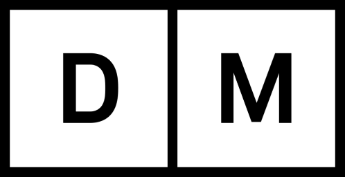

7.639 Wikipedia articles in 116 languages in which images from Category:Images from Digitalt Museum, Norway are used, grouped by language
This overview is based on this XML output of the GLAMorous tool d.d. 01-03-2024.
It was generated using the GLAMorousToHTML code.
Also see the documentation of this tool.
This data is also available as an Excel file. More structured data formats (csv, json) will be added in the future.
Available languages
Nynorsk (2.483)
English (960)
Nynorsk (627)
Swedish (426)
Egyptian Arabic (362)
German (320)
Russian (212)
Finnish (207)
French (203)
Danish (197)
Arabic (131)
Dutch (127)
Spanish (122)
Italian (121)
Polish (110)
Persian (94)
Czech (81)
Ukrainian (68)
Catalan (58)
Welsh (55)
Portuguese (54)
Eastern Armenian (42)
South Azerbaijani (41)
Korean (32)
Japanese (30)
Afrikaans (22)
Hebrew (21)
Hungarian (21)
Standard Estonian (21)
Chinese (20)
Kotava (19)
Serbian (19)
Turkish (19)
Esperanto (18)
Basque (15)
Indonesian (15)
Greek (14)
Slovene (14)
Belarusian (10)
Bulgarian (10)
Malagasy (10)
Northern Sami (10)
West Frisian (10)
Asturian (9)
Ido (9)
Lithuanian (8)
Vietnamese (8)
Georgian (7)
Romanian (7)
Latvian (6)
Macedonian (6)
Azerbaijani (5)
Cebuano (5)
Icelandic (5)
Uzbek (5)
Aragonese (4)
Occitan (4)
Breton (3)
Faroese (3)
Galician (3)
Irish (3)
Kurmanji (3)
Latin (3)
Marathi (3)
Piedmontese (3)
Swahili (3)
Tamil (3)
Telugu (3)
Thai (3)
Albanian (2)
Bangla (2)
Bhojpuri (2)
Bosnian (2)
Cornish (2)
Croatian (2)
Hausa (2)
Igbo (2)
Inari Sami (2)
Javanese (2)
Kashubian (2)
Luxembourgish (2)
Malay (2)
Nepali (2)
Sorani (2)
Urdu (2)
Western Armenian (2)
Bashkir (1)
Bavarian (1)
Buryat (1)
Cantonese (1)
Chuvash (1)
Classical Chinese (1)
Erzya (1)
Fijian (1)
Gagauz (1)
Hill Mari (1)
Karachay-Balkar (1)
Kazakh (1)
Khmer (1)
Kinyarwanda (1)
Ladin (1)
Low Eastern Saxon (1)
Malayalam (1)
Manx (1)
Minangkabau (1)
Old English (1)
Paiwan (1)
Punjabi (1)
Scots (1)
Somali (1)
Tumbuka (1)
Twi (1)
Venda (1)
Volapük (1)
Võro (1)
Zulu (1)
Nynorsk (2.483)
17._mai_(grunnlovsdag) |
1704_i_Norge |
1814_–_Spillet_om_Danmark_og_Norge |
Aagot_Børseth |
Aagot_Nissen |
Aagot_Vangen |
Aall |
Aase_Bjerkholt |
Aase_Bye |
Aaslaug_Aasland |
Aasta_Hansteen |
Abel_Seyler |
Abelhaugen |
Abildgaards_gate_(Oslo) |
Abildsø_gård |
Ada_Haug |
Ada_Kramm |
Adam_Hiorth_(forretningsmann) |
Adjutant |
Adolf_Bredo_Stabell |
Adolf_Hoel |
Adolf_Norseng |
Afrika_(TV-film) |
Aftenpostens_gullmedalje |
Agdenes_kirke |
Agnes_Charlotte_Gude |
Agnete_(skuespill) |
Agnethe_Schibsted-Hansson |
Agnus_dei_(smykke) |
Aiguillette |
Akerselva |
Akersgata_(Oslo) |
Akershusstranda_(gate) |
Akkarkrok |
Aksel_Gresvig |
Aksel_Zachariassen |
Albert_Lutuli |
Albin_Upp |
Aleksandra_Kollontaj |
Alette_Engelhart |
Alex_Brinchmann |
Alexander_Christian_Møller |
Alexander_Moissi |
Alexandra_von_Munthe_af_Morgenstierne |
Alf_Brodal |
Alf_Cranner |
Alf_Hurum |
Alf_Prøysen |
Alfred_Andersen-Wingar |
Alfred_Gjems_Selmer |
Alfred_Maurstad |
Alfred_Sinding-Larsen |
Allongeparykk |
Allround-NM_på_skøyter_1901 |
Allround-NM_på_skøyter_1950_for_herrer |
Allround-NM_på_skøyter_1951_for_herrer |
Allround-NM_på_skøyter_1952_for_herrer |
Allround-NM_på_skøyter_1954_for_herrer |
Allround-NM_på_skøyter_1956_for_herrer |
Allround-NM_på_skøyter_junior |
Allround-VM_på_skøyter_1895,_menn |
Alma_Fahlstrøm |
Alna_teglverk |
Alpint_under_Vinter-OL_1952 |
Alta |
Alterkalk |
Aluminiummuseet |
Alv_Kjøs |
Alvdal_kirke |
Amalie_Døvle |
Amandaprisen |
Amandaprisen_1986 |
Amandaprisen_1987 |
Amandaprisen_1989 |
Amandaprisen_1990 |
Amandaprisen_1991 |
Amandaprisen_1994 |
Amandaprisen_1995 |
Amandaprisen_1996 |
Amandaprisen_2001 |
Ambar |
Anders_Beer_Wilse |
Anders_Jahres_medisinske_pris |
Anders_Lysgaard |
Anders_Rambech |
Anders_Sandøe_Ørsted_Bull |
Anders_Svarstad |
Andrea_Kristine_Ingeborg_Caspara_Møller |
Andreas_Aagaard_Kiønig |
Andreas_Bjercke |
Andreas_Karset |
Andreas_Lauritz_Thune |
Andreas_Michael_Heiberg |
Andresen_(slekt_fra_Schleswig-Holstein) |
Anita_Thallaug |
Anker_(slekt) |
Anna_Backer |
Anna_Grostøl |
Anna_Munch |
Anne-Cath._Vestly |
Anne-Lise_Reinsfelt |
Anne-Lise_Tangstad |
Anne_Maries_vei_(Oslo) |
Anselm_Liljeström |
Anton_Blumenthal_Petersen |
Anton_Lædel |
Anton_Rønneberg |
Apoteket_Hjorten_i_Oslo |
Arbeidernes_ungdomsfylking |
Arbeiderpartiet |
Arild_Widerøe |
Arkeologiåret_1817 |
Arkeologiåret_1877 |
Arkeologiåret_1931 |
Arkeologiåret_1955 |
Arkeologiåret_2011 |
Arkitekturåret_1833 |
Arkitekturåret_1878 |
Arkitekturåret_1892 |
Arkitekturåret_1910 |
Arkitekturåret_1923 |
Arkitekturåret_1930 |
Armand_Carlsen |
Arne_B._Christiansen |
Arne_Bjørndal |
Arne_Christensen |
Arne_Durban |
Arne_Remlov |
Arne_Rostad |
Arne_Skouen |
Arne_Sunde |
Arno_Berg |
Arnoldus_Hille |
Arnoldus_von_Westen_Sylow_Koren |
Art_brut_(kunst) |
Arto_Koivisto |
Arups_gate_(Oslo) |
Arve_Opsahl |
Arvid_Fladmoe |
Asbestfilter |
Asbjørn_Kloster |
Asgaut_Steinnes |
Aslaug_Dahl |
Asta_Nørregaard |
Astra-ekspedisjonen |
Astrid_Folstad |
Astrid_Lous |
Astrid_Sandvik |
Astrup |
August_Eiebakke |
August_Heiberg_Kahrs |
August_Nielsen_(arkitekt) |
August_Schønemann |
August_Wilhelm_Boesen |
Augusta_Antoinette_Wergeland_Vedøe |
Aurora_i_blokk_Z |
Ave_Maria_(Valen) |
Avisåret_1857 |
Avisåret_1913 |
Avisåret_1938 |
Avkjølingsspann |
Axel_Collett |
Axel_Heiberg |
Axel_Holst |
Axel_Kielland |
Axel_Revold |
Axel_Seeberg |
Axel_Weebe |
B-såpe |
Backer |
Bagasje |
Bakka_kirke |
Bakkegata_(Oslo) |
Balansekjele |
Balders_gate_(Oslo) |
Balkeby |
Balsfjord_kirke |
Barbara_Larssen |
Barbra_Ring |
Bardiche |
Barne-TV_(NRK) |
Bartekopp |
Basarene |
Bastøy |
Bastøy_fengsel |
Bastøy_skolehjem |
Bautasteinen_på_Spinneren |
Beatmusikk |
Beauty_and_the_Beast_(sang) |
Begravelse_på_statens_bekostning |
Bekkelaget_stasjon |
Bekkelagshøgda |
Bekkelagsraset |
Bekkelagsterrassen_(Oslo) |
Bekker_i_Oslo |
Bekkestua |
Beltekjøretøy |
Benedicte_Scheel |
Benjamin_Vogt |
Benjamin_Wegner |
Bennett_Reisebureau |
Benny_Södergren |
Bent_Røiseland |
Bente_Børsum |
Bentse_Brug |
Bentsebrugata_(Oslo) |
Bentsegata_(Oslo) |
Berent_Schanche |
Berg_(Oslo) |
Bergen_filharmoniske_orkester |
Bergene |
Berger_&_Fossekleven_Fabrikker |
Bergsbakken |
Berit_Aunli |
Berit_Brænne |
Berit_Hilmo |
Berit_Johannessen |
Bernhard_Cathrinus_Pauss |
Bernhof_Ribsskog |
Bernt_Anker |
Bernt_Anker_Sverdrup |
Bernt_Johannessen |
Bernt_Lund |
Bertha_Ræstad |
Berthold_Grünfeld |
Betzy_Kjelsberg |
Bevarte_trehus_i_Norge_fra_middelalderen |
Big_Chief_Jazzband |
Bilitt_stasjon |
Bilthugger |
Birger_Bergersen |
Birger_Kildal |
Birger_Ruud |
Birhane |
Birigata_(Oslo) |
Birkenes_kirke |
Bislett_stadion |
Bislettbekken |
Bjarne_Amdahl |
Bjarne_Brustad |
Bjarne_Buntz |
Bjartmar_Gjerde |
Bjerggaden_(Oslo) |
Bjerkebanen |
Bjølsen |
Bjølsen_Valsemølle |
Bjølsenfossen |
Bjølsenparken |
Bjølstad_gård |
Bjørn_Hougen |
Bjørndaltrilogien |
Bjørnepatruljen |
Black_Boy |
Blekkhus |
Blindern |
Bobby_McLean |
Bodøsaken |
Bogstadveien_(Oslo) |
Bokken_Lasson |
Bolesølje |
Bolster |
Bomme |
Bonnevie_(slekt) |
Bonnevieprisen |
Bordkniv |
Borghild_Niskin |
Borgny |
Borrevannet |
Botsfengselet |
Botsfengselets_kirke |
Brannen_i_Grue_kirke |
Brannjern |
Brannvakten |
Bredesen_&_Jørgensen |
Bredo_von_Munthe_af_Morgenstierne_(1851–1930) |
Breimsvatnet |
Brekke_kirke |
Briskebyveien_(Oslo) |
Brit_Pettersen |
British_American_Tobacco_Norway |
Britta_Lech-Hanssen |
Broch_(slekt) |
Brochmann_(slekt) |
Broderi |
Brud |
Brudekjolen_(1914) |
Brudekrone |
Brudeskje |
Brugata_(Oslo) |
Brukskunst |
Bryggen_i_Bergen |
Bryllup |
Bryllupet_mellom_kronprins_Olav_og_prinsesse_Märtha |
Bryn_stasjon |
Brynjulf_Bull |
Bull |
Bunadsølv |
Bursring |
Busleik |
Busserull |
Bydel_Østensjø |
Bygningene_i_friluftsmuseet_på_Norsk_Folkemuseum |
Byløkke |
Bymarken |
Bæivasgiedde_kapell |
Bærums_Verk_hovedgård |
Bøkker |
Børsa_kirke |
C.J._Hambro |
C.N.R._Aamundsen |
C._P._Larsen |
COSLRival |
Calmeyergatens_Misjonshus |
Caltex |
Camilla_Wicks |
Cappelen_(slekt) |
Carl_A._Høyers_Stomatolfabrikk |
Carl_Abraham_Pihl |
Carl_Adolph_Dahl |
Carl_Andreas_Fougstad |
Carl_Dørnberger |
Carl_Ferdinand_Linthoe |
Carl_Frederik_Ferdinand_Stanley |
Carl_Frederik_Vogt |
Carl_Fredric_von_Breda |
Carl_Fredrik_Petlund |
Carl_Frithjof_Smith |
Carl_Johan_Anker |
Carl_Julius_Lorch |
Carl_Michalsen |
Carl_Peter_Parelius_Essendrop |
Carl_Struve |
Carl_Størmer |
Carl_Sundt-Hansen |
Carsten_Anker |
Carsten_Byhring |
Carsten_Tank |
Caspar_Herman_Hausmann |
Caspar_von_Cappelen |
Cathinka_Guldberg |
Central_Jamaat-e_Ahl-e_Sunnat |
Centrum |
Champagneglass |
Christensen_(slekt_fra_Gjerpen) |
Christian_Adolph_Diriks |
Christian_August_Lorentzen |
Christian_Christensen_Kollerud |
Christian_Ditlev_Adolph_Arenfeldt |
Christian_Eggen_(maler) |
Christian_Frederik |
Christian_H._Grosch |
Christian_Horneman |
Christian_IVs_sal |
Christian_Krohgs_gate_(Oslo) |
Christian_Lasson |
Christian_Linthoe |
Christian_Magnus_Falsen |
Christian_Reuter |
Christian_Sandal |
Christian_Sinding |
Christian_Skredsvig |
Christian_Stockfleth |
Christian_Sørenssen |
Christian_Thams |
Christian_Wisbech_(1869–1922) |
Christiane_Schreiber |
Christiania_Bank_og_Kreditkasse |
Christiania_Borgerskole |
Christiania_Glasmagasin |
Christiania_Theater |
Christiania_Tivoli |
Christinedal_-_Harry_Fetts_vei_10 |
Christopher_Borch |
Christopher_Fougner_(1876–1950) |
Christopher_Frimann_Omsen |
Christopher_Hornsrud |
Christopher_Knudsen |
Christopher_Ridder |
Christopher_Tostrup |
Christopher_Tostrup_Paus |
Clara_Mørch |
Clara_Tschudi |
Clara_Ursin |
Clarion_Collection_Hotel_Gabelshus |
Claus_Bendeke |
Claus_Pavels |
Club_7 |
Cocktailshaker |
Colbjørnsens_gate_(Oslo) |
Collett |
Colletts_gate_(Oslo) |
Conrad_Arnesen |
Constance_Bruun |
Constance_Nygaard |
Constance_Wiel_Schram |
Coop_Norge |
Corneliussen_(slekt) |
Cup |
Cæciliaforeningen |
DS_«Alpha» |
DS_«Anderson» |
DS_«Asgerd» |
DS_«Bastø»_(1885) |
DS_«Forlandet» |
DS_«Globe_VIII»_(1936) |
DS_«Hamar» |
DS_«Isbjørn» |
DS_«Jernbarden» |
DS_«Juno»_(1886) |
DS_«Lyngenfjord»_(1903) |
DS_«Skreia» |
DS_«Tordenskjold»_(1876) |
DS_«Vikingen»_(1900) |
DS_«Viola» |
Dagfinn_Grønoset |
Dagfinn_Hauge |
Dagfinn_Tveito |
Dagmar_Myhrvold |
Dal_kirke |
Dale_of_Norway |
Danmark_(øy) |
David-Andersen_(selskap) |
De_Blå_Omnibusser |
De_Samiske_Samlingers_Museums-_og_historielag |
De_VI_olympiske_vinterleker_Oslo_1952 |
Dedichen |
Degernes_kirke |
Dekoktbøsse |
Demarkasjonslinjen_i_1940 |
Den_Norske_Hesteskosømfabrik |
Den_norske_Nordhavsekspedisjon_1876–78 |
Den_norske_løve |
Dessertkniv |
Det_Ankerske_Waisenhus |
Det_Harmoniske_Akademis_Tegneskole |
Det_Norske_Akademi_for_Språk_og_Litteratur |
Det_engelske_kvarter |
Det_første_Wedel-ministeriet |
Det_gule_chor |
Det_kongelige_hoff |
Det_kongelige_slott |
Det_norske_Theater |
Det_rare |
Didrich_von_Cappelen |
Didrik_Arup_Seip |
Diesen |
Dietrichson_(slekt) |
DigitaltMuseum |
Dikke_Eger |
Diktafon |
Dobbeltbolle |
Dobbeltskje |
Dobbeltvev |
Dokkveien_(Oslo) |
Dolstad_kirke |
Domus_Juridica |
Dovrebanen |
Down_Town_Key_Club |
Dragkiste |
Dragset_Verk |
Draktspenne |
Drammeglass |
Drammensveien_(Oslo) |
Drikkehorn |
Drikkekanne |
Dronninghavn |
Dugnad |
Dukkemann |
Dverberg_kirke |
Dåpskanon |
Dødsfall_i_2001 |
Dødsfall_i_2002 |
Dødsfall_i_2004 |
Dødsfall_i_2005 |
Dødsfall_i_2006 |
Dødsfall_i_2007 |
Dødsfall_i_2008 |
Dødsfall_i_2009 |
Dødsfall_i_2011 |
Dødsfall_i_2013 |
Dødsfall_i_2023 |
Døpefat |
Düsseldorfskolen |
EM_på_skøyter_1904,_menn |
EM_på_skøyter_1923,_menn |
EM_på_skøyter_1962,_menn |
EM_på_skøyter_1964,_menn |
EM_på_skøyter_1968,_menn |
Eckhoff |
Edderkoppen_(TV-episode) |
Edel_Eckblad |
Edvard_Drabløs |
Egeberg_(slekt_fra_Sjælland) |
Egebergs_Ærespris |
Egede-Nissen |
Egelands_jernverk |
Egertorget_(Oslo) |
Egil_Johansen_(1934–1998) |
Egil_Åsman |
Eidsfos_Jernverk |
Eidsvollsbygningen |
Eigil_Nansen |
Eilert_Dahl |
Eilert_Sundts_gate_(Oslo) |
Eilif_Peterssen |
Einar_Berntsen |
Einar_Engelstad_(arkitekt) |
Einar_Frogner |
Einar_Gerhardsen |
Einar_Gerhardsens_andre_regjering |
Einar_Gerhardsens_første_regjering |
Einar_Gerhardsens_tredje_regjering |
Einar_Sagstuen |
Einar_Sissener |
Einar_Skavlan |
Einar_Skjæraasen |
Eindride_Slaatto |
Einskilskopp |
Eivind_Berggrav |
Eivind_Eckbo_(1873–1966) |
Eivind_Engelstad |
Eivind_G._Tveiten |
Eivind_Solberg |
Ekeberg_gård_(Oslo) |
Ekeberghallene |
Ekebergkolonien |
Ekebergrestauranten |
Ekebergskrenten |
Ekely |
Ekman,_Smith_&_Michalsen |
Ekofiskfeltet |
Eksplosjonen_på_Grønlikaia |
Elias_Corneliussen |
Elisa_Wiborg |
Elisabeth_Granneman |
Elisabeth_Schweigaard_Selmer |
Ella_Anker |
Ella_Hval |
Ellen_Andrea |
Ellen_Gulbranson |
Ellen_Schytte-Jacobsen |
Elling_Holst |
Elsa_Laula_Renberg |
Elsa_Skjerven |
Else_Breen |
Elvebakken_videregående_skole |
Elvegata_(Oslo) |
Emanuel_Minos |
Embetsmannsstaten |
Emil_Aubert |
Emma_Matthiasen |
Empirekvartalet |
En_fortid |
Enerhaugen |
Enga_(Oslo) |
Enige_og_tro_inntil_Dovre_faller |
Enok_Sletengen |
Epålett |
Erica_Darbow |
Erik_Brofoss |
Erik_Diesen |
Erik_Pløen |
Erlandssølje |
Erling_Audensen |
Erling_Bjørnson |
Erling_Lorck |
Erling_Maartmann |
Erling_Merton |
Erling_Wikborg |
Erna_Schøyen |
Ernst_Glaser |
Ernst_Motzfeldt |
Espen_Skjønberg |
Esviken |
Et_døgn_uten_løgn |
Eugen_Skjønberg |
Europavei_6_(Nordland) |
Eurovision_Song_Contest_1969 |
Eva_Lunde |
Evald_Pauss |
Evald_Rygh |
Even_Godager |
Even_Thorkildsen_Lande |
Even_Thorsen |
Eyvind_Getz |
FLK_«Norhval» |
FLK_«Ronald»_(1920) |
FLK_«Sir_James_Clark_Ross»_(1930) |
FLK_«Suderøy» |
FLK_«Thorshøvdi» |
FLK_«Vikingen» |
Fadermorder |
Falsen |
Fangedrakt |
Fant_(film) |
Fattigstugangen_(Oslo) |
Fearnley_&_Eger |
Fearnleys_olympiske_ærespris |
Feltflaske |
Femmila_i_Holmenkollen |
Fergesambandet_Horten–Moss |
Ferje |
Festningsplassen_(Oslo) |
Fetsund_bru |
Filigran |
Filmåret_1920 |
Filmåret_1930 |
Filmåret_2001 |
Filosofgangen_(Oslo) |
Finn_Carling |
Finn_Eriksen |
Finn_Krafft |
Finn_Qvale |
Firda_videregående_skole |
Fiskekniv |
Fiskekrok |
Fjeldhus_Bruk |
Fjols_til_fjells |
Fjærland_kirke |
Fjærpenn |
Flaskebrikke |
Flaskefor |
Flaskekasse |
Flaskekurv |
Flateby |
Fleischer |
Fleksnes_fataliteter |
Flisberget_(Oslo) |
Flosshatt |
Flukten_fra_Oslo_etter_9._april_1940 |
Flyndreskje |
Flå_kirke_(Buskerud) |
Fløtemugge |
Fløteskummer |
Fløyte |
Foldekniv |
Foldereid_kirke |
Fonduegaffel |
For_sin_kjærlighets_skyld |
Forsa |
Forskjærgaffel |
Forskjærkniv |
Forsvarets_Stabsmusikkorps |
Fortinning |
Foss_Bryggeri |
Fottøy |
Fougner_(slekt) |
Framneshaven_(Tinker’n) |
Francis_Bull |
Francis_Hagerup |
Frank_Hansen |
Fred._Olsen_(1857–1933) |
Fred._Olsen_(1929–) |
Frederik_Bekkevold |
Frederik_Christian_Lindeman |
Frederik_Collett |
Frederik_Gottschalk_von_Haxthausen |
Frederik_Heidmann |
Frederik_Julius_Bech |
Frederik_Petersen |
Frederik_Schmidt |
Frederik_Wilhelm_Stabell |
Frederik_Wilhelm_Treschow |
Frederik_av_Hessen |
Frederiks_gate_(Oslo) |
Frederiks_gate_3 |
Fredrik_Christian_Sand |
Fredrik_Christian_Wildhagen |
Fredrik_Monsen |
Fredrik_Vogt |
Fredrikke_Nielsen |
Fredrikke_Schmedling |
Freia |
Freiaparken |
Fremad_marsj! |
Fremskrittspartiet |
Frida_Hansen |
Fridthjov_Anderssen |
Fridtjov_Birkeli |
Friggfeltet |
Frigjøringsdagen_(Norge) |
Frimann_Falck_Clausen |
Frithjof_M._Plahte |
Frits_Hansen |
Frits_Thaulow |
Fritz_Huitfeldt_(1851–1938) |
Frogner_Hovedgård |
Frogner_stadion |
Frognerparken |
Frognerseteren |
Fru_Biksby_og_skinnkåpen |
Fru_Inger_til_Østråt_(film) |
Fru_Ragna_Nielsens_skole |
Fruktkniv |
Frydenlund_Bryggerier |
Frøen_stasjon |
Frølich_(slekt) |
Frønsvollen |
Funny_Boys |
Furnes_kirke |
Fylkesvei_7500 |
Fyrfat |
Færøyene_under_første_verdenskrig |
G.C.Rieber_&_Co |
Gabels_gate_(Oslo) |
Gabriel_Gustafson |
Gabriel_J._Udnæs |
Gabriel_Kielland_(1871–1960) |
Gabriel_Lund_(1773–1832) |
Gabriel_Skagestad |
Gabrielle_Bidenkap |
Gade_(slekt) |
Gaffel |
Gallauniform |
Gamle_Aker_kirke |
Gamle_Hunn_kirke |
Gamle_Norges_Bank |
Gamle_Tollbod |
Gamle_furutrær |
Gamlebyen_gravlund |
Geir_Kjetsaa |
Geitastrand_kirke |
Georg_Burchard_Jersin |
Georg_Carl_Buonaparte_Heyerdahl |
Georg_Jacob_Bull |
Georg_Jacob_Stousland |
Georg_Prahl_Harbitz |
Georg_Sverdrup |
Georg_Ulrich_Wasmuth |
Gerd_Nyquist |
Gerda_Christophersen |
Gerda_Ring |
Gerhard_Schjelderup |
Gidske_Anderson |
Gipsmaker |
Gisken_Wildenvey |
Gisle_Straume |
Gjermund_Eggen |
Gjerstad |
Gjerstad_kirke_(Agder) |
Gjert_Andersen |
Gjertsens_skole |
Gjetslebolle |
Gjørtler |
GlasMagasinet |
Glibb |
Glomfjord_kraftverk |
Gram_(slekt) |
Grand_Hotel_(Molde) |
Granstangen_(Oslo) |
Gravfølge |
Grefsen |
Grefsenkollveien_(Oslo) |
Grefsenplatået |
Grefsenåsen |
Grefsheim |
Gregers_Winther_Wulfsberg |
Gressbanen_(Oslo) |
Gressholmen_sjøflyhavn |
Greta_Molander |
Grete_Brunvoll |
Grete_Kummen |
Grete_Prytz_Kittelsen |
Grev_(redskap) |
Greve_(slekt) |
Greveveien_(Oslo) |
Grimsrød_gård |
Grini_fangeleir |
Grorud_Tekstilfabrik |
Grundthøvel |
Grutseter_kirke |
Gryteunderlag |
Grytten_kirke |
Grytviken_kirke |
Grønlandsleiret_(Oslo) |
Grønlia |
Gud_wære_med_os-gården |
Gudmund_Hoel |
Gudrun_Klausen |
Gunhild_Schytte-Jacobsen |
Gunnar_Pedersen_AS |
Gunnar_Utsond |
Gurdwara_Sri_Guru_Nanak_Dev_Ji |
Guri_Stormoen |
Guro_(bok) |
Gustav_Adolph_Lammers |
Gustav_Borgen |
Gustav_Emil_Holter |
Gustav_Guldberg_(1897–1938) |
Gustav_Lærum |
Gustav_Peter_Blom |
Gutorm_Gjessing |
Guttorm_Hansen |
Gyldenløves_gate_(Oslo) |
Gïeleaernie |
Gøril_Havrevold |
Haagen_Ringnes |
Haakon_Ditlef_Lowzow |
Haakon_Shetelig |
Haakon_VII |
Haakon_VIIs_gate_(Oslo) |
Hajnnhojnn_i_bajnn_og_13_andre_trønderviser |
Halde |
Haldis_Halvorsen |
Halfdan_Ditlev-Simonsen |
Halfdan_Egedius |
Halfdan_Gyth_Dehli |
Halfdan_Møller |
Halfdan_Strøm |
Hallingdal |
Hallings_skole |
Halvard_Hoff |
Halvard_Lange |
Halvdan_Koht |
Halvor_Heyerdahl_Rasch |
Halvor_P._Eggan |
Halvor_Solberg |
Hamar_IL_bandy |
Hamar_og_Omland_Bilruter |
Hammerfest |
Hammersborg_torg |
Hanken_(Oslo) |
Hanna_Resvoll-Holmsen |
Hannah_Ryggen |
Hanne_Skram |
Hans_Aall |
Hans_Bille |
Hans_Christian_Petersen |
Hans_E._Kinck |
Hans_Edvard_Wisløff |
Hans_Gulbranson |
Hans_H._Rode |
Hans_Hansen_Grimelund |
Hans_Haslum |
Hans_Heiberg |
Hans_Hein_Nysom |
Hans_Horn |
Hans_Høegh |
Hans_Jacob_Stabel |
Hans_Jæger |
Hans_Kirkegaard_Fleischer |
Hans_Leganger_Reusch |
Hans_Midelfart |
Hans_Rasmus_Astrup_(1831–1898) |
Hans_Ryggen |
Hans_Skabo |
Hans_Thomas_Meinich |
Hansteen_(slekt) |
Hansteens_gate_(Oslo) |
Harald_Bertrand |
Harald_Grønningen |
Harald_Hals |
Harald_Løvenskiold |
Harald_Meltzer |
Harald_Nielsen |
Harald_Olaf_Hugo_Hals |
Harald_Olsen |
Harald_Otto |
Harald_Renbjør |
Harald_Sohlberg |
Harald_Sverdrup |
Harald_Tusberg |
Harald_Wergeland_(1904–89) |
Harbitz_(slekt) |
Hardangerbunad |
Harelabbveien_(Oslo) |
Harry_Kvebæk |
Hartvig_Bache-Wiig |
Hartvig_Marcus_Lassen |
Hartvig_Nissens_skole |
Hattespenne |
Hauketo |
Hausmanns_bru |
Havnebanen |
Havnelageret |
Hedevig_Lund |
Hegdehaugsveien_(Oslo) |
Hegvik_kirke |
Heibergs_gate_(Oslo) |
Heimferd |
Heinrich_August_Grosch |
Heinrich_Jürgensen |
Helena_Takalo |
Helene_Andersen |
Helene_Gundersen |
Helga_Backe |
Helge_Hagerup |
Helge_Ingstad |
Helge_Reiss |
Helge_Sivertsen |
Helsedirektoratet_(1945–1993) |
Helsetrøye |
Heltzen |
Helvetesdebatten |
Henie_Onstad_Kunstsenter |
Henki_Kolstad |
Henning_Astrup_(1864–1896) |
Henny_Moan |
Henny_Skjønberg |
Henriette_Bie_Lorentzen |
Henriette_Pauss |
Henriette_Schønberg_Erken |
Henriette_Wegner |
Henriette_Wegners_paviljong |
Henrik_Ameln |
Henrik_Backer |
Henrik_Børseth |
Henrik_Carstensen |
Henrik_Frederik_Arild_Sibbern |
Henrik_Grosch |
Henrik_Groth |
Henrik_Hille |
Henrik_Homan |
Henrik_Ibsen |
Henrik_Laurentius_Helliesen |
Henrik_Lund |
Henrik_Nissen_d.y. |
Henrik_Sørensen |
Henrik_Thrap-Meyer |
Henrik_Wergelands_allé_(Oslo) |
Henry_Lehre |
Herman_Anker |
Herman_G._Gade |
Herman_Johan_Foss_Reimers |
Herman_Wedel-Jarlsberg |
Herman_Wedel-Jarlsberg_(1818–1888) |
Heyerdahl |
Hidra_kirke |
Hieronymus_Heyerdahl_(1773–1847) |
Hildur_Andersen |
Hildur_Nilsen |
Hilkka_Riihivuori |
Hilmar_Stigum |
Himmelseng |
Hjalmar_Andersen |
Hjalmar_Broch |
Hjalmar_Haalke |
Hjalmar_Kielland_Wergeland |
Hjalmar_S._Bakstad |
Hjemmestyrkene |
Hjertesølje |
Hjort_(slekt) |
Hjula_Væverier |
Hof_kirke_(Åsnes) |
Hoff_kirke |
Hoffjegermester |
Holk_(oppbevaringskar) |
Holmenkollen_Skifestival |
Holmenkollmedaljen |
Holmens_gate_(Oslo) |
Holmsen |
Holocaust_i_Norge |
Holtangården_(Oslo) |
Holtegata_(Oslo) |
Honoria_Dietrichson |
Hordaland |
Horneman_(slekt) |
Hornlue |
Hornring |
Horten |
Horten_ingeniørhøgskole |
Horten_kirke |
Hospitalsgata_(Oslo) |
Houens_fonds_diplom |
Hovinbekken |
Hovinsholm |
Hroar_Dege |
Hugo_Conrad_Munthe-Kaas |
Hugo_Lous_Mohr |
Hugo_Munthe-Kaas_(1879) |
Hugo_Wathne |
Huitfeldt |
Huitfeldts_gate_(Oslo) |
Hurtigløp_på_skøyter_under_Vinter-OL_1952 |
Hurtigløp_på_skøyter_under_Vinter-OL_1960_–_1500_meter_menn |
Husmor |
Husmorskole |
Hval_kirke |
Hvitvinsglass |
Hydro_Høyanger_Metallverk |
Hylk |
Håkon_Kyllingmark |
Håkon_Mjøen |
Håkon_Pedersen_(skøyteløper) |
Håkon_Vestly |
Håndkolorering |
Håndverksfag_og_håndverksteknikker |
Hårarbeid |
Hårda_viljor |
Hægebostad_kirke |
Høegh |
Høie_Fabrikker |
Hølandsgata_(Oslo) |
Hølonda_kirke |
Hønefoss_kirke_(1862–2010) |
Hønse-Lovisa |
Høvik |
Høyanger |
Høyanger_K1_kraftverk |
Høyanger_kraftverk |
Høybakken |
Høybråten_(Oslo) |
Høyesterettsjustitiarius |
Høyre |
Høytorp_fort |
ISO_3103 |
I_en_sprukken_rønne_nedi_Vika |
Ibsen_(slekt_fra_Stege) |
Ida_Hellesen |
Ideal_flatbrødfabrikk |
Immanuels_kirke |
Industrigata_(Oslo) |
Inga_Bucher |
Inga_Lærum_Liebich |
Ingeborg_Krafft |
Ingebrigt_Davik |
Ingier_(slekt) |
Ingierstrand_bad |
Ingrid_Wigernæs |
Isak_Kimoe |
Isak_Nilssen_Botnen |
Isbøtte |
Isdrift |
Ivar_Aasen |
Ivar_Formo |
Ivar_Lo-Johansson |
Ivar_Lykke |
Ivar_Lykkes_regjering |
Ivar_Medaas |
Ivar_Næss |
Iver_Gundersen_Øvstrud |
Ivo_Caprino |
J.L._Aamundsen |
J._Andersen_Aars |
Jaastadfela |
Jack_Fjeldstad |
Jacob_Aall |
Jacob_Aall_Bonnevie |
Jacob_Aalls_gate_(Oslo) |
Jacob_Calmeyer |
Jacob_Coning |
Jacob_Dybwad |
Jacob_Hersleb_Darre |
Jacob_Munch |
Jacob_Nielsen |
Jacob_Rasch |
Jacob_Steen |
Jacob_Thurmann_Ihlen |
Jacob_Wulfsberg |
Jacqueline_du_Bief |
Jakob_Weidemann |
Jakobsbakken |
Jaktflaske |
James_Collett_(1728–1794) |
Jan_Lindvall |
Jan_Wølner |
Janka_Polanyi |
Janny_Grip_Isachsen |
Janteloven |
Janusfabrikken |
Jar_kirke |
Jarand_Rønjom |
Jarlsborgveien_(Oslo) |
Jarlsø_Verft |
Jazz_i_Norge |
Jens-Anton_Poulsson |
Jens_Bjørneboe |
Jens_Frølich_Tandberg |
Jens_Hundseid |
Jens_Hundseids_regjering |
Jens_Rolfsen |
Jens_Schow_Fabricius |
Jens_Teigen |
Jens_von_der_Lippe |
Jernbanegata_(Oslo) |
Jernbanetorget_stasjon |
Jess_Anker |
Jesuittparagrafen |
Jo_Tenfjord |
Jo_Vestly |
Joachim_Frich |
Joachim_Rønneberg |
Johan_Anton_Lippestad |
Johan_Bernhard_Hjort |
Johan_Bojer |
Johan_Brun |
Johan_Christian_Castberg |
Johan_Diederich_Behrens |
Johan_E._Mellbye |
Johan_Ellefsen_(arkitekt) |
Johan_Evjen |
Johan_Gunder_Adler |
Johan_Haanes |
Johan_Henrik_Wiers-Jenssen |
Johan_Jacob_Bennetter |
Johan_Ludwig_Mowinckel |
Johan_Ludwig_Mowinckels_første_regjering |
Johan_Ludwig_Mowinckels_tredje_regjering |
Johan_Nygaardsvold |
Johan_Nygaardsvolds_regjering |
Johan_Randulf_Bull |
Johan_Scharffenberg |
Johan_Steen |
Johan_Storm_Munch_(arkitekt) |
Johan_Vestly |
Johanne_Brun |
Johanne_Regine_Reimers |
Johanne_Vogt_Lie |
Johannes_Arneson |
Johannes_Bergh_(1837–1906) |
Johannes_Brun |
Johannes_Nilssøn_Skaar |
Johannesgata_(Oslo) |
John_Collett_(1758–1810) |
John_Hansen_Budalsplads |
John_Hansen_Sørbrøden |
John_Moses |
John_Savio |
John_Tverdahl |
John_Wolden |
Jonas_Schanche_Jonasen |
Jonsokbryllup |
Jordalgata_(Oslo) |
Josefines_gate_(Oslo) |
Julie_Backer |
Julie_Lampe |
Julius_Nicolaysen |
Just_Gude-Smith |
Jødeparagrafen |
Jørgen_Aall |
Jørgen_Aall_(1806–1894) |
Jørgen_Gjerdrum |
Jørgen_Skeel |
Jørgen_Sørensen |
Jøtul_(selskap) |
KNA-hotellet_i_Oslo |
Kaffeheis |
Kaffekanne |
Kaffekjele |
Kaffekule |
Kagge |
Kaldnes_Mekaniske_Verksted |
Kalle_Løchen |
Kallhovde |
Kammerherre |
Kampen_om_tungtvannet_(film) |
Kane_(drikkekar) |
Kanten_(gate) |
Kantineflaske |
Kaos_og_Bjørnar |
Kapselapparat |
Kaptein_Sorte_Bill |
Karaffel |
Kardemommeloven |
Karding |
Karen_Elieson |
Karenslyst |
Kari |
Kari_Borg_Mannsåker |
Kari_Simonsen |
Kari_Skjønsberg |
Karl_Andersen_(musiker) |
Karl_Bilgrei |
Karl_Evang |
Karl_III_Johan |
Karl_Jensson |
Karl_Johans_gate |
Karl_Meyer |
Karl_Sigurdsson |
Karl_Uchermann |
Karl_den_XIIs_gate |
Karveskurd |
Kasper_Idland |
Kassasjon |
Kastellveien_(Oslo) |
Katnosa_gård |
Kepi |
Kielfreden |
Kilebygda_kirke |
Kirkegårdsgangen_(Oslo) |
Kirker_i_Norge |
Kirsten_Langbo |
Kirsti_Sparboe |
Kiste |
Kistebord |
Kistestol |
Kistrand_kirke |
Kitty_Kielland |
Kitty_Wentzel |
Kjell_Andreassen |
Kjell_Aukrust |
Kjell_Bækkelund |
Kjell_Thue |
Kjenge |
Kjærlighetsstien_(Oslo) |
Kjøllefjord |
Kjøllefjord_gamle_kirke |
Klatremus_og_de_andre_dyrene_i_Hakkebakkeskogen |
Klattiklatt_drar_til_negerland |
Klemetsrud_skole |
Klingenberggata_(Oslo) |
Klipp_fra_«Prospektkort»-serien |
Klostergata_(Moss) |
Klostergata_14_(Moss) |
Kløvflaske |
Knekt |
Kneppeskjærutstikkeren |
Knespenne |
Knud_Bull |
Knud_Graah |
Knut_Haukelid |
Knut_Risan |
Knut_Ødegård |
Kobberslager |
Kofte |
Kolrosing |
Kommager |
Kommunestyrevalget_1910 |
Kommunestyrevalget_1934 |
Kongelig_Norsk_Automobilklub |
Kongens_gate_(Oslo) |
Kongens_gate_17_(Moss) |
Kongens_gate_22_(Moss) |
Kongens_gate_26_(Moss) |
Kongsberg_Våpenfabrikk |
Kongshavn |
Konow |
Konrad_Galaaen |
Konrad_Nordahl |
Kontraskjæret |
Koren |
Kranes_konditori |
Kravatt |
Krepsekniv |
Kretsen |
Krigskorset |
Kristen_Arnesen |
Kristen_Holbø |
Kristen_Kvello |
Kristian_Bakken |
Kristian_Birkeland |
Kristian_Brandt |
Kristiane_Frisak |
Kristiania-bohemen |
Kristiansand_børs |
Kristine_Bonnevie |
Kristofer_Lehmkuhl |
Krohgstøtten |
Krukke_(oppbevaringskar) |
Krus |
Kubbestol |
Kuben_videregående_skole |
Kullmann-saken |
Kulturdepartementets_priser_for_barne-_og_ungdomslitteratur |
Kunstnernes_restaurant_Blom |
Kunståret_1800 |
Kunståret_1822 |
Kunståret_1882 |
Kunståret_1898 |
Kunståret_1900 |
Kunståret_1901 |
Kunståret_1904 |
Kunståret_1920 |
Kunståret_1962 |
Kunståret_1982 |
Kunståret_1990 |
Kunståret_2001 |
Kvinnelig_stemmerett |
Kværner_(selskap) |
Kværner_Brug |
Kyse |
Kåre_Orud |
L.W.Th._Bratz |
Labrofossen |
Ladegangene_(Oslo) |
Lager_Nordstrand |
Lagertha_Munthe |
Lagging |
Laila_Dalseth |
Lakkegata_(Oslo) |
Lallakroken_(Oslo) |
Lambertseter_senter |
Lambertseterveien_(Oslo) |
Landsmøte |
Lange_(etternavn) |
Langleiken_(Oslo) |
Langset_kirke |
Lars-Arne_Bölling |
Lars_Andreas_Oftedahl |
Lars_Backer |
Lars_Erik_Eriksen |
Lars_Hertervig |
Lars_Johannes_Irgens |
Lars_Larsen_Forsæth |
Lars_Larsen_Ingulfsvand |
Lars_Roverud |
Lars_Tvinde |
Laugspokal |
Laura_Gundersen |
Laurits |
Lauritz_Bergendahl |
Lauritz_Bergendahls_gate_(Stavanger) |
Lauritz_Birkeland |
Lauritz_Sand |
Lauritz_Weidemann |
Lavik_kirke |
Leiegårdene_i_Oslos_historiske_murby |
Leif_Amble-Næss |
Leif_Andreas_Larsen_(1898–1978) |
Leif_Enger |
Leif_Juster |
Lensvik_kirke |
Leonardstatuetten |
Liadalen_(Oslo) |
Lille_Idas_blomster |
Lille_Kirkebakke_(Oslo) |
Lilleaker |
Lillebil_Ibsen |
Lilleborg_(selskap) |
Lillebror_og_Knerten |
Lillehammer_Kunstmuseum |
Lillemor_von_Hanno |
Lillienskiold |
Lily_Weiser-Aall |
Lindeman_(slekt) |
Lindern |
Lisa_Kristoffersen |
Liste_over_Norges_kirke-_og_undervisningsministre |
Liste_over_Norges_monarker |
Liste_over_Norges_revisjonsministre |
Liste_over_Norges_statsministre |
Liste_over_eidsvollsmenn |
Liste_over_flytende_hvalkokerier |
Liste_over_kirker_i_Finnmark |
Liste_over_kirker_i_Oslo |
Liste_over_kjente_sarpinger |
Liste_over_kjente_skiensfolk |
Liste_over_kulturminner_i_Asker |
Liste_over_kulturminner_i_Bærum |
Liste_over_kulturminner_i_Elverum |
Liste_over_kulturminner_i_Gjerstad |
Liste_over_kulturminner_i_Gjøvik |
Liste_over_kulturminner_i_Halden |
Liste_over_kulturminner_i_Karasjok |
Liste_over_kulturminner_i_Kongsvinger |
Liste_over_kulturminner_i_Marka_(Oslo) |
Liste_over_kulturminner_i_Ringsaker |
Liste_over_kulturminner_i_Sentrum_(Oslo) |
Liste_over_kulturminner_i_Tokke |
Liste_over_kulturminner_i_bydel_Bjerke |
Liste_over_kulturminner_i_bydel_Frogner |
Liste_over_kulturminner_i_bydel_Grünerløkka |
Liste_over_kulturminner_i_bydel_St._Hanshaugen |
Liste_over_kulturminner_i_bydel_Ullern |
Liste_over_kulturminner_i_bydel_Vestre_Aker |
Liste_over_kulturminner_i_bydel_Østensjø |
Liste_over_kunstverk_på_norske_frimerker |
Liste_over_lagtingspresidenter |
Liste_over_malerier_i_utstillingen_Kunst_og_ukunst |
Liste_over_mottakere_av_Nobels_fredspris |
Liste_over_norgesmestere_i_langrenn |
Liste_over_odelstingspresidenter |
Liste_over_ordførere_i_Aker |
Liste_over_ordførere_i_Bærum |
Liste_over_ordførere_i_Drammen |
Liste_over_ordførere_i_Elverum |
Liste_over_ordførere_i_Hamar |
Liste_over_ordførere_i_Kolvereid |
Liste_over_ordførere_i_Vang_(Hedmark) |
Liste_over_personer_fra_Oslo |
Liste_over_presidenter_i_Norges_Skøyteforbund |
Liste_over_sesonger_av_NM_i_fotball_for_menn |
Liste_over_stasjoner_på_T-banen_i_Oslo |
Liste_over_statsledere_i_1959 |
Liste_over_statsledere_i_1960 |
Liste_over_statsledere_i_1961 |
Liste_over_statsledere_i_1962 |
Liste_over_stortingsrepresentanter_1954–1957 |
Liste_over_stortingsrepresentanter_1958–1961 |
Liste_over_stortingsrepresentanter_1961–1965 |
Liste_over_stortingsrepresentanter_1973–1977 |
Liste_over_stortingsrepresentanter_1977–1981 |
Liste_over_stortingsrepresentanter_for_Kristiansund |
Liste_over_stortingsrepresentanter_for_Nord-Trøndelag |
Liste_over_stortingsrepresentanter_for_Risør |
Liste_over_stortingsrepresentanter_for_Sør-Trøndelag |
Liste_over_stortingsrepresentanter_for_Trondheim_og_Levanger |
Liste_over_sysselmenn_og_sysselmestere_på_Svalbard |
Liste_over_tidligere_offentlige_skoler_i_Oslo |
Litteraturåret_1850 |
Litteraturåret_1854 |
Litteraturåret_1899 |
Litteraturåret_1920 |
Litteraturåret_1926 |
Litteraturåret_1945 |
Litteraturåret_1959 |
Litteraturåret_2001 |
Litteraturåret_2008 |
Litteraturåret_2009 |
Liv_Thorsen |
Liv_Ullmann |
Ljan |
Lofthusopprøret |
Lommelerke |
Lorange_(slekt) |
Lorry_(restaurant) |
Losjakke |
Loslue |
Louise_Brun |
Lous_(slekt) |
Ludvig_Bergh |
Ludvig_Frederik_Brock |
Ludvig_G._Braathen |
Ludvig_Irgens-Jensen |
Ludvig_Müller |
Ludwig_Wittgenstein |
Lully_Krohn |
Lund_(slekt) |
Lusekofte |
Luster |
Lyn_1896_Fotballklubb |
Lyrikkåret_1813 |
Lyrikkåret_1896 |
Lyrikkåret_1900 |
Lyrikkåret_1926 |
Lyrikkåret_1966 |
Lyrikkåret_2008 |
Lystgård |
Løvenskiold |
Løvliveien_(Oslo) |
MS_«Holger_Danske» |
Magda_Blanc |
Magdalena_Berg |
Magistraten_i_Christiania |
Magnhild_Haalke |
Magni_Wentzel |
Magnus_Andersen_(redaktør) |
Magnus_Nilssen |
Majorstuen |
Majorstuen_kirke |
Majorstuhuset |
Majorstuveien_(Oslo) |
Makko |
Malje |
Maljespenne |
Mamma_(TV-serie) |
Manglerud_politistasjon |
Mangletre |
Marcus_Gjøe_Rosenkrantz |
Marcus_Grønvold |
Marcus_Pløen |
Marentius_Thams |
Margarete_Corneliussen |
Margrethe_Parm |
Margrethe_von_der_Lippe |
Mari_Maurstad |
Maria_Dehli |
Mariakirken_i_Tønsberg |
Marie_Magdalena_Rustad |
Marie_Takvam |
Marie_Tannæs |
Marit_Halset |
Marit_Myrmæl |
Marthinius_Skøien |
Martinius_Abildgaard |
Maschmanns_gate_(Oslo) |
Mathia_Collett |
Mathias_Andreas_Boye |
Mathias_Sommerhielm |
Mathias_Wilhelm_Eckhoff |
Mathieu_Berckenhoff |
Mathilde_Smith |
Matti_Pitkänen |
Maurstad_(slekt) |
Medalje |
Medaljen_for_edel_dåd |
Medmenneske |
Melkebøtte |
Melkehylle |
Melkekrakk |
Melkeringe |
Melkesil |
Melkespann |
Melkestamp |
Melkestave |
Mellemgaten_(Oslo) |
Melodi_Grand_Prix |
Melodi_Grand_Prix_1966 |
Melodi_Grand_Prix_1967 |
Melodi_Grand_Prix_1969 |
Meltzer_(slekt) |
Merete_Lie_Hoel |
Merete_Skavlan |
Mette_Lange-Nielsen |
Meyer_(slekt_fra_Fron) |
Michael_Krohn_(skuespiller) |
Michaloff_Wigdehl |
Michalsen,_Smith,_Michalsen |
Michalsen_&_Dahl |
Michalsen_&_Michalsen |
Midelfart |
Midtstubakken |
Mikkel_Bjønness-Jacobsen |
Mikkel_Mandt |
Millionær_for_en_aften |
Milly_Bergh |
Mimi_Falsen |
Minerva_(bil) |
Mo_kirke_(Nord-Odal) |
Mogens_Thorsen |
Mogens_Thorsens_og_Hustrus_Stiftelse |
Mohr-Westphals_vekt |
Mokkakopp |
Molla_Mallory |
Mona_(TV-film) |
Monna_Tandberg |
Moritz_Nachtstern |
Mormor_og_de_åtte_ungene |
Morten_Leuch |
Morten_Müller |
Moss_Gassverk |
Moss_Jernverk |
Munch |
Munkebakken |
Munkedamsveien_(Oslo) |
Munkerud |
Munkholmen |
Munthe |
Munthes_plass_(Oslo) |
Murbyen_(Oslo) |
Musikantene_kommer_til_byen |
Musikkåret_1850 |
Musikkåret_1882 |
Musikkåret_1895 |
Musikkåret_1924 |
Musikkåret_1927 |
Musikkåret_1930 |
Musikkåret_1941 |
Musikkåret_1972 |
Musikkåret_1978 |
Musikkåret_1992 |
Musikkåret_2004 |
Musikkåret_2009 |
Myking_kirke |
Myrens_Verksted |
Møre_og_Romsdal |
Müller_(etternavn) |
N.M._Thune |
NM_på_skøyter,_allround_for_herrer_junior |
NSB_type_23 |
Nahppi |
Namdalseid_kirke |
Nanna_Broch |
Narbuvoll_kirke |
Narve_Skarpmoen |
Nationaltheatret |
Nattmann |
Naturalhusholdning |
Nedre_Hammersborggate_(Oslo) |
Nedre_Kalbakkvei_(Oslo) |
Nedre_Skogvei_(Oslo) |
Nes_kirke_(Ringerike) |
Nesseby_kirke |
Nic_Schiøll |
Nicolai_Johannsen |
Nicolai_Lumholtz |
Nicolai_Nielsen |
Nicolai_Ramm_Østgaard |
Nicolai_Wergeland |
Nicolay_Nicolaysen |
Nicolay_Wolf |
Niels_Andreas_Vibe |
Niels_Bang_Wingaard |
Niels_Fredriksen_Dyhren |
Niels_Juels_gate_(Oslo) |
Niels_Manuel_Jaquesson |
Niels_Werring |
Nikkers |
Nikolai_Astrup |
Nikolai_Ramm_Østgaard |
Nils_Gude |
Nils_Langhelle |
Nils_Ole_Oftebro |
Nils_Retterstøl |
Nils_Sletbak |
Nils_Wichstrøm |
Nisseberget |
Nobelprisen_i_litteratur |
Nomadisk_husdyrhold |
Nominasjoner_til_Nordisk_råds_litteraturpris_fra_Norge |
Nora_Gulbrandsen |
Nordberg_gård_(Oslo) |
Nordbergveien_(Oslo) |
Nordfjordbunad |
Nordiske_grener_under_Vinter-OL_1952 |
Nordpolen_(Oslo) |
Nordpolen_skole |
Nordre_Lindeberg_gård |
Nordreisa_kirke |
Nordstrand_kirke |
Nordstrand_tuberkulosehjem |
Nordvi |
Norge_under_Vinter-OL_1932 |
Norges_Grunnlov_§_2 |
Norges_Høyesterett |
Norges_Kvinne-_og_familieforbund |
Norges_finansminister |
Norges_forsvarsminister |
Norges_idrettsforbund |
Norges_kronregalier |
Norges_nasjonalmalerier |
Norges_petroleumshistorie |
Norges_samferdselsminister |
Norgesmesterskapet_i_alpint_1968 |
Norgesmesterskapet_i_fotball_for_menn |
Norgesmesterskapet_i_fotball_for_menn_1908 |
Norgesmesterskapet_på_ski_1962 |
Norma_Balean |
Normannsgata_(Oslo) |
Norsk_Døvemuseum |
Norsk_Folkemuseum |
Norsk_Kvinnesaksforening |
Norsk_energihistorie |
Norske_fylkeskulturpriser |
Norske_skiprodusenter |
Nortraships_flåte |
Norwegian_Contractors |
Norwegian_Oil_Consortium |
Nydalsbakken |
Nygaard |
Nålebinding |
Nærøysund |
Nørregaard |
Nøstetangen_glassverk |
Observatoriet_i_Oslo |
Odd_Bergum |
Odd_Grythe |
Odd_Medbøe |
Odd_Nansen |
Oddvar_Brå |
Odinfeltet |
Oftedal_(slekt) |
Og_du |
Oj,_oj,_oj,_så_glad_jeg_skal_bli |
Ola_Narr_(Oslo) |
Olaf_Boye |
Olaf_Ditlev-Simonsen |
Olaf_Elias_Jølsen |
Olaf_Gjerløw |
Olaf_Krohn |
Olaf_Nordhagen |
Olai_Pedersen_Wiig |
Olav_Fyrileiv |
Olav_Lian |
Olav_Meisdalshagen |
Olav_Oksvik |
Olav_Rusti |
Ole_Aleksander_Filibom-bom-bom |
Ole_Berg |
Ole_Christoffer_Thorkelsen |
Ole_Clausen_Mørch |
Ole_Elias_Holck |
Ole_Ellefsæter |
Ole_Fladager |
Ole_Furu |
Ole_Gjerdrum |
Ole_Hallesby |
Ole_Jacob_Brochs_gate_(Oslo) |
Ole_Jacob_Skattum |
Ole_Johan_Vasbotten |
Ole_Kolterud |
Ole_Larsen_Skattebøl |
Ole_Lind_Schistad |
Ole_Moene |
Ole_O._Lian |
Ole_Olsen_(komponist) |
Ole_Paus |
Ole_Paus_(1846–1931) |
Ole_Peter_Hansen_Balling |
Ole_Rasmussen_Apeness |
Ole_Steffensen_Isene |
Ole_Svendsen_Iglerød |
Ole_Sverre |
Ole_Wilhelm_Erichsen |
Ole_Øvergaard |
Oliver_Møystad |
Olsenbanden_tar_gull |
Oluf_Nicolai_Roll |
Oluf_Ryghs_gate_(Oslo) |
Oluf_Wold-Torne |
Omsens_gate_(Oslo) |
Omund_Bjørnsen_Birkeland |
Oppegård_kirke |
Oppsal_stasjon |
Orkerød_barnehjem |
Orkla_bru |
Ormsund_Roklub |
Ormsund_leir |
Ormsundveien_(Oslo) |
Oscar_Strugstad |
Oscar_Torp |
Oscar_Torps_regjering |
Oscars_gate_(Oslo) |
Osfallet_kraftverk |
Oskar_Sørensen |
Oslo |
Oslo-Filharmonien |
Oslo_Baand_&_Lidsefabrik |
Oslo_Børs |
Oslo_Golfklubb |
Oslo_Handelsgymnasium |
Oslo_Hospital |
Oslo_Skøiteklub |
Oslo_domkirke |
Oslo_lagdømme |
Oslo_lærerhøgskole |
Oslofrokosten |
Oslos_historiske_murby_på_1900-_og_2000-tallet |
Oslos_ordfører |
Ostebrikke |
Ostebånd |
Ostefat |
Osteform |
Ostegrind |
Osteklokke |
Ostekløft |
Ostekolle |
Ostepresse |
Ostestaup |
Osteteie |
Osvald_Harjo |
Otterøy_kirke |
Otto_Emil_Johansen |
Otto_Holmboe |
Otto_Lous_Mohr |
Otto_Lütken |
Otto_Monsen |
Otto_Nielsen |
Otto_Richard_Kierulf |
Otto_Treider |
Otto_von_Hanno |
Ove_Aunli |
Palle_Fleischer |
Paléet |
Pannelugg |
Parkveien_(Oslo) |
Parykkskatt |
Passacaglia_(Irgens-Jensen) |
Paul_Olsen_Thrane |
Paul_Peter_Wilhelm_Breder |
Paul_Victor_Bülow-Hansen |
Paul_Winsnes |
Paus |
Peder_Aadnes |
Peder_Balke |
Peder_Cappelen_Thurmann |
Peder_Jørgen_Cloumann |
Peder_Pederssønn_Hjermann |
Peder_Valentin_Rosenkilde |
Peer_Gynt_(Grieg) |
Penn |
Per_Asplin |
Per_Borten |
Per_Bortens_regjering |
Per_Bronken |
Per_Christensen |
Per_Fossum |
Per_Hafslund |
Per_Horn |
Per_Knut_Aaland |
Per_Lillo-Stenberg |
Per_Mathias_Jespersen |
Per_Nordan |
Per_Reidarson |
Per_Savio |
Per_Schjelderup_Nissen |
Per_Spook |
Per_Theodor_Haugen |
Per_Voksø |
Perlebroderi |
Persgangen |
Peter_Andreas_Blix |
Peter_Anker |
Peter_Blankenborg_Prydz |
Peter_Blankenborg_Prydz-monumentet |
Peter_Daniel_Hofflund |
Peter_Egge |
Peter_Frederik_Wergmann |
Peter_Hofnagel |
Peter_Jacob_Barthold_Coucheron |
Peter_Mathias_Britanus_Olsen_Røwde |
Peter_Petersen_(fotograf) |
Peter_Schmidt |
Peter_Severin_Steenstrup |
Peter_Wessel |
Petsjenga |
Petter_Johnsen_Ertzgaard |
Philipsbygget |
Pilestredet_(Oslo) |
Pillebrett |
Pim_og_Laffen |
Piperviken_småkirke |
Pjolterglass |
Plankeadel |
Politikkåret_1639 |
Politikkåret_1680 |
Politikkåret_1704 |
Politikkåret_1731 |
Politikkåret_1750 |
Politikkåret_1762 |
Politikkåret_1774 |
Politikkåret_1776 |
Politikkåret_1778 |
Politikkåret_1779 |
Politikkåret_1781 |
Politikkåret_1782 |
Politikkåret_1785 |
Politikkåret_1789 |
Politikkåret_1814 |
Politikkåret_1825 |
Politikkåret_1827 |
Politikkåret_1830 |
Politikkåret_1838 |
Politikkåret_1840 |
Politikkåret_1842 |
Politikkåret_1851 |
Politikkåret_1853 |
Politikkåret_1854 |
Politikkåret_1863 |
Politikkåret_1866 |
Politikkåret_1870 |
Politikkåret_1871 |
Politikkåret_1875 |
Politikkåret_1878 |
Politikkåret_1885 |
Politikkåret_1893 |
Politikkåret_1894 |
Politikkåret_1897 |
Politikkåret_1902 |
Politikkåret_1907 |
Politikkåret_1920 |
Politikkåret_1921 |
Politikkåret_1943 |
Politikkåret_1948 |
Politikkåret_1954 |
Politikkåret_1958 |
Politikkåret_1964 |
Politikkåret_1967 |
Politikkåret_1970 |
Politikkåret_1987 |
Politikkåret_2009 |
Pompadour |
Porselensfilter |
Possement |
Post_mortem-portrett |
Poul_Christian_Holst |
Poul_Heegaard |
Prinsens_gate_(Oslo) |
Prinsessealléen_(Oslo) |
Professor_Aschehougs_plass_(Oslo) |
Professor_Dahls_gate_(Oslo) |
Prosesjon |
Prøysenprisene |
Public_Enemies_(band) |
Punsjebolle |
Putti_Plutti_Pott_og_Julenissens_skjegg |
Pål_Olson_Grøt |
Quodlibet_(herreklubb) |
Radioåret_1957 |
Radioåret_1968 |
Ragna_Hørbye |
Ragna_Nielsen |
Ragne_Tangen |
Ragnhild,_fru_Lorentzen |
Ragnhild_Hald |
Rakel_Seweriin |
Ramm |
Randesund_kirke |
Randmod_Sørensen |
Rasmus_Agerup_Langaard |
Rauno_Miettinen |
Red_Mitchell |
Regjeringskvartalet |
Regnbuen |
Reinholdt_Boll |
Rekonvalesenthjemmet_Ragnar_Berg |
Rekvatn_kraftverk |
Rennefjøl |
Repslagergangen_(Oslo) |
Resept |
Restaurant_Schrøder |
Riddervolds_gate_(Oslo) |
Riksarkivar |
Riksforsamlingen |
Rikshirden |
Riksmålsforbundets_barne-_og_ungdomsbokpris |
Riksregalieutstillingen |
Riksteatret |
Riksvei_50_(1931-1965) |
Ringen_kino_(Carl_Berners_plass) |
Risveien_(Oslo) |
Roald_Aas |
Robert_Collett |
Robert_Dinesen |
Rode_(slekt) |
Rogne_kirke |
Roing |
Rolf_Maartmann |
Rolf_Nesch |
Rolf_Sand |
Rolf_Stranger |
Rolf_Søder |
Rolfsen_(slekt) |
Rolv_Wesenlund |
Romo_fabrikker |
Rosemaling |
Rosenborggata_(Oslo) |
Rosesølje |
Rudolf_Gundersen |
Rudolf_Ræder |
Rudolf_Steinerskolen_i_Oslo |
Rudshøgda |
Rudshøgda_stasjon |
Rune_Gustafsson |
Ruseløkkveien_(Oslo) |
Rut_Tellefsen |
Ruth_Krefting |
Rye |
Ryggbøtte |
Rådhusbryggene |
Rådhusgata_(Oslo) |
Rødfyllgata |
Rødliste_for_husflidsteknikker |
Rødtvet_skole |
Rømer_(drikkekar) |
Rønnaug_Alten |
Rørstad |
Rørvik_(Nærøysund) |
Røssesund_bru |
Røykovn |
Røykstue |
S._H._Finne-Grønn |
Saabye |
Safa_fabrikker |
Sagene_bad |
Sagene_skole |
Salatgaffel |
Salhus_Tricotagefabrik |
Salhus_Væverier |
Salthorn |
Saltpose |
Salvemølle |
Samisk_historie_i_moderne_tid |
Samisk_historie_i_tidlig_moderne_tid |
Samovar |
Samvirke |
San_Carlo_al_Corso |
Sandaker_(Oslo) |
Sandakerveien_(Oslo) |
Sarpsborg_kirke |
Sarpsborgprisen |
Sauland_kirke |
Saviomuseet |
Scheel |
Schjelderup_(slekt) |
Schnitler_(slekt) |
Schous_Bryggeri |
Schweigaards_gate_(Oslo) |
Selburose |
Selius_Marselis |
Selmer_(slekt) |
Seltersmugge |
Selvstendighetspartiet |
Seng |
Senja_Pusula |
Sentrum_kino |
Serveringsgaffel |
Settekasse |
Severin_Segelcke |
Severin_Worm-Petersen |
Signe_Danning |
Signe_Giebelhausen |
Sigri_Welhaven |
Sigrun_Berg |
Sigrun_Bergs_plass_(Oslo) |
Sigurd_Asmundsen |
Sigurd_Gulbransen |
Sigurd_Ibsen |
Sigurd_Kloumann |
Sigurd_Lunde_(biskop) |
Sigurd_Røen |
Silhuett |
Silhår |
Sinsen_kino |
Sissel_Sellæg |
Sjokoladekanne |
Sjokoladekopp |
Sjur_Østervold |
Sjursøya |
Sjøgaten_(Oslo) |
Sjøvott |
Skaller |
Skanke |
Skansen_restaurant |
Skavlan_(slekt) |
Ski-VM_1966 |
Skibakkeveien_(Oslo) |
Skiensgata_(Oslo) |
Skinnarbøl |
Skjelaup |
Skjerding |
Skjoldgata_(Oslo) |
Skjorte |
Skjortering |
Skjåk-Ola |
Skjærløkka |
Sko |
Skolegata_(Oslo) |
Skolehager |
Skolestredet_(Oslo) |
Skoltesamer |
Skomvær_fyr |
Skospenne |
Skovveien_(Oslo) |
Skreiabanen |
Skrin |
Skrivemaskin |
Skuespiller |
Skål_(beholder) |
Skålsølje |
Skåre_kirke |
Skøyen |
Skøytebaner_i_Oslo |
Slangesølje |
Slingring_(fletteteknikk) |
Slottskapellet |
Slutten_på_en_kjærlighetshistorie |
Slåmotgangen_og_Vaskegangene |
Smedgangen_(Oslo) |
Smithebakken_(Oslo) |
Smultring |
Smykke |
Smørform |
Smørkanne |
Smørrose |
Smørrulle |
Smørskje |
Smørstett |
Smørstøter |
Snekkergangen_(Oslo) |
Snik_(beholder) |
Snippebolle |
Snorgaffel |
Snørelenke |
Sofie_Parelius |
Sofienbergparken |
Sofus_Arctander |
Sognsvannsbanen |
Solitude_løkke |
Solligata_(Oslo) |
Solund_kirke |
Solveien_(Oslo) |
Solveig_Christov |
Songvebakken |
Sonja_Henie |
Sonja_Mjøen |
Sorgenfribakken_(Oslo) |
Sotahjørnet |
Spenne |
Spilkum |
Spinning_(tekstil) |
Spisegaffel |
Splitkeinfabrikken |
Sporesølje |
Sportsjournalistenes_statuett |
Sportsklubben_Gjøa/Hard |
Sporveien |
Spunsbøtte |
St._Halvards_gate_(Oslo) |
St._Johanneslogen_St._Olaus_til_de_tre_Søiler |
St._Olavs_gate_(Oslo) |
Standkar |
Startskuddet_går |
Statens_interneringsleir_for_kvinner,_Hovedøya |
Statens_kartverk |
Statens_kunstakademi |
Statfjordfeltet |
Statsfeminisme |
Statsforvalteren_i_Nordland |
Staup |
Stavanger_domkirke |
Steenske_Forlag |
Steibrua |
Stein_Eriksen |
Steinhvelvbro |
Stener_Johannessen |
Stengata_14_(Moss) |
Stensparken |
Stephan_Tschudi-Madsen |
Stettekolle |
Stockfleth |
Stokkeelva |
Stoltenberg_(slekt) |
Storgata_(Oslo) |
Storm_(slekt) |
Stormannsmøtet_på_Eidsvoll |
Storsand |
Stortinget_i_1814 |
Stortinget_i_1848 |
Stortinget_stasjon |
Stortings_plass_(Oslo) |
Stortingsgata_(Oslo) |
Stortingsvalget_1894 |
Stortingsvalget_1900 |
Stortingsvalget_1903 |
Stortingsvalget_1918 |
Stortingsvalget_1921 |
Stortingsvalget_1924 |
Stortingsvalget_1927 |
Stortingsvalget_1933 |
Stortingsvalget_1936 |
Stortingsvalget_1945 |
Stortingsvalget_1949 |
Stortingsvalget_1953 |
Stortingsvalget_1957 |
Stortingsvalget_1961 |
Stortingsvalget_1965 |
Stortingsvalget_1969 |
Stortorvet_(Oslo) |
Straffeloven_av_1842 |
Strandbakken_(Oslo) |
Strandgaten_(Oslo) |
Strikking |
Strøksnes |
Strømm_kirke |
Strømmen_Trævarefabrik |
Strømsgodset_kirke |
Strømsø_kirke |
Studentlue |
Studiehjem_for_unge_piker |
Stupinngata_(Oslo) |
Ståle_Kyllingstad_(1903–1987) |
Sukkerhusgata_(Oslo) |
Svartemarje |
Svein_Erik_Brodal |
Svein_Rosseland |
Svein_Thøgersen |
Sveiping |
Sven_Brun |
Sven_Oftedal |
Svendengen_teglverk |
Svenska_Norgehjälpen |
Sverre_Bjerkan |
Sverre_Iversen |
Sverre_Kolterud |
Sverre_M._Fjelstad |
Sverre_Salamonsen |
Svidekor |
Svinndal_kirke |
Symaskin |
Syndefallet |
Synnøve_Anker_Aurdal |
Syver_Aalstad |
Sånt_hender_ikke_her |
Særmelding |
Sæter_(Oslo) |
Søberggangen_(Oslo) |
Søgne_hovedkirke |
Sølje |
Sølvsmed |
Søndagsposten |
Søndre_Høland_kirke |
Sørbyhaugen_stasjon |
Søre_Harildstad |
Søren_Jaabæk |
Søren_Onsager |
Sørgeklær |
Sørkedalen_kirke |
Sørsamer |
Søylegården_(Halden) |
T-banen_i_Oslo |
TV-året_1936 |
TV-året_1972 |
Taina_Impiö |
Taktekking |
Talleiv_Olsson_Huvestad |
Tamsøya |
Tana_museum |
Tandberg_(slekt) |
Tangen_bruk |
Tangen_kirke_(Stange) |
Tangens_Gardinfabrik |
Tankar_(drikkekar) |
Tarjei_Vesaas |
Tarjei_Vesaas’_debutantpris |
Teateråret_1854 |
Teateråret_1865 |
Teateråret_1872 |
Teateråret_1879 |
Teateråret_1885 |
Teateråret_1891 |
Teateråret_1892 |
Teateråret_1896 |
Teateråret_1897 |
Teateråret_1899 |
Teateråret_1900 |
Teateråret_1910 |
Teateråret_1912 |
Teateråret_1915 |
Teateråret_1917 |
Teateråret_1918 |
Teateråret_1920 |
Teateråret_1924 |
Teateråret_1928 |
Teateråret_1930 |
Teateråret_1932 |
Teateråret_1935 |
Teateråret_1936 |
Teateråret_1937 |
Teateråret_1938 |
Teateråret_1951 |
Teateråret_1955 |
Teateråret_1957 |
Teateråret_1959 |
Teateråret_1967 |
Teateråret_1968 |
Teateråret_1979 |
Teateråret_1981 |
Teateråret_1986 |
Teateråret_1988 |
Teateråret_1989 |
Teateråret_1992 |
Teateråret_1996 |
Teateråret_1997 |
Teateråret_1998 |
Teateråret_1999 |
Teateråret_2007 |
Teateråret_2008 |
Teateråret_2009 |
Teateråret_2011 |
Teateråret_2014 |
Teateråret_2018 |
Teateråret_2021 |
Teateråret_2022 |
Teateråret_2023 |
Teglass |
Teglverk |
Tegnebord |
Tegneserieåret_1920 |
Tegneserieåret_2002 |
Teis_Lundegaard |
Tekanne |
Tekopp |
Tekstilindustri |
Tekstilindustrimuseet |
Televerkets_forskningsinstitutt |
Tessak |
Tevannskjele |
The_Dandy_Girls |
The_Kinks |
The_Sapphires |
Thekla_Resvoll |
Theodor_Frølich |
Theodor_Kittelsens_plass_(Oslo) |
Theodor_Kjerulf |
Thomas_Heftye_(1860–1921) |
Thomas_Heftyes_gate_(Oslo) |
Thomas_Konow |
Thomas_Nils_Emil_Gamborg |
Thorbjørn_Egner |
Thorbjørn_Egners_lesebøker |
Thore_Heramb |
Thorleif_Klausen |
Thorleif_Paus |
Thorleif_Røhn |
Thorvald_Lammers |
Thorvald_Meyers_gate_(Oslo) |
Thorvald_Stoltenberg |
Tias_Eckhoff |
Tindesølje |
Tingstuveien_(Oslo) |
Tjære |
Tjøtta_kirke |
Tobladlue |
Toftes_Gave |
Tokerudveien_(Oslo) |
Tollbugata_(Oslo) |
Tom_Sandberg_(kombinertløper) |
Tomtegata_(Oslo) |
Tomtestredet |
Tor_Aspengren |
Toralf_Westermoen |
Toralv_Øksnevad |
Torbjørn_Mork |
Tordenskjolds_skip |
Tordis_Gjems_Selmer |
Tordis_Halvorsen |
Tordis_Maurstad |
Tore_Gullen |
Tore_Segelcke |
Torfeltet |
Torhild_Lindal |
Tormod_Skagestad |
Tormod_Vislie |
Torshov_skole |
Torsten_Ottersen_Hoff |
Torvtak |
Tosnutet_hatt |
Tostrup_&_Mathiesen |
Trakt |
Trandeimsølje |
Trau |
Trefargefotografi |
Treflaske |
Trekantet_hatt |
Trengereid_Fabrikker |
Treschow |
Treskjæring |
Trikken_i_Oslo |
Trikotasje |
Trillingbolle |
Tro_(Alstahaug) |
Trolleybuss |
Tromsø_domkirke |
Tromsøgata_(Oslo) |
Trond_Hegna |
Trondhjems_Nationale_Scene |
Trontalen_(Norge) |
Trygve_Bratteli |
Trygve_Brattelis_første_regjering |
Trygve_Lundgreen |
Trygve_Nilsen |
Trysil_kirke |
Trøys |
Trøysask |
Tullinløkka |
Tumling |
Tungtvannsaksjonen |
Turid_Balke |
Tussefløyte |
Tutekanne |
Tutekopp |
Tvangsevakueringen_og_nedbrenningen_av_Finnmark_og_Nord-Troms |
Tvare |
Tvillingbolle |
Tyristrand_kirke |
Tægerarbeid |
Tønsberg_domkirke |
Tørrfisk |
Tøyengata_(Oslo) |
Ullevålsveien_(Oslo) |
Ullmann |
Ulrich_Wehling |
Ulrikke_Eleonore_Sigwardt_Greve |
Ulrikke_Greve_(skuespiller) |
Undertøy |
Unionspartiet |
Universitetet_i_Bergen |
Universitetet_i_Oslo |
Universitetsbygningene_ved_Karl_Johans_gate |
Universitetsplassen_(Oslo) |
Unni_Bernhoft |
Urania_Marquard_Olsen |
Uranienborgveien_(Oslo) |
Usjanka |
Uwe_Dotzauer |
Valbergtårnet |
Valborg_Luth |
Valens_fiolinkonsert |
Valentin_Sibbern |
Valg_i_Norge |
Valkyrie_plass_stasjon |
Vallø_saltverk |
Vangar |
Varanger_Samiske_Museum |
Varaskål |
Vardåsen_tuberkulosesanatorium |
Vardø |
Varmebekken |
Vaterland_skole |
Vaterland_småkirke |
Vebjørn_Tandberg |
Veggli_kirke |
Vekkelse |
Vekteren |
Verdalsraset |
Vest_(klesplagg) |
Vestgrensa_stasjon |
Veum_kirke |
Vi_kan-utstillingen |
Victor_Borg |
Victor_Nysted |
Victor_Sparre |
Vidar_Lønn-Arnesen |
Vidkun_Quisling |
Vigdis_Røising |
Viggo_Widerøe |
Vika_(Oslo) |
Viksdalsmaling |
Vildanden_(1963) |
Vilhelm_Andreas_Wexelsen |
Vilhelm_de_Tonsberg |
Villa_Smedbråten |
Vincent_Stoltenberg_Lerche |
Vinderen_skole |
Vinglasskjøler |
Vinkelgaten_(Oslo) |
Vinter-OL_1952 |
Visebølgen_i_Norge |
Visen_om_vesle_Hoa |
Viser_(runebomme) |
Visp |
Vitenskapsåret_1871 |
Vitenskapsåret_1899 |
Vitenskapsåret_1948 |
Vitenskapsåret_2001 |
Vognmann |
Vognmannsgangen_(Oslo) |
Vognmannsgata_(Oslo) |
Voksenkollveien_(Oslo) |
Volvat_stasjon |
Von_Hanno |
Von_Munthe_af_Morgenstierne |
Von_Tangen |
Von_der_Lippe |
Vort_Land_(finansieringsgruppe) |
Votivskip |
Vrådal_kirke |
Vågan_kirke |
Værlegata_11_(Moss) |
Værlegata_17_(Moss) |
Værlegata_6_(Moss) |
Værnes_kirke |
Vøienvolden_gård |
Waldemar_Brøgger |
Walter_Scott_Dahl |
Wedel-Jarlsberg |
Wegner_(slekt_fra_Königsberg) |
Wenche_Foss |
Werenskiold |
Wergeland |
Werner_Werenskiold |
Whalers_Bay |
Wilhelm_Adelsten_Maribo |
Wilhelm_Frimann_Koren_Christie |
Wilhelm_Holter |
Wilhelm_Wedel-Jarlsberg |
Wilhelm_von_Tangen_Hansteen |
William_Nygaard_d.e. |
Willie_Hoel |
Wittiken_Gundersen_Huus |
Yngvar_Nielsen |
Ystekjele |
Ystespade |
Zacharias_Mellebye |
Zinken_Hopp |
«Eidsvold_1814» |
«Nordcap» |
«Olav_Tryggvason» |
Ågot_Gjems_Selmer |
Åre_(ildsted) |
Åre_(redskap) |
Årestue |
Årets_osloborger |
Åse_Wentzel |
Åsen_kirke_(1858–1902) |
Øivind_Bergh |
Øivind_Hansen |
Økern |
Ølbolle |
Ølbøtte |
Ølfugl |
Ølmheim_kirke |
Øreskål |
Ørn_Klingenberg |
Øse |
Øskje |
Østensjøvannet |
Østre_Sogn_gård_(Oslo) |
Øvre_Hammersborggate_(Oslo) |
Øvre_Skogvei_(Oslo) |
Øystein_Frantzen |
Øyvind_Sørensen
English (960)
1639_in_Norway |
1704_in_Norway |
1737_in_Norway |
1746_in_Norway |
1754_in_Norway |
1759_in_Norway |
1762_in_Norway |
1770s |
1774 |
1781_in_Norway |
1823_in_Norway |
1829_in_Norway |
1837_in_Norway |
1843_in_Sweden |
1845_in_Norway |
1859_in_Norway |
1860_in_Norway |
1868_in_Norway |
1891_in_Norway |
1892_in_Norway |
1895_World_Allround_Speed_Skating_Championships |
1897 |
1898_in_Norway |
1899_in_Norway |
1900_Norwegian_parliamentary_election |
1900_in_Norway |
1908_in_Norway |
1909_in_Norway |
1910_in_Norway |
1913_in_Norway |
1915_in_Norway |
1918_in_Norway |
1920_in_Norway |
1925_in_Norway |
1926_in_Norway |
1927_Norwegian_parliamentary_election |
1928_in_Norway |
1930_Norwegian_parliamentary_election |
1933_Norwegian_parliamentary_election |
1936_Norwegian_parliamentary_election |
1936_in_Norway |
1938_in_Norway |
1939_in_Norway |
1941_theatre_strike_in_Norway |
1942_in_Norway |
1943_in_Norway |
1945_Norwegian_parliamentary_election |
1945_in_Norway |
1946_in_Norway |
1948_in_Norway |
1949_Norwegian_parliamentary_election |
1952_Winter_Olympics |
1952_Winter_Olympics_torch_relay |
1953_Norwegian_parliamentary_election |
1956_in_Norway |
1957_Norwegian_parliamentary_election |
1957_in_Norway |
1961_Norwegian_parliamentary_election |
1964_Nobel_Peace_Prize |
1965_Nobel_Peace_Prize |
1965_Norwegian_parliamentary_election |
1966_Nobel_Peace_Prize |
1967_Nobel_Peace_Prize |
1968_Nobel_Peace_Prize |
1969_Nobel_Peace_Prize |
1972_in_jazz |
1974_in_Norway |
1978_in_Norway |
1981_in_Norway |
1982_in_Norway |
1984_in_Norway |
1985_in_Norway |
1987_in_Norway |
1990_in_Norway |
1993_in_Norway |
1996_in_Norway |
1999_in_Norway |
2000_in_Norway |
2001_in_Norway |
2011_in_Norway |
2014_in_Norway |
2016_in_Norway |
2018_in_Norway |
2020_in_Norway |
2022_in_Norway |
2023_in_Norway |
3rd_General_Command_(Denmark) |
AMC_Ambassador |
Aagot_Børseth |
Aagot_Nissen |
Aase_Bjerkholt |
Aase_Bye |
Aaslaug_Aasland |
Ada_Haug_Grythe |
Ada_Kramm |
Adolf_Bredo_Stabell |
Agnes_Charlotte_Gude |
Agnete_(play) |
Agnethe_Schibsted-Hansson |
Aksel_Gresvig |
Aksel_Sandemose |
Aksel_Zachariassen |
Albert_Luthuli |
Alette_Engelhart |
Alex_Brinchmann |
Alexander_Møller |
Alf_Brodal |
Alf_Cranner |
Alf_Hurum |
Alfred_Gjems_Selmer |
Alfred_Maurstad |
Alfred_Sinding-Larsen |
Alta,_Norway |
Alv_Kjøs |
Alvdal |
Alver_(municipality) |
Andebu_Church |
Anders_Beer_Wilse |
Anders_Bergene |
Anders_Rambech |
Anders_Sandøe_Ørsted_Bull |
Andreas_Aagaard_Kiønig |
Andreas_Karset |
Andreas_Lauritz_Thune |
Andreas_Michael_Heiberg |
Anita_Thallaug |
Anna_Munch |
Anne-Cath._Vestly |
Anne-Lise_Tangstad |
Anton_Rønneberg |
Archbishop's_Palace,_Trondheim |
Aremark |
Arild_Sibbern |
Aristocracy_of_Norway |
Armin_Kogler |
Arne_Bjørndal |
Arne_Durban |
Arne_Rostad |
Arne_Skouen |
Arne_Sunde |
Arno_Berg |
Arnoldus_Hille |
Arnoldus_von_Westen_Sylow_Koren |
Arts_Council_Norway_Honorary_Award |
Arve_Opsahl |
Arvid_Fladmoe |
Asgaut_Steinnes |
Asta_Nørregaard |
Astrid_Folstad |
Astrid_Sandvik |
Attack_on_Marstrand |
August_Nielsen |
August_Schønemann |
Aurskog-Høland |
Axel_Collett |
Axel_Heiberg |
Axel_Revold |
Axel_Seeberg |
Baldurs_draumar |
Balsfjord |
Bandy |
Barbra_Ring |
Battle_of_Hafrsfjord |
Battle_of_Port_Louis |
Bekkelaget_station |
Benjamin_Wegner |
Benny_Södergren |
Bent_Røiseland |
Bente_Børsum |
Berenberg_Bank |
Berenberg_family |
Bergene |
Berit_Aunli |
Berit_Brænne |
Berit_Johannessen |
Bernhard_Pauss |
Bernt_Anker |
Bernt_Lund |
Berthold_Grünfeld |
Betzy_Kjelsberg |
Birger_Bergersen |
Birger_Kildal |
Birger_Ruud |
Bjarne_Amdahl |
Bjartmar_Gjerde |
Bjerkebanen |
Bjølstad_Farm |
Bjørn_Hougen |
Bluntisham |
Borghild_Niskin |
Bredo_Henrik_von_Munthe_af_Morgenstierne |
Brit_Pettersen |
Britta_Lech-Hanssen |
Brynjulf_Bull |
Bøler |
C._J._Hambro |
Cadmus_(ship) |
Calmeyer_Street_Mission_House |
Camilla_Wicks |
Cappelen_(family) |
Carl_Abraham_Pihl |
Carl_Adolph_Dahl |
Carl_Dørnberger |
Carl_Frithjof_Smith |
Carl_Lorck |
Carl_Peter_Parelius_Essendrop |
Carl_Struve |
Carl_Sundt-Hansen |
Carsten_Anker |
Carsten_Byhring |
Caspar_Herman_Hausmann |
Cathinka_Guldberg |
Central_Jamaat-e_Ahl-e_Sunnat |
Chamberlain_(office) |
Charles_Goodman_Tebbutt |
Charvet_Place_Vendôme |
Chief_of_Defence_(Norway) |
Chief_of_the_Navy_(Norway) |
Christian_Christensen_Kollerud |
Christian_Heinrich_Grosch |
Christian_Hersleb_Horneman |
Christian_Lasson |
Christian_Magnus_Falsen |
Christian_Sinding |
Christian_Stockfleth |
Christian_Thams |
Christian_VIII_of_Denmark |
Christian_VI_of_Denmark |
Christiane_Schreiber |
Christiania_Burgher_School |
Christopher_Frimann_Omsen |
Christopher_Hornsrud |
Christopher_de_Paus |
Churches_in_Norway |
Clara_Tschudi |
Clara_Ursin |
Claus_Bendeke |
Club_7 |
Conrad_Arnesen |
Constance_Wiel_Schram |
Coronation_crown |
Crown_(heraldry) |
Crown_of_Norway |
Dag_Berggrav |
Dagfinn_Grønoset |
Dagfinn_Hauge |
Dagfinn_Tveito |
Dagmar_Myhrvold |
Dal_Church |
Deaths_in_1989 |
Deception_Island |
Diderik_von_Cappelen |
Didrik_Arup_Seip |
Dikke_Eger-Bergman |
Dolstad_Church |
Drammen |
Dusack |
Earith |
Edvard_Drabløs |
Egil_Johansen_(musician) |
Egil_Åsman |
Eilert_Dahl |
Einar_Berntsen |
Einar_Frogner |
Einar_Gerhardsen |
Einar_Sagstuen |
Einar_Sissener |
Einar_Skavlan |
Einar_Skjæraasen |
Eivind_Berggrav |
Eivind_Stenersen_Engelstad |
Elias_Corneliussen |
Elisabeth_Granneman |
Elisabeth_Schweigaard_Selmer |
Ella_Anker |
Elling_Holst |
Elsa_Skjerven |
Else_Breen |
Embroidery |
Erik_Brofoss |
Erik_Diesen |
Erik_Pløen |
Erling_Wikborg |
Erna_Schøyen |
Ernst_Glaser |
Ernst_Motzfeldt |
Espen_Skjønberg |
Eugen_Skjønberg |
Eva_Lunde |
Eva_Olsson |
Even_Thorsen |
Eyvind_Getz |
FIS_Nordic_World_Ski_Championships_1966 |
Face_to_Face_(The_Kinks_album) |
Family |
Fen_skating |
Fertility_factor_(demography) |
Fetsund_Bridge |
Finn_Carling |
Finn_Qvale |
Flensing |
Foss_Brewery |
Francis_Bull |
Francis_Hagerup |
Frank_Hansen_(rower) |
Frederik_Collett |
Frederik_Gottschalk_von_Haxthausen |
Frederik_Heidmann |
Frederik_Schmidt |
Frederik_Wilhelm_Stabell |
Fredrik_Olsen |
Fredrikke_Nielsen |
Frida_Hansen |
Fridtjov_Søiland_Birkeli |
Frimann_Falck_Clausen |
Frithjof_M._Plahte |
Frits_Hansen |
Frits_Thaulow |
Fritz_R._Huitfeldt |
Frogner_Manor |
Frogner_Park |
Furnes_Church |
Gabriel_Gustafson |
Gabriel_Kielland |
Gabriel_Lund |
Geir_Kjetsaa |
Georg_Andreas_Bull |
Georg_Burchard_Jersin |
Georg_Jacob_Bull |
Georg_Prahl_Harbitz |
Georg_Ulrich_Wasmuth |
Georg_Zipfel |
Gerd_Nyquist |
Gerda_Christophersen |
Gerda_Ring |
Gerhard_Schjelderup |
Gerhardsen's_First_Cabinet |
Gerhardsen's_Second_Cabinet |
Gerhardsen's_Third_Cabinet |
Gidske_Anderson |
Gisken_Wildenvey |
Gisle_Straume |
Gjert_Andersen |
Gjøvik_Church |
Governor-general_of_Norway |
Gran,_Norway |
Great_Women_Masters_of_Art |
Gregers_Winther_Wulfsberg |
Gressholmen_Airport |
Greta_Molander |
Grete_Kummen |
Grete_Prytz_Kittelsen |
Grini_detention_camp |
Grynet_Molvig |
Grytten_Church |
Grønlia |
Gudmund_Hoel |
Guri_Stormoen |
Gustav_Adolph_Lammers |
Gustav_Borgen |
Gustav_Lærum |
Gustav_Peter_Blom |
Gutorm_Gjessing |
Guttorm_Hansen |
Gøril_Havrevold |
Günter_Deckert_(nordic_combined) |
HMS_Mediator_(1782) |
Haagen_Ringnes |
Haakon_Ditlev_Lowzow |
Haakon_Pedersen |
Haakon_Shetelig |
Haakon_Sund |
Haakon_VII |
Hagerup's_Second_Cabinet |
Halden |
Haldis_Halvorsen |
Halfdan_Ditlev-Simonsen |
Halfdan_Egedius |
Halfdan_Gyth_Dehli |
Halle_(Saale) |
Hallingdal |
Halvard_Lange |
Halvor_Heyerdahl_Rasch |
Halvor_Solberg |
Hamar_stadion |
Hammerfest |
Hanna_Resvoll-Holmsen |
Hannah_Ryggen |
Hans_Aall |
Hans_Christian_Petersen |
Hans_Christian_Ulrik_Midelfart |
Hans_Edvard_Wisløff |
Hans_Gulbranson |
Hans_Hagerup_Falbe |
Hans_Heiberg |
Hans_Hein_Nysom |
Hans_Henrik_Rode |
Hans_Høegh |
Hans_J._C._Aall |
Hans_Jacob_Scheel |
Hans_Jacob_Stabel |
Hans_Rasmus_Astrup |
Harald_Bjerke |
Harald_Grønningen |
Harald_Otto |
Harald_Sverdrup_(writer) |
Harald_Tusberg |
Harald_Wergeland_(rector) |
Harry_W._Kvebæk |
Hartvig_Lassen |
Hassa_Horn_Jr. |
Hedevig_Lund |
Helena_Takalo |
Helge_Hagerup |
Helge_Reiss |
Helge_Sivertsen |
Helgøya_Church |
Henie_Onstad_Kunstsenter |
Henki_Kolstad |
Henning_Astrup |
Henny_Moan |
Henny_Skjønberg |
Henriette_Pauss |
Henriette_Schønberg_Erken |
Henriette_Wegner |
Henriette_Wegner_Pavilion |
Henrik_Børseth |
Henrik_Carstensen |
Henrik_Greve_Hille |
Henrik_Groth |
Henrik_Sørensen |
Henrik_Thrap-Meyer |
Herman_Anker |
Herman_Gerhard_Gade |
Herman_Johan_Foss_Reimers |
Hieronymus_Heyerdahl_(1773–1847) |
Hildur_Andersen |
Hilkka_Riihivuori |
Hilmar_Meincke_Krohg |
History_of_Norway |
History_of_democratic_socialism |
Hjalmar_Andersen |
Hjalmar_Broch |
Hjalmar_Haalke |
Hjemmenes_Vel |
Hole,_Norway |
Holmenkollen_50_km |
Holmestrand |
Horten |
Hroar_Dege |
Hugo_Lous_Mohr |
Hugo_Munthe-Kaas |
Hugo_Wathne |
Hurum |
Hå |
Håkon_Kyllingmark |
Håkon_Mjøen |
Ice_hockey_in_the_United_Kingdom |
Ice_skate |
Immigration_by_country |
Ingeborg_Krafft |
Ingeborg_Refling_Hagen |
Ingebrigt_Davik |
Institute_of_Theoretical_Astrophysics |
Ivar_Formo |
Ivar_Lo-Johansson |
Ivar_Medaas |
Iver_Elieson |
Ivo_Caprino |
Jack_Fjeldstad |
Jacob_Calmeyer |
Jacob_Coning |
Jacob_Dybwad |
Jacob_Hersleb_Darre |
Jacob_Rasch |
Jacob_Thurmann_Ihlen |
Jacqueline_du_Bief |
Jakob_Weidemann |
Jan_Lindvall |
Jan_Wølner |
Jens-Anton_Poulsson |
Jens_Bjørneboe |
Jens_Christian_Hauge |
Jens_Frølich_Tandberg |
Jens_Hundseid |
Jens_Rolfsen |
Jens_Schou_Fabricius |
Jens_von_der_Lippe |
Jesuit_clause |
Jew_Clause_(Norway) |
Jo_Giæver_Tenfjord |
Joachim_Frich |
Joachim_Rønneberg |
Johan_Andreas_Kraft |
Johan_Bernhard_Hjort |
Johan_Christian_Castberg |
Johan_Fredrik_Feyer |
Johan_Gunder_Adler |
Johan_Haanes |
Johan_Henrik_Wiers-Jenssen |
Johan_Nygaardsvold |
Johan_Scharffenberg |
Johan_Sebastian_Welhaven |
Johan_Vestly |
Johannes_Bergh |
Johannes_Skaar |
John_Hansen_Sørbrøden |
John_Moses_(Norwegian_politician) |
Juha_Mieto |
Julie_E._Backer |
Julie_Lampe |
Julius_Nicolaysen |
June_1971 |
Jørgen_Aall |
Jørn_Ording |
Kalle_Løchen |
Kari_Simonsen |
Kari_Skjønsberg |
Karl_Andersen |
Karl_Evang |
Karl_Meyer_(businessman) |
Karl_Uchermann |
Kasper_Idland |
Kingdom_of_Norway_(1814) |
Kirsten_Langbo |
Kirsti_Sparboe |
Kitty_Lange_Kielland |
Kitty_Wentzel |
Kjell_Aukrust |
Kjell_Bækkelund |
Kjell_Lund |
Kjøllefjord_Church |
Knud_Graah |
Knut_Haukelid |
Knut_Liestøl |
Knut_Risan |
Knut_Ødegård |
Kohlrosing |
Kolding |
Kongsberg |
Konrad_Nordahl |
Kontraskjæret |
Kranes_konditori |
Kristen_Holbø |
Kristian_Bakken |
Kristiania_Bohemians |
Kristiansund |
Kristine_Bonnevie |
Kvam |
Labour_Party_of_Scotland |
Lagertha_Munthe |
Laila_Dalseth |
Lars-Arne_Bölling |
Lars_Andreas_Oftedahl |
Lars_Backer |
Lars_Erik_Eriksen |
Lars_Hertervig |
Lars_Johannes_Irgens |
Lars_Larsen_Forsæth |
Lars_Rasch |
Larvik |
Lauritz_Bergendahl |
Lauritz_Weidemann |
Leif_Amble-Næss |
Leif_Enger_(actor) |
Leif_Juster |
Leif_Larsen_(politician) |
Leonard_Statuette |
Levanger |
Lillebil_Ibsen |
Lillemor_von_Hanno |
Lily_Weiser-Aall |
List_of_Danish_full_admirals |
List_of_Danish_vice_admirals |
List_of_Indian_spices |
List_of_Léon_Bernard_Foundation_Prize_recipients |
List_of_Norwegian_actors |
List_of_Norwegian_monarchs |
List_of_Norwegian_submissions_for_the_Academy_Award_for_Best_International_Feature_Film |
List_of_Norwegians |
List_of_Romantic_composers |
List_of_castles_in_Norway |
List_of_churches_in_Sør-Hålogaland |
List_of_county_governors_of_Aust-Agder |
List_of_county_governors_of_Hedmark |
List_of_county_governors_of_Hordaland |
List_of_county_governors_of_Møre_og_Romsdal |
List_of_county_governors_of_Nordland |
List_of_county_governors_of_Oppland |
List_of_county_governors_of_Sogn_og_Fjordane |
List_of_county_governors_of_Telemark |
List_of_county_governors_of_Vest-Agder |
List_of_county_governors_of_Vestfold |
List_of_diocesan_governors_of_Bergen |
List_of_diocesan_governors_of_Kristiansand |
List_of_faculty_and_alumni_of_the_Académie_Julian |
List_of_female_justice_ministers |
List_of_female_librarians |
List_of_grand_commanders_of_the_Order_of_Dannebrog |
List_of_heads_of_government_of_Norway |
List_of_individuals_nominated_for_the_Nobel_Peace_Prize |
List_of_knights_of_the_Order_of_the_Seraphim |
List_of_leaders_of_the_League_of_Nations |
List_of_longest_masonry_arch_bridge_spans |
List_of_nominees_for_the_Nobel_Prize_in_Literature |
List_of_nominees_for_the_Nobel_Prize_in_Physics |
List_of_nominees_for_the_Nobel_Prize_in_Physiology_or_Medicine |
List_of_paintings_by_Edvard_Munch |
List_of_people_from_Bergen |
List_of_presidents_of_the_Lagting |
List_of_presidents_of_the_Odelsting |
List_of_royal_crowns |
List_of_ships_built_by_Fincantieri |
List_of_ships_built_by_Hall,_Russell_&_Company_(801-900) |
List_of_ships_built_by_Harland_and_Wolff_(1859-1929) |
List_of_women_botanists |
List_of_works_by_Peder_Severin_Krøyer |
Liv_Thorsen |
Louise_Brun |
Lucet |
Ludvig_Frederik_Brock |
Ludvig_G._Braathen |
Ludvig_Irgens-Jensen |
Ludvig_Müller |
Ludwig_Erdwin_Seyler |
Magda_Blanc |
Magnhild_Haalke |
Magni_Wentzel |
Magnus_Nilssen |
Malvik |
Mangle_(machine) |
March_1971 |
Marcus_Gjøe_Rosenkrantz |
Marcus_Grønvold |
Marentius_Thams |
Margrethe_Parm |
Margrethe_von_der_Lippe |
Mari_Maurstad |
Maria_Nubsen |
Marie_Magdalena_Rustad |
Marie_Takvam |
Marie_Tannæs |
Marit_Halset |
Marit_Myrmæl |
Mathia_Collett |
Mathias_Sommerhielm |
Matti_Pitkänen |
Meg_Westergren |
Melhus |
Merete_Skavlan |
Mette_Lange-Nielsen |
Michael_Conrad_Sophus_Emil_Aubert |
Middelfart |
Midsummer |
Milking |
Minister_of_Agriculture_and_Food_(Norway) |
Minister_of_Children_and_Families |
Minister_of_Defence_(Norway) |
Minister_of_Education_(Norway) |
Minister_of_Energy_(Norway) |
Minister_of_Finance_(Norway) |
Minister_of_Foreign_Affairs_(Norway) |
Minister_of_Justice_and_Public_Security |
Minister_of_Labour_and_Social_Inclusion |
Minister_of_Nordic_Cooperation_(Norway) |
Minister_of_Trade_and_Industry_(Norway) |
Minister_of_Trade_and_Shipping |
Minister_of_Transport_of_Norway |
Ministry_of_Provisioning_and_Reconstruction |
Modum |
Mogens_Thorsen |
Molla_Mallory |
Monna_Tandberg |
Morten_Müller |
Moss,_Norway |
Moss_Jernverk |
Moustache_cup |
Murchison_oilfield |
Namsos |
National_Executive_Committee_of_the_African_National_Congress |
National_Internment_Camp_for_Women_in_Hovedøya |
National_archivist_of_Norway |
Nic_Schiøll |
Nicolai_Lumholtz |
Nicolai_Niels_Nielsen |
Nicolai_Wergeland |
Nicolay_Nicolaysen |
Niels_Andreas_Vibe |
Niels_Fredriksen_Dyhren |
Nikolai_Ramm_Østgaard |
Nils_August_Andresen_Butenschøn |
Nils_Gude |
Nils_Langhelle |
Nils_Retterstøl |
Nils_Slaatto |
Nils_Sletbak |
Nomadic_pastoralism |
Nora_Gulbrandsen |
Nordstrand_Church |
Norway |
Norway_at_the_1932_Winter_Olympics |
Norwegian_Anglican_Church,_Grytviken |
Norwegian_Association_for_Women's_Rights |
Norwegian_Maritime_Museum |
Norwegian_heavy_water_sabotage |
Norwegian_knitting |
Norwegian_royal_family |
October_1957 |
Odd_Grythe |
Odd_Medbøe |
Odd_Nansen |
Oddvar_Brå |
Olaf_Ditlev-Simonsen_(born_1865) |
Olaf_Gjerløw |
Olaf_Isaachsen |
Olaf_Krohn |
Olaf_Nordhagen |
Olai_Pedersen_Wiig |
Olav_Meisdalshagen |
Olav_Oksvik |
Olav_Olavsen |
Old_Pine_Trees |
Ole_Andreas_Furu |
Ole_Arntzen_Lützow-Holm |
Ole_Berg |
Ole_Clausen_Mørch |
Ole_Elias_Holck |
Ole_Hallesby |
Ole_Jacob_Skattum |
Ole_Kolterud |
Ole_Larsen_Skattebøl |
Ole_O._Lian |
Ole_Olsen_(composer) |
Ole_Rasmussen_Apeness |
Ole_Svendsen_Iglerød |
Ole_Sverre |
Omund_Bjørnsen_Birkeland |
Operation_Swallow:_The_Battle_for_Heavy_Water |
Oppsal_(station) |
Oscar_Torp |
Oslo_Waldorf_School |
Oslo_breakfast |
Osvald_Harjo |
Otto_Lous_Mohr |
Otto_Monsen |
Otto_Nielsen |
Otto_Richard_Kierulf |
Otto_Treider |
Ove_Aunli |
P._H._Frimann |
Palle_Rømer_Fleischer |
Papal_gentleman |
Paul_Peter_Vilhelm_Breder |
Paul_Vinsnes |
Paus_family |
Peder_Aadnes |
Peder_Cappelen_Thurmann |
Peder_Hjermann |
Peder_Jørgen_Cloumann |
Peder_Valentin_Rosenkilde |
Peer_Gynt |
Per_Asplin |
Per_Borten |
Per_Bronken |
Per_Christensen |
Per_Fossum |
Per_Hafslund |
Per_Knut_Aaland |
Per_Lillo-Stenberg |
Per_Mathias_Jespersen |
Per_Reidarson |
Per_Savio |
Per_Spook |
Per_Theodor_Haugen |
Per_Voksø |
Peter_Anker |
Peter_Blankenborg_Prydz |
Peter_Egge |
Peter_Schmidt_(born_1782) |
Peter_Severin_Steenstrup |
Petter_Johnsen_Ertzgaard |
Porsgrund_Porcelain_Factory |
Post-mortem_photography |
Poul_Christian_Holst |
Poul_Heegaard |
Poul_Steenstrup |
Public_Enemies_(group) |
Pål_Olson_Grøt |
Queen_of_Norway's_Crown |
RMS_Andes_(1939) |
Ragna_Hørbye |
Ragna_Nielsen |
Ragna_Wettergreen |
Ragne_Tangen |
Ragnhild_Hald |
Rakel_Seweriin |
Rambler_American |
Rangifer_(journal) |
Red_Mitchell |
Regalia_of_Norway |
Reindeer |
Reindeer_herding |
Resistance_movement |
Restaurant_Schrøder |
Roald_Aas |
Robert_Dinesen |
Rolf_Nesch |
Rolf_Sand |
Rolf_Stranger |
Rolf_Søder |
Rollag |
Rolv_Wesenlund |
Rose-painting |
Rudolf_Falck_Ræder |
Rudolf_Gundersen |
Rune_Gustafsson |
Rut_Tellefsen |
Ruth_Krefting |
Río_Chira_(ship) |
Rødkleiva |
Rørstad_Church |
SF_Hydro |
SS_America_(1914) |
SS_Corvus_(1920) |
SS_Themis_(1911) |
Sandefjord |
Sandefjord_Museum |
Sarpsborg |
Scaramouche_(Sibelius) |
Seat_farm |
Selius_Marselis |
Senja_Pusula |
Seyler_family |
Shirt |
Signe_Danning |
Signe_Giebelhausen |
Sigri_Welhaven |
Sigrun_Berg |
Sigurd_Lunde_(bishop) |
Sissel_Sellæg |
Slottskapellet_(Oslo) |
Snøhetta |
Socialism |
Sofie_Parelius |
Sofus_Arctander |
Solveig_Christov |
Speech_from_the_throne |
Sport_in_Finland |
Standing_Committee_on_Transport_and_Communications |
State_Opening_of_Parliament |
Steinkjer |
Stephan_Tschudi-Madsen |
Stian_Herlofsen_Finne-Grønn |
Stortorvet |
Ståle_Kyllingstad |
Svein_Erik_Brodal |
Svein_Rosseland |
Svein_Thøgersen |
Sven_Oftedal_(politician) |
Sverre_Iversen |
Sverre_Kolterud |
Sverre_M._Fjelstad |
Sweden_in_Union_with_Norway |
Synnøve_Anker_Aurdal |
Sámi_drum |
Sør-Varanger |
Sørbyhaugen_station |
Søren_Jaabæk |
Søren_Onsager |
Taina_Impiö |
Talleiv_Huvestad |
Tarjei_Vesaas |
Teis_Lundegaard |
Telenor |
The_Old_Dame_and_her_Hen |
The_Romance_of_a_Shop |
The_Royal_Lodge,_Holmenkollen |
The_Textile_Industry_Museum |
Thekla_Resvoll |
Theodor_Frølich |
Thisted |
Thomas_Fredrik_Olsen_(born_1857) |
Thomas_Heftye |
Thomas_Konow |
Thoralf_Klouman |
Thorbjørn_Egner |
Thore_Heramb |
Thorleiv_Røhn |
Thrones_of_Norway |
Tias_Eckhoff |
Timeline_of_audio_formats |
Toftes_Gave |
Tokke |
Tom_Sandberg |
Tor_Aspengren |
Toralf_Westermoen |
Toralv_Maurstad |
Toralv_Øksnevad |
Torbjørn_Mork |
Tordis_Gjems_Selmer |
Tordis_Maurstad |
Tore_Segelcke |
Tormod_Skagestad |
Torp's_Cabinet |
Trolleybuses_in_Oslo |
Trond_Hegna |
Trygve_Nilsen |
Turid_Balke |
Tønsberg |
US_Open_(tennis) |
Ulrich_Wehling |
Ulrikke_Greve |
Union_between_Sweden_and_Norway |
Unni_Bernhoft |
Uwe_Dotzauer |
Varanger_Sami_Museum |
Vardø |
Vebjørn_Tandberg |
Venues_of_the_1952_Winter_Olympics |
Vestgrensa_(station) |
Victor_Borg |
Victor_Sparre |
Vidar_Lønn-Arnesen |
Vidar_Sandbeck |
Viggo_Widerøe |
Vilhelm_Andreas_Wexelsen |
Vincent_Stoltenberg_Lerche |
Vindafjord |
Viola_(trawler) |
Volvat_(station) |
Vågan |
Vågan_Church |
Vågå |
Vågåsommeren |
Vålerenga_Fotball |
Værnes_Church |
Waldemar_Christofer_Brøgger_(writer) |
Walter_Scott_Dahl |
Wegner_(Norwegian_family) |
Wenche_Foss |
Werner_Werenskiold |
Whalers_Bay_(South_Shetland_Islands) |
Wilhelm_Wedel-Jarlsberg |
Wilhelm_von_Tangen_Hansteen |
Willie_Hoel |
Winding_machine |
Women's_suffrage |
Yngvar_Nielsen |
Ytteborg_Brewery |
Zacharias_Mellebye |
Zinken_Hopp |
Ågot_Gjems_Selmer |
Ås,_Viken |
Åse_Wentzel |
Åsnes |
Øivind_Bergh |
Østensjø_Line |
Østfold_Line |
Øvre_Eiker |
Øyvind_Sørensen
Nynorsk (627)
11._januar |
15._mars |
16._september |
1715 |
1766 |
1773 |
1774 |
1776 |
1779 |
1786 |
1805 |
1806 |
1813 |
1840 |
1900 |
1906 |
1910 |
1911 |
1917 |
1918 |
1920 |
1923 |
1938 |
1957 |
1958 |
2001 |
2013 |
21._november |
25._mars |
5._juni |
6._november |
Aagot_Nissen |
Aase_Bjerkholt |
Aaslaug_Aasland |
Aasta_Hansteen |
Ada_Haug |
Adolf_Bredo_Stabell |
Adolph_Tidemand |
Akers_mekaniske_Verksted |
Aksel_Zachariassen |
Alex_Brinchmann |
Alexander_Møller |
Alexis_de_Chateauneuf |
Alf_Cranner |
Alf_Hurum |
Alfred_Maurstad |
Altarkalk |
Alv_Kjøs |
Anders_C._Svarstad |
Anders_Rambech |
Andor_Hoel |
Andreas_Bjercke |
Andreas_Karset |
Andreas_Kiønig |
Andreas_Michael_Heiberg |
Anita_Thallaug |
Anna_Munch |
Anne-Cath._Vestly |
Anne_Kure |
Arild_Sibbern |
Armand_Carlsen |
Arne_Bjørndal |
Arne_Durban |
Arne_Rostad |
Arne_Skouen |
Arnoldus_Koren |
Art_brut |
Arve_Opsahl |
Arvid_Fladmoe |
Asbjørn_Kloster |
Asgaut_Steinnes |
Aslaug_Dahl |
Asta_Nørregaard |
Astrid_Lous |
Astrid_Sandvik |
August_B.C._Nielsen |
August_Wilhelm_Boesen |
Ause |
Axel_Heiberg |
Axel_Holst |
Axel_Revold |
Bagasje |
Barbra_Ring |
Barne-TV_på_NRK |
Barsok |
Bartekopp |
Beaivvašgieddi_kapell |
Beger |
Bekkelaget_stasjon |
Bekkelagshøgda |
Bekkelagsraset |
Benjamin_Vogt |
Bent_Røiseland |
Berit_Aunli |
Bernt_Lund |
Betzy_Kjelsberg |
Birger |
Birger_Bergersen |
Birger_Kildal |
Biskopen_Sigurd_Lunde |
Bjarne_Amdahl |
Bjarne_Brustad |
Bjartmar_Gjerde |
Blekkhus |
Bokken_Lasson |
Borghild_Niskin |
Borrevannet |
Bredo_Morgenstierne |
Brit_Pettersen |
Brugata_i_Oslo |
Brynjulf_Bull |
Busserull |
Calmeyers_gate |
Carl_Abraham_Pihl |
Carl_Andreas_Fougstad |
Carl_Dahl |
Carl_Frederik_Ferdinand_Stanley |
Carl_Peter_Essendrop |
Carsten_Anker |
Carsten_Tank |
Cathinka_Guldberg |
Christian_Adolph_Diriks |
Christian_Christensen_Kollerud |
Christian_Ditlev_Adolph_Arenfeldt |
Christian_Eger |
Christian_Grimsgaard |
Christian_H._Grosch |
Christian_Horneman |
Christian_Magnus_Falsen |
Christian_Sinding |
Christian_Sørenssen |
Christiania_Bank_og_Kreditkasse |
Christopher_Knudsen |
Christopher_Omsen |
Claus_Bendeke |
Claus_Pavels |
Club_7 |
DS_«Ceres» |
DS_«Finmarken»_(1864) |
DS_«Lyra»_(1912) |
DS_«Nordcap»_(1840) |
DS_«Vela»_(1930) |
DS_«Vikingen»_(1900) |
Dagfinn_Grønoset |
Dale_of_Norway |
Den_norske_løva |
Den_norske_visebølgja |
Den_svensk-norske_krigen_i_1814 |
Didrich_von_Cappelen |
Didrik_Arup_Seip |
DigitaltMuseum |
Dikke_Eger |
Dolstad_kyrkje |
Drikkehorn |
Drikkekar |
Dåpskanon |
Edvard_Drabløs |
Eigil_Nansen |
Eilert_Dahl |
Einar_Frogner |
Einar_Gerhardsen |
Einar_Sagstuen |
Einar_Skjæraasen |
Einige_og_tru_til_Dovre_fell |
Einskilskopp |
Eivind_Berggrav |
Ekely |
Elisabeth_Grannemann |
Elisabeth_Schweigaard_Selmer |
Ella_Anker |
Ella_Hval |
Elling_Bolt_Holst |
Elsa_Laula_Renberg |
Elsa_Skjerven |
Else_Breen |
Elvebakken_videregående_skole |
Emil_Aubert |
Emma_Matthiasen |
Enerhaugen |
Erik_Brofoss |
Erik_Pløen |
Erling_Wikborg |
Erna_Schøyen |
Ernst_Motzfeldt |
Espen_Skjønberg |
Evald_Rygh |
Even_Thorsen |
Even_Torkildsson_Lande |
Eyvind_Getz |
Filigran |
Finn_Carling |
Framskåp |
Francis_Bull |
Francis_Hagerup |
Frank_Hansen |
Fred_Anton_Maier |
Frederik_Bech |
Frederik_Collett |
Frederik_Gottschalk_von_Haxthausen |
Frederik_Heidmann |
Frederik_Schmidt |
Frederiks_gate |
Fredrik_Monsen |
Frida_Hansen |
Fridthjov_Anderssen |
Frits_Thaulow |
Fritz_Reichwein_Huitfeldt |
Furnes_kyrkje |
Gabriel_Gustafson |
Gabriel_Lund |
Gamle_Hunn_kyrkje |
Genser |
Georg_Bull |
Georg_Harbitz |
Georg_Heyerdahl |
Georg_Jersin |
Georg_Wasmuth |
Gerd_og_Otto |
Gerda_Ring |
Gidske_Anderson |
Gisken_Wildenvey |
Gisle_Straume |
Gjermund_Eggen |
Gjerstad_kommune |
Glasmagasinet |
Grefsen |
Gregers_Wulfsberg |
Gressholmen |
Grev |
Grini_fangeleir |
Grunnlovsjubileet_i_Noreg_i_2014 |
Gunnar_Pedersen_AS |
Gustav_Adolph_Lammers |
Gustav_Borgen |
Gustav_Peter_Blom |
Guttorm_Hansen |
Haakon_Ditlef_Lowzow |
Halfdan_Egedius |
Halfdan_Møller |
Halvard_Lange |
Halvdan_Koht |
Halvor_Solberg |
Hanna_Resvoll-Holmsen |
Hannah_Ryggen |
Hans_Aall |
Hans_Edvard_Wisløff |
Hans_Hanssen_Grimelund |
Hans_Haslum |
Hans_Heiberg |
Hans_Hein_Nysom |
Hans_Henrik_Rode |
Hans_Høegh |
Hans_Jæger |
Hans_Leganger_Reusch |
Hans_Meinich |
Hans_Midelfart |
Hans_Rasmus_Astrup_(1831–1898) |
Hans_Stabel |
Harald_Aars |
Harald_Grønningen |
Harald_I_av_Noreg |
Harald_Meltzer |
Harald_Sverdrup |
Hedevig_Lund |
Helena_Takalo |
Helge_Hagerup |
Helge_Ingstad |
Helge_Reiss |
Helge_Sivertsen |
Henie_Onstad_Kunstsenter |
Henki_Kolstad |
Henny_Moan |
Henrik_Carstensen |
Henrik_Sørensen |
Herman_Anker |
Herman_Reimers |
Herman_Wedel-Jarlsberg |
Herrebøe_Fajansefabrikk |
Hieronymus_Heyerdahl |
Hildur_Andersen |
Hilkka_Riihivuori |
Hilmar_Meincke_Krohg |
Hilmar_Stigum |
Himmelseng |
Hjalmar_Andersen |
Hornlue |
Houens_fonds_diplom |
Hovinbekken |
Hugo_Lous_Mohr |
Husmor |
Håkon_Kyllingmark |
Håkon_Mjøen |
Ingebrigt_Davik |
Ingierstrand_bad |
Ingrid_Wigernæs |
Ivar_Formo |
Ivar_Medaas |
Ivo_Caprino |
Jack_Fjeldstad |
Jacob_Aall |
Jacob_Aall_Bonnevie |
Jacob_Calmeyer |
Jacob_Darre |
Jacob_Dybwad |
Jacob_Ihlen |
Jacob_Nielsen |
Jakob_Weidemann |
Jakob_våthatt |
Jaktflaske |
Jan_Lindvall |
Janusfabrikken |
Jar_kyrkje |
Jens_Bjørneboe |
Jens_Christian_Hauge |
Jens_Fabricius |
Jens_Hundseid |
Jens_Rolfsen |
Jo_Tenfjord |
Joachim_Frich |
Joachim_Rønneberg |
Johan_B._Hjort |
Johan_Backer_Lunde |
Johan_Gunder_Adler |
Johan_Vestly |
Johannes_Nilsson_Skaar |
Johannes_kyrkje |
John_Hansen_Sørbrøden |
John_I._Wolden |
John_Moses |
John_Savio |
Julelåt |
Juletrekorg |
Julie_Backer |
Jørgen_Aall |
Jørgen_Aall,_den_yngre |
Kammerherre |
Kari_Skjønsberg |
Karl_Evang |
Karl_Johans_gate |
Kirsti_Sparboe |
Kiste |
Kitty_Kielland |
Kjell_Aukrust |
Kjell_Bækkelund |
Klostergata_14_i_Moss |
Knud_Bull |
Knut_Haukelid |
Knut_Risan |
Knut_Ødegård |
Kommag |
Kongens_gate_22_i_Moss |
Kongs-Emnerne |
Kongsseteren |
Konrad_Nordahl |
Kopp |
Kristian_Fredrik_av_Noreg |
Kristine_Bonnevie |
Krukke |
Kubbestol |
Kulturminne_i_Karasjok |
Kvener |
Kyrkjebygg_i_Noreg |
Langbenk |
Langt_undertøy |
Lars_Backer |
Lars_Erik_Eriksen |
Lars_Johannes_Irgens |
Lars_Larssen_Forsæth |
Lars_Roverud |
Larsok |
Laurits_Weidemann |
Lauriz_Oftedahl |
Leif_Juster |
Lillebil_Ibsen |
Lillemor_von_Hanno |
Lisa_Kristoffersen |
Livstykke |
Lommelerke |
Loslue |
Ludvig_Frederik_Brock |
Ludvig_G._Braathen |
Ludvig_Irgens-Jensen |
Løkke |
MS_«Deneb»_(1942) |
MS_«Estrella»_(1920) |
Magnhild_Haalke |
Magnus_Nilssen |
Majorstuen_stasjon |
Marcus_Gjøe_Rosenkrantz |
Marcus_Grønvold |
Mari_Maurstad |
Marie_Takvam |
Marimesse_om_hausten |
Marit_Myrmæl |
Marit_vassause |
Marthinius_Skøien |
Mathias_Boye |
Mathias_Sommerhielm |
Matkar |
Melodi_Grand_Prix |
Melodi_Grand_Prix_1969 |
Milly_Bergh |
Morten_Müller |
Møbel |
NM_i_fotball_for_menn |
Namnet_Fred |
Narve_Skarpmoen |
Nasjonalkultur |
Nedre_Vøiens_Bomuldsspinderi |
Nic_Schiøll |
Nicolai_Nielsen |
Nicolai_Wergeland |
Nicolay_Nicolaysen |
Niels_Dyhren |
Nils_Langhelle |
Nominasjonane_til_Nordisk_råds_litteraturpris_frå_Noreg |
Nora_Gulbrandsen |
Nordiske_greiner_under_vinter-OL_1952 |
Nordstrand_kyrkje |
Noregsmeisterskapen_i_fotball_for_menn_1908 |
Norges_idrettsforbund_og_olympiske_og_paralympiske_komité |
Norske_forsvarsministrar |
Nålebinding |
Nøstetangen_Glassverk |
Odd_Grythe |
Odd_Nansen |
Oddvar_Brå |
Odinfeltet |
Ola_Narr_i_Oslo |
Olaf_Nordhagen |
Olai_Pedersen_Wiig |
Olav_Meisdalshagen |
Olav_Oksvik |
Olav_Olavsen |
Olav_Rusti |
Ole_Andreas_Furu |
Ole_Ellefsæter |
Ole_Fladager |
Ole_Gjerdrum |
Ole_Hallesby |
Ole_Holck |
Ole_Lind_Schistad |
Ole_Lützow-Holm |
Ole_Mørch |
Ole_O._Lian |
Ole_Olsen_(1850-1927) |
Ole_Rasmussen_Apeness |
Ole_Skattebøl |
Ole_Steffensen_Isene |
Ole_Svensson_Iglerød |
Ole_Sverre |
Ole_Øvergaard |
Olsok |
Omund_Bjørnsson_Birkeland |
Oscar_Torp |
Oslo_Baand_&_Lidsefabrik |
Oslo_domkyrkje |
Oslo_politidistrikt |
Osteklokke |
Otto_Lous_Mohr |
Otto_Lütken |
Otto_Nielsen |
Otto_Richard_Kierulf |
Otto_von_Hanno |
Ove_Aunli |
Palle_Fleischer |
Parkveien |
Paul_Olsen_Thrane |
Paul_Winsnes |
Pedek |
Peder_Anker |
Peder_Cappelen_Thurmann |
Peder_Jørgen_Clouman |
Peder_Pedersson_Hjermann |
Peder_Rosenkilde |
Per_Asplin |
Per_Borten |
Per_Knut_Aaland |
Per_Nissen |
Peter_Anker |
Peter_Blankenborg_Prydz |
Peter_Daniel_Hofflund |
Peter_Egge |
Peter_Frederik_Wergmann |
Peter_Harboe_Frimann |
Peter_Schmidt |
Petter_Johnsen_Ertzgaard |
Pilestredet_i_Oslo |
Piperviken_småkyrkje |
Pjolterglas |
Pompadur |
Porsgrunds_Porselænsfabrik |
Poul_Christian_Holst |
Poul_Heegaard |
Professor_Dahls_gate_i_Oslo |
Pålsmesse |
Ragna_Nielsen |
Rakel_Seweriin |
Rauno_Miettinen |
Reindrift |
Roald_Aas |
Rolf_Nesch |
Rolf_Stranger |
Rolv_Wesenlund |
Rudshøgda |
Rune_Gustafsson |
Rut_Tellefsen |
Rømer |
Rønnaug_Alten |
Rørstad_kyrkje |
Røykomn |
Safa_fabrikker |
Sagene_bydel |
Salhus_Tricotagefabrik |
Salhus_Væverier |
Samovar |
Sandaker |
Saviomuseet |
Schmidt |
Selburosa |
Seng |
Senterpartiet |
Severin_Roald |
Sigrun_Berg |
Sigurd_Røen |
Sindre_Piltingsrud |
Sivsko |
Sjølvstendepartiet |
Sjøvott |
Skallar |
Ski-VM_1966 |
Skinnfell |
Skjorte |
Skjåk-Ola |
Skøyteløp_under_Vinter-OL_1952 |
Slottskapellet |
Snippeskål |
Sofus_Arctander |
Sokk |
Sonja_Mjøen |
Staup |
Steingods |
Stensparken |
Stephan_Tschudi-Madsen |
Store_Tamsøya |
Storgata_i_Oslo |
Stormannsmøtet_på_Eidsvoll |
Stortorget_i_Oslo |
Strikking |
Studentlue |
Ståle_Kyllingstad |
Svein_Rosseland |
Sven_Oftedal |
Sverre_M._Fjelstad |
Synnøve_Anker_Aurdal |
Synnøve_Finden |
Sæter_i_Oslo |
Sølje |
Sølvsmed |
Søren_Jaabæk |
Sørsamar |
Talleiv_Olavsson_Huvestad |
Tana_museum |
Tangens_Gardinfabrik |
Tarjei_Vesaas |
Teis_Lundegaard |
Tekstilindustri |
Tekstilindustrimuseet |
The_Kinks |
Thekla_Resvoll |
Theodor_Kjerulf |
Thomas_Konow |
Thorbjørn_Egner |
Tias_Eckhoff |
Tjuandedag_jul |
Tom_Sandberg |
Tor_Jonsson |
Toralf |
Toralf_Westermoen |
Toralv_Øksnevad |
Tordis_Maurstad |
Tore_Gullen |
Torshov_skole |
Trau |
Trengereid_Fabrikker |
Trikotasje |
Trillingbolle |
Trolleybuss |
Trond_Hegna |
Trøye |
Turid_Balke |
Tussefløyte |
Tvillingbolle |
Tvore |
Tågarbeid |
Ulrich_Wehling |
Underbukse |
Unionspartiet |
Usjanka |
Uwe_Dotzauer |
Valentin_Sibbern |
Vangar |
Varanger_Samiske_Museum |
Varaskål |
Vaterland_småkyrkje |
Vebjørn_Tandberg |
Vesaas |
Vesle_olsok |
Vi_kan-utstillingen |
Vidje |
Viggo_Widerøe |
Vilhelm_Andreas_Wexelsen |
Vincent_Lerche |
Vindlausloftet |
Vøienvolden_gård |
Walter_Scott_Dahl |
Wenche_Foss |
Werner_Werenskiold |
Wilhelm_Breder |
Wilhelm_F.K._Christie |
Yngvar_Nielsen |
Zacharias_Melleby |
Zinken_Hopp |
Ågot_Gjems_Selmer |
Ølbolle |
Ølfugl |
Øyvind_Sørensen
Swedish (426)
Aagot_Børseth |
Aagot_Nissen |
Aase_Bjerkholt |
Aaslaug_Aasland |
Ada_Kramm |
Adolf_Bredo_Stabell |
Aksel_Sandemose |
Alex_Brinchmann |
Alf_Cranner |
Alf_Hurum |
Alfred_Maurstad |
Alfred_Sinding-Larsen |
Alma_Fahlstrøm |
Alnaelva |
Amandus_Schibsted |
Anders_Rambech |
Anders_Sandøe_Ørsted_Bull |
Anders_Svarstad |
Anfallet_mot_Marstrand |
Anfallet_mot_Nya_Varvet_(1717) |
Anita_Thallaug |
Anna_Munch |
Anne-Cath._Vestly |
Armand_Carlsen |
Arne_Bang-Hansen |
Arne_Skouen |
Arve_Opsahl |
Aslaug_Dahl |
Astrid_Folstad |
August_Eiebakke |
August_Schønemann |
August_Wilhelm_Boesen |
Axel_Heiberg |
Axel_Holst |
Balleneros,_caleta |
Barbra_Ring |
Bastøy |
Bente |
Bente_Børsum |
Bergen_Mekaniske_Verksted |
Berit |
Berit_Aunli |
Berit_Brænne |
Bernt_Lund |
Betzy_Kjelsberg |
Birger_Kildal |
Birger_Ruud |
Bjarne_Amdahl |
Bodøaffären |
Bokken_Lasson |
Bredo_von_Munthe_af_Morgenstierne_(1851–1930) |
Brit_Pettersen |
Britta_Lech-Hanssen |
Brynjulf_Bull |
Carl_Adolph_Dahl |
Carl_Dørnberger |
Carl_Gustaf_Pilo |
Carl_Joachim_Hambro_(politiker) |
Carl_Johan_Anker |
Carl_Julius_Lorck |
Carl_Peter_Parelius_Essendrop |
Carsten_Byhring |
Carsten_Tank |
Cathinka_Guldberg |
Charles_Goodman_Tebbutt |
Christian_Adolph_Diriks |
Christian_August_Printz |
Christian_H._Grosch |
Christian_Hersleb_Horneman_(jurist) |
Christian_Magnus_Falsen |
Christian_Thams |
Christiane_Schreiber |
Christoffer_Ridder |
Christopher_Knudsen |
Clara_Tschudi |
Clara_Ursin |
Conrad_Arnesen |
Constance_Bruun |
Constance_Wiel_Schram |
D/S_Nordcap |
Didrich_von_Cappelen |
Didrik_Arup_Seip |
Edvard_Drabløs |
Egil_Johansen |
Egil_Åsman |
Einar_Gerhardsen |
Einar_Sissener |
Eivind_Berggrav |
Elisa_Berg |
Elisabeth_Granneman |
Elisabeth_Schweigaard_Selmer |
Ella_Anker |
Ella_Hval |
Elling_Holst |
Else_Breen |
Emanuel_Minos |
Erik_Pløen |
Erna_Schøyen |
Espen_Skjønberg |
Eva_Olsson_(skidlöpare) |
Evy_Engelsborg |
Ferdinand_Carl_Maria_Wedel-Jarlsberg |
Festvåningen_på_Stockholms_slott |
Filmkritikerpriset |
Finn_Carling |
Francis_Bull |
Francis_Hagerup |
Frank_Hansen |
Frans_Liborius_Schmitz |
Fred._Olsen_(1857–1933) |
Fred._Olsen_(1929) |
Frederik_Collett |
Frederik_Gottschalck_Haxthausen_den_yngre |
Frederik_Schmidt |
Frederik_Wilhelm_Stabell |
Fredrik,_prins_av_Hessen-Kassel |
Fredrik_Christian_Lindeman |
Fredrik_Dahl |
Frida_Hansen |
Fridtjof_Mjøen |
Frits_Thaulow |
Gabrielle_Bidencap |
Gamle_furutrær |
Geir_Kjetsaa |
Geitabru |
Georg_Jacob_Bull |
Georg_Prahl_Harbitz |
Georg_Sverdrup |
Gerd_Nyquist |
Gerda_Ring |
Gerhard_Schjelderup |
Gisle_Straume |
Greta_Molander |
Grini |
Grynet_Molvig |
Gunhild_Schytte-Jacobsen |
Gunnar_Utsond |
Guri_Stormoen |
Gustav_Adolph_Lammers |
Gustav_Adolph_Mordt |
Gustav_Lærum |
Gustav_Peter_Blom |
Gårdstun |
Gøril_Havrevold |
Haakon_Pedersen_(skridskoåkare) |
Hadeland_Glassverk |
Halfdan_Egedius |
Halvdan_Koht |
Halvor_Heyerdahl_Rasch |
Hammersborg |
Hanna_Resvoll-Holmsen |
Hannah_Ryggen |
Hans_Astrup |
Hans_Christian_Petersen |
Hans_Heiberg |
Hans_Henrik_Hvoslef |
Hans_Jæger |
Hans_Ryggen |
Hans_Stabel |
Hans_von_Linstow |
Harald_Bjerke |
Harald_Grønningen |
Harald_Sverdrup |
Harald_Tusberg |
Hartvig_Marcus_Lassen |
Hartvig_Nissens_skole |
Hedevig_Lund |
Heinrich_Grosch |
Helena_Takalo |
Helga_Backe |
Helge_Ingstad |
Helge_Reiss |
Henie-Onstad_kunstsenter |
Henki_Kolstad |
Henny |
Henny_Moan |
Henny_Skjønberg |
Henrik_Børseth |
Henrik_Grosch |
Henrik_Sørensen |
Henrik_Thrap-Meyer |
Herman_Anker |
Herman_Johan_Foss_Reimers |
Herman_Wedel-Jarlsberg |
Herrebøe_Fayancefabrik |
Hildur_Andersen |
Hilkka_Riihivuori |
Hilmar_Meincke_Krohg |
Hilmar_Stigum |
Hjalmar_Andersen |
Holmenkollenmedaljen |
Honnørbrygga |
Hovinbekken |
Hovjägmästare |
Hugo_Lous_Mohr |
Håkon_Kyllingmark |
Hårarbete |
Ivar_Aasen |
Ivar_Formo |
Ivar_Lo-Johansson |
Ivo_Caprino |
Jack_Fjeldstad |
Jacob_Aall_Bonnevie |
Jacob_Calmeyer |
Jacob_Koninck_den_yngre |
Jacqueline_du_Bief |
Jakob_Weidemann |
Jens_Bjørneboe |
Jens_Hundseid |
Jens_Schow_Fabricius |
Jens_Tandberg |
Jo_Tenfjord |
Jo_Visdal |
Joachim_Frich |
Joachim_Rønneberg |
Johan_B._Hjort |
Johan_Bennetter |
Johan_Diederich_Behrens |
Johan_Ellefsen_(arkitekt) |
Johan_Gunder_Adler |
Johan_Ludvig_Lund |
Johan_Ludwig_Mowinckel |
Johan_Randulf_Bull |
Johannes_Bergh |
Johannes_Skaar |
John_Savio |
Julie_Lampe |
Julius_Nicolaysen |
Jørgen_Aall_(1806–1894) |
Jørn_Ording |
Jøtul |
Kaffekanna |
Kammarherre |
Kari_Simonsen |
Kari_Skjønsberg |
Karl_Johans_gate |
Karl_Uchermann |
Karl_XIV_Johan |
Kirsti_Sparboe |
Kitty_Kielland |
Kjell_Aukrust |
Kjell_Bækkelund |
Knut_Haukelid |
Knut_Risan |
Kolrosning |
Konrad_Nordahl |
Kontraskjæret |
Kranes_konditori_(film) |
Kristen_Holbø |
Kristian_Schønheyder |
Kristian_VIII_av_Danmark |
Kristiania-bohemerna |
Kristine_Bonnevie |
Kvarstadsbåtarna |
Kväner |
Lars-Arne_Bölling |
Lars-Erik_Eriksen |
Lars_Backer |
Lars_Roverud |
Lauritz_Bergendahl |
Leif_Amble-Næss |
Leif_Enger |
Leif_Juster |
Lillebil_Ibsen |
Lillemor_von_Hanno |
Lisa_Kristoffersen |
Lista_över_Norges_utrikesministrar |
Lista_över_mottagare_av_Serafimerorden |
Lista_över_riddare_av_Carl_XIII:s_orden |
Liv_Thorsen |
Louise_Brun |
Ludvig_G._Braathen |
Ludvig_Irgens-Jensen |
Ludvig_Müller_(skådespelare) |
Lund_&_Valentin_arkitekter |
Magda_Blanc |
Magnhild_Haalke |
Magnus_Nilssen |
Marcus_Grønvold |
Mari_Maurstad |
Maria_Nubsen |
Marie_Takvam |
Marit_Halset |
Mathia_Collett |
Mathias_Sommerhielm |
Matti_Pitkänen |
Maya_(bestick) |
Meg_Westergren |
Mette_Lange-Nielsen |
Mimi_Falsen |
Molla_Mallory |
Monna_Tandberg |
Morten_Leuch |
Morten_Müller |
Nationaltheatret |
Nicolai_Johannsen |
Nicolai_Ramm_Østgaard_(fotbollsspelare) |
Nicolay_Wolf |
Nils_Gude |
Nils_Slaatto |
Nomineringar_till_Nordiska_rådets_litteraturpris_från_Norge |
Norges_försvarschef |
Norges_försvarsminister |
Norges_statsminister |
Norrskensobservatoriet_på_Haldde |
Norsk_Kvinnesaksforening |
Odd_Nansen |
Oddvar_Brå |
Olaf_Isaachsen |
Ole_Berg |
Ole_Ellefsæter |
Ole_Hallesby |
Ole_Holck |
Ole_Jacob_Skattum |
Ole_Kolterud |
Ole_Larsen_Skattebøl |
Ole_O._Lian |
Ole_Olsen_(kompositör) |
Ole_Sverre |
Orkla_bro |
Oscar_Torp |
Oslo_Hospital |
Oslo_filharmoniska_orkester |
Otto_Holmboe |
Otto_Lous_Mohr |
Otto_Richard_Kierulf |
Peder_Christopher_Stenersen |
Per_Asplin |
Per_Bronken |
Per_Christensen |
Per_Knut_Aaland |
Per_Lillo-Stenberg |
Per_Savio |
Per_Schjelderup_Nissen |
Per_Spook |
Per_Theodor_Haugen |
Peter_Anker |
Peter_Blix |
Peter_Egge |
Peter_Frederik_Wergmann |
Peter_Harboe_Frimann |
Peter_Lyders_Dyckmann |
Piperviken_småkirke |
Poul_Christian_Holst |
Poul_Heegaard |
Poul_Steenstrup |
Public_Enemies_(musikgrupp) |
Ragna_Nielsen |
Ragnhild_Hald |
Ragnvald_M._Hansen |
Rakel_Seweriin |
Red_Mitchell |
Renskötsel |
Robert_Collett |
Robert_Dinesen |
Rolf_Nesch |
Rolf_Sand |
Rolf_Søder |
Rolv_Wesenlund |
Rune_Gustafsson |
Rut_Tellefsen |
Rökugn |
Rønnaug_Alten |
S._H._Finne-Grønn |
S/S_Corvus |
Saviomuseet |
Severin_Segelcke |
Sidsel_Sellæg |
Signe_Danning |
Signe_Giebelhausen |
Sigrun_Berg |
Skeppsbrott_vid_den_norska_kusten |
Skolter |
Sofie_Parelius |
Sofus_Arctander |
Splitkein |
Stephan_Tschudi-Madsen |
Stugunøset_på_Filefjell |
Svein_Erik_Brodal |
Svein_Rosseland |
Svein_Thøgersen |
Sven-Åke_Lundbäck |
Sven_Brun_(präst) |
Sven_Oftedal |
Sverre_Kolterud |
Synnøve_Anker_Aurdal |
Søren_Onsager |
Talko |
Tarjei_Vesaas |
Thekla_Resvoll |
Theodor_Frølich |
Theodor_Kjerulf |
Thomas_Heftye_(1860–1921) |
Thomas_Konow |
Thorbjørn_Egner |
Tias_Eckhoff |
Tiedemanns_Tobaksfabrik |
Tobias_Sørensen |
Tom_Sandberg_(idrottsman) |
Tordis_Maurstad |
Tore_Segelcke |
Torhild_Lindal |
Trumvisare |
Turid_Balke |
Unni_Bernhoft |
Uwe_Dotzauer |
Valentin_Sibbern |
Varanger_samiske_museum |
Vasaloppet_1971 |
Vebjørn_Tandberg |
Vesuvius_utbrott |
Vidar_Sandbeck |
Vigdis_Røising |
Viggo_Widerøe |
Vilhelm_Adelsteen_Mariboe |
Vilhelm_Andreas_Wexelsen |
Vincent_Lerche |
Waldemar_Christofer_Brøgger_(författare) |
Walter_Scott_Dahl |
Wenche_Foss |
Willie_Hoel |
Yngvar_Nielsen |
Zinken_Hopp |
Ämbar |
Åse_Wentzel |
Øivind_Bergh
Egyptian Arabic (362)
اجوت_بورسيث |
اجوت_نيسين |
اجيل_چوهانسين_(ملحن) |
ادا_هاوج_جريث |
اديل_اكبلاد |
ادڤارد_درابلوس |
ارتو_كويفيستو |
ارفيد_فلادمو |
ارلينج_مارتمان |
ارلينج_ويكبورج |
ارماند_كارلسن |
ارن_بچورندال |
ارن_روستاد |
ارن_سكوين |
ارن_سوند |
ارنست_جلاسر |
ارنو_بيرج |
اريك_بروفوس |
اس_بچيرخولت |
استا_نوريجارد |
استريد_ساندڤيك |
استريد_فولستاد |
اسجاوت_شتاينيس |
اسپين_سكچونبيرج |
اكسل_سيبيرج |
اكسل_هولست |
اكسيل_زاتشارياسين |
اكسيل_هيبيرج |
السا_سكجيرفن |
الف_برودال |
الف_كرانير |
الف_هوروم |
الفريد_ماورستاد |
الكسندر_مولر_(دكتور_من_النرويج) |
الما_فاهلستروم |
الياس_كورنيليوسين |
اليزابيث_جرانيمان |
اليكس_برينشمان |
الڤ_كچوس |
اميل_اوبيرت_(قاضى) |
ان_كاث._ڤيستلى |
انتون_رونيبيرج |
انجريد_ويجرنيس |
اندرايس_مايكل_هيبيرج |
اندرياس_اجارد_كيونيج |
اندرياس_بچيرك |
اندرياس_كارسيت |
انديرس_ليسجارد |
انسيلم_ليلچيستروم |
انى_بيرنهوفت |
انيتا_ثالاوج |
اوتو_ريتشارد_كيرولف |
اوتو_لوس_موهر |
اوتو_مونسين |
اوجسانت_نيلسن |
اوجوست_ستشونيمان |
اوجين_سكچونبيرج |
اود_جريث |
اود_نانسين |
اودفار_برو |
اورن_كلينجينبيرج |
اوسكار_تورپ |
اوفيه_اونلى |
اول_ارنتزين_لوتزو_هولم |
اول_اليفسايتير |
اول_او._ليان |
اول_اولسن_(ملحن) |
اول_اوڤيرجارد |
اول_راسموسين_اپينيس |
اول_سڤير |
اول_فورو |
اول_لارسين_سكاتيبول |
اول_ليند_سكيستاد |
اول_هاليسبى |
اول_پيتير_هانسين_بالينج |
اولاف_ميسدالشاجين |
اولاف_نوردهاجين |
اولاڤ_اوكسڤيك |
اولاڤ_اولاڤسين |
اولريش_فيلينج |
اولوف_نيكولاى_رول |
اوموند_بچورنسين_بيركيلاند |
ايرنسانت_موتزفيلدت |
ايفا_اولسون |
ايفار_اوسن |
اينار_جارهاردسن |
اينار_ساجستوين |
اينار_سكاڤلان |
اينار_سكجيراسن |
اينار_سيسينير |
اينار_فروجنير |
اينجيريد_ڤاردوند |
ايندريد_سلاتو |
ايڤار_ميداس |
ايڤار_نايس |
ايڤو_كاپرينو |
ايڤيند_بيرجراڤ |
ايڤيند_جيتز |
اڤالد_ريج |
بحيره_بوريڤانيت |
بريت_بيترسن |
برينچولف_بول |
بورجيلد_نيسكين |
بيارن_براستاد |
بيتر_انكر |
بير_ثيودور_هاوجن |
بير_فوسام |
بير_كريستنسن |
بير_كنوت_الاند |
بير_ليلو_ستينبيرج |
بيرجير_بيرجيرسين |
بيرجير_كيلدال |
بيريت_براين |
بيريت_جوهانسن |
بيريت_عونلى |
بينت_بورسوم |
بينت_رويسيلاند |
بچارتمار_جچيرد |
بچارن_امداهل |
بچورن_هوجين |
تاينا_امبيو |
تروند_هيجنا |
تور_سيجيلك |
تورالف_ويستيرموين |
تورالڤ_اوكسنيڤاد |
توربيورن_مورك |
تورديس_ماورستاد |
تورى_جولين |
توريد_بالك |
توم_ساندبرج_(متزحلق_نوردى_مزدوج_من_النرويج) |
توماس_هيفتى_(سياسى_من_النرويج) |
تياس_ايكهوف |
ثوربچورن_اجنير |
ثيكلا_رسفول |
ثيودور_فروليش |
جابريل_سكاجيستاد |
جاك_فجيلدستاد |
جاكلين_دو_بيف |
جان_وولنر |
جريت_كومين |
جنس_فون_دير_ليبى |
جوتورم_هانسين |
جودموند_هويل |
جورج_براهل_هاربيتز |
جورج_جاكوب_بول |
جورج_زيبفيل |
جوريل_هاڤريڤولد |
جوستاف_بورجن |
جوستاڤ_ادولف_لاميرس |
جون_ايڤيرسين_ولدين |
جون_تڤيرداهل |
جوهان_اندرياس_كرافت |
جوهان_فيستلى |
جيدسك_انديرسون |
جير_كچيتسا |
جيردا_رينج |
جيردا_كريستوفرسن |
جيسكين_ويلدينڤى |
جيسل_ستراوم |
جچيرت_انديرسين |
داجفين_جرونوسيت |
ديدريك_اروپ_سيپ |
ديلرات_دال |
راجنا_نيلسن |
راكيل_سيويرين |
راونو_ميتينين |
روالد_آس |
روبيرت_دينيسين |
روت_تيليفسين |
روث_كريفتينج |
رودولف_جوندرسن |
رولف_ساند |
رولف_سترانجير |
رولف_سودير |
رولف_مارتمان |
رولڤ_ويسينلوند |
رون_جوستافسون |
ريد_ميتشيل_(ملحن) |
زينكين_هوپ |
ستيان_هيرلوفسين_فين_جرون |
سفير_ايفرسن |
سورين_چابايك |
سوفوس_اركتاندير |
سوفى_پاريليوس |
سيجن_دانينج |
سيجورد_روين |
سيجورد_ريدولف_جولبرانسين |
سيجورد_لوندى |
سيسيل_سيلايج |
سينجا_بوسولا |
سينوف_انكر_اوردال |
سيڤيرين_ورم_پيتيرسين |
سڤير_ام._فچيلستاد |
سڤير_كولتيرود |
سڤير_هوروم |
سڤين_اريك_برودال |
سڤين_اوفتيدال |
سڤين_ثوجيرسين |
فرانسيس_هاجروب |
فرانك_هانسن |
فرنسيس_بول |
فريدريك_شميت |
فريدريك_مونسين |
فريديريك_جوتستشالك_ڤون_هاكسثاوسين |
فريديريك_ويلهيلم_ستابيل |
فيرنر_ويرنسكولد |
فيكتور_بورج_(دكتور_من_النرويج) |
فيلهلم_فون_تانجين_هانستين |
فيلى_هول |
فين_كارلينج |
قومية_كفين |
كاثينكا_جولدبرج |
كارستين_بيهرينج |
كارل_اندرسن |
كارل_ايفانج |
كارل_فيرديناند_لينثو |
كارل_ماير_(تاجر_اسهم_من_النرويج) |
كارل_ميتشالسين |
كارل_وتشيرمان |
كارل_چواكيم_هامبرو |
كارى_سكچونسبيرج |
كارى_سيمونسن |
كاسپير_ايدلاند |
كاميلا_ويكس |
كجيل_بيكيلوند |
كريستوفر_فريمان_اومسين |
كريستوفر_كنودسين |
كريستوفير_ليهمكوهل |
كريستيان_ادولف_ديريكس |
كريستيان_ثامس |
كريستيان_ستوكفليث |
كريستيان_سيندينج |
كريستيان_ماجنوس_فالسين |
كريستيان_هورنيمان |
كريستيان_هينريخ_جروستش |
كريستين_بونيڤى |
كريستين_كفيلو |
كلارا_تستشودى |
كلارا_ورسين |
كنوت_ريسان |
كونراد_ارنسن |
كونراد_نوردال |
كونستانس_ويل_ستشرام |
كيتى_وينتزيل |
كيرستى_سپاربو |
كچيل_اوكروست |
لاجيرثا_منت |
لارس_اريك_اريكسن |
لارس_باكر |
لارس_چوهانس_ايرجينس |
لاوريتز_بيرجينداهل |
لايلا_دالسيث |
لكل_شبح |
لودفيج_مولر |
لودڤيج_ايرجينس_چينسين |
لودڤيج_بيرج |
لودڤيج_جى._براثين |
لوسلوج_داهل |
لويز_برون |
ليستة_المؤسسين_الوطنيين |
ليستة_المحميات_الطبيعيه_فى_العالم |
ليف_انجير |
ليليبيل_ايبسين |
ليليمور_ڤون_هانو |
ماتى_بيتكانن |
ماتيا_كوليت |
ماثياس_سوميريلم |
ماجنوس_نيلسين |
ماجنى_وينتزيل |
ماركوس_جچو_روسينكرانتز |
مارى_تاكفام |
مارى_ماورستاد |
ماريت_ميرمايل |
مدرسة_كريستيانيا_بورجير |
مورتن_مولر |
مولا_مالورى |
مونا_تاندبيرج |
ميت_لانج_نيلسين |
ميج_ويستيرجرين |
ميريت_سكاڤلان |
ميمى_فالسين |
نموذج_ايفار |
نيكولاى_رام_اوستجارد |
نيكولاى_نيكولايسين |
نيكولاى_ويرجيلاند |
نيلس_فريدريكسين_ديهرين |
نيلس_لانجيل |
هاجين_رينجنيس |
هارالد_توسبيرج |
هارالد_جرونينجين |
هارالد_هالس |
هاسا_هورن |
هاكون_سوند |
هاكون_شيتيليج |
هالڤارد_لانج |
هانس_ادڤارد_ويسلوف |
هانس_راسموس_استروپ |
هانس_كريستيان_بيترسن |
هانس_لينستو |
هانس_هاسلوم |
هانس_هايبيرج |
هانس_چاكوب_ستابيل |
هنريك_جروث |
هوجو_مونت_كاس |
هوكون_كيلينجمارك |
هوكون_مچوين |
هيرمان_جيرهارد_جيد |
هيرمان_چوهان_فوس_ريميرس |
هيلج_اينجستاد |
هيلج_ريس |
هيلج_سيڤيرتسين |
هيلدور_اندرسن |
هيلكا_ريهيفورى |
هيلينا_تاكالو |
هينريك_ثراپ_مير |
هينريك_فريديريك_اريلد_سيبيرن |
هينريك_كارستينسين |
هينكى_كولستاد |
هينى_الانين |
هينى_سكچونبيرج |
والتر_دال |
والديمار_كريستوفر_بروجير |
ويلهيلم_فريمان_كورين_كريستى |
يالمار_اندرسين |
يان_ليندفال |
ينجفار_نيلسن |
يوليوس_نيكولايسن |
يوهان_لودفيج_موفينكل |
يوهان_نيجورسفول |
پرينس_فريديريك_اوف_هيس |
پول_بينچامين_ڤوجت |
پول_كريستيان_هولست |
پيتير_اج_(صحفى) |
پيتير_بلانكينبورج_پريدز |
پيتير_دانيل_هوفلوند |
پيدير_چورجين_كلومان |
پير_اسپلين |
پير_برونكين |
پير_بورتين |
پير_ريدارسون |
پير_هافسلوند |
چاكوب_ال_بونيڤى |
چاكوب_ثورمان_ايهلين |
چاكوب_هيرسليب_دار |
چو_جيايڤير_تينفچورد |
چورن_اوردينج |
چورچ_سڤيردروپ |
چوهان_اليفسين |
چوهان_بيرنهارد_هچورت |
چوهان_راندولف_بول |
چوهان_ستورم_مونتش |
چوهان_هانيس |
چوهان_هينريك_ويرس_چينسين |
چوهانس_بيرج |
چينس_بچورنيبوى |
چينس_كريستيان_هاوج |
چينس_هوندسيد |
ڤالينتين_سيبيرن |
ڤيبچورن_تاندبيرج |
ڤيجو_ويديرو |
ڤيلهيلم_اندرياس_ويكسيلسين |
ڤينكى_فوس
German (320)
10._Juni |
13._Januar |
17._November |
1749 |
1912 |
2008 |
23._März |
25._März |
3._Dezember |
30._August |
5._September |
Aase_Bjerkholt |
Aaslaug_Aasland |
Ada_Egede-Nissen |
Adolf_Hoel |
Agnes_Charlotte_Gude |
Albert_John_Luthuli |
Alfred_Maurstad |
Alv_Kjøs |
Anita_Thallaug |
Anne-Catharina_Vestly |
Anne-Lise_Tangstad |
Anton_Bergh_(Maler) |
Armand_Carlsen |
Armin_Kogler |
Arne_Skouen |
Arve_Opsahl |
Arvid_Fladmoe |
Aslaug_Dahl |
Asta_Nørregaard |
Astrid_Folstad |
Astrid_Sandvik |
August_Wilhelm_Boesen |
Axel_Heiberg |
Axel_Holst_(Hygieniker) |
Axel_Seeberg_(Archäologe) |
Barbra_Ring |
Benny_Södergren |
Bente_Børsum |
Berit_Aunli |
Berit_Johannessen |
Bernhard_Steckmest |
Berthold_Grünfeld |
Betsy_Schirmer |
Betzy_Kjelsberg |
Birger_Bergersen |
Bislett-Stadion |
Bjartmar_Gjerde |
Borghild_Niskin |
Camilla_Wicks |
Carl_Dørnberger |
Carl_Frithjof_Smith |
Carl_Joachim_Hambro |
Carl_Kircheiß |
Carl_Lorck_(Maler) |
Carsten_Byhring |
Carsten_Egeberg_Borchgrevink |
Carsten_Tank |
Cecilie_Thoresen |
Christian_Magnus_Falsen |
Christian_Michelsen |
Christian_Sinding |
Claus_Bendeke |
Egil_Johansen_(Jazzmusiker) |
Eilif_Peterssen |
Einar_Berntsen |
Einar_Frogner |
Einar_Sagstuen |
Eivind_Berggrav |
Ekely |
Elias_Corneliussen |
Elisabeth_Schweigaard_Selmer |
Elling_Holst |
Elsa_Skjerven |
Erik_Brofoss |
Erling_Wikborg |
Eva_Olsson_(Skilangläuferin) |
Finn_Carling |
Francis_Bull |
Francis_Hagerup |
Frank_Hansen_(Ruderer) |
Frederik_Collett |
Fridtjov_Birkeli |
Friedrich_von_Hessen-Kassel_(1771–1845) |
Frimann_Falck_Clausen |
Frits_Thaulow |
Frognerseteren |
Fußball_in_Oslo |
Gabriel_Marselis |
Georg_Haas_(Kupferstecher) |
Georg_Zipfel_(Skilangläufer) |
Gerhard_Schjelderup |
Geschichte_der_Acetylsalicylsäure |
Geschichte_des_Eisschnelllaufs |
Gisken_Wildenvey |
Grete_Kummen |
Grundhobel |
Guksi |
Gut_Bjølstad |
Gut_Frogner |
Günter_Deckert_(Nordischer_Kombinierer) |
Haakon_Shetelig |
Haakon_VII. |
Haftanstalt_Bastøy |
Hagbarth_Martin_Schytte-Berg |
Haldis_Halvorsen |
Halvard_Lange |
Hanna_Marie_Resvoll-Holmsen |
Hannah_Ryggen |
Hans_Fredrik_Gude |
Hans_Jæger |
Harald_Grønningen |
Harald_Otto_(Schauspieler) |
Hartvig_Marcus_Lassen |
Havnelageret |
Heinrich_August_Grosch |
Heinrich_Jürgensen_(Architekt) |
Helena_Takalo |
Helge_Hagerup |
Helge_Ingstad |
Helge_Reiss |
Helge_Sivertsen |
Henki_Kolstad |
Henrik_Groth |
Henrik_Thrap-Meyer |
Hildur_Andersen |
Himmelbett |
Hjalmar_Andersen |
Holmenkollbakken |
Håkon_Kyllingmark |
Håkon_Mjøen |
Håkon_Pedersen |
Ingerid_Vardund |
Ingierstrand_Bad |
Ivar_Formo |
Ivar_Lo-Johansson |
Ivo_Caprino |
Jacqueline_du_Bief |
Jakob_Martin_Pettersen |
Jan_Lindvall |
Jens_Bjørneboe |
Jens_Christian_Hauge |
Jens_Hundseid |
Joachim_Frich |
Joachim_Rønneberg |
Johan_Didrik_Behrens |
Johan_Nygaardsvold |
Joseph_Minjon |
Kalle_Løchen |
Kammerherrenschlüssel |
Kampf_ums_schwere_Wasser |
Karaffe |
Kari_Simonsen |
Kari_Skjønsberg |
Karl_Evang |
Kirsti_Sparboe |
Kjell_Bækkelund |
Knut_Risan |
Konzentrationslager |
Kopfbedeckungen_der_Sámi |
Kristine_Bonnevie |
Krone_der_norwegischen_Königin |
Krone_des_Kronprinzen_von_Norwegen |
Krone_des_Königreichs_Norwegen |
Laila_Dalseth |
Lars-Arne_Bölling |
Lars_Erik_Eriksen |
Lauritz_Bergendahl |
Leichtathletik-Europameisterschaften_1962/3000_m_Hindernis_der_Männer |
Leif_Enger |
Lillebil_Ibsen |
Lily_Weiser-Aall |
Liste_der_999_Frauen_des_Heritage_Floor |
Liste_der_999_Frauen_des_Heritage_Floor/Elizabeth_Blackwell |
Liste_der_Biografien/In |
Liste_der_Biografien/Jae |
Liste_der_Biografien/Kog |
Liste_der_Biografien/Lut |
Liste_der_Biografien/Ny |
Liste_der_Biografien/Sin |
Liste_der_Biografien/Spa |
Liste_der_Biografien/Zip |
Liste_der_Fahnenträger_der_Olympischen_Winterspiele_1952 |
Liste_der_Finanzminister_Norwegens |
Liste_der_Friedensnobelpreisträger |
Liste_der_Gemälde_von_Edvard_Munch |
Liste_der_Justizminister_Norwegens |
Liste_der_Kulturdenkmäler_in_Frogner_(Oslo) |
Liste_der_Kulturdenkmäler_in_Nordre_Aker_(Oslo) |
Liste_der_Kulturdenkmäler_in_Oslo_(Zentrum) |
Liste_der_Kulturdenkmäler_in_Sagene_(Oslo) |
Liste_der_Kulturdenkmäler_in_St._Hanshaugen_(Oslo) |
Liste_der_Kulturdenkmäler_in_Ullern_(Oslo) |
Liste_der_Könige_von_Norwegen |
Liste_der_Maler_des_Impressionismus |
Liste_der_Mitglieder_der_Deutschen_Akademie_der_Naturforscher_Leopoldina/1923 |
Liste_der_Mitglieder_der_Deutschen_Akademie_der_Naturforscher_Leopoldina/1964 |
Liste_der_Stolpersteine_in_Oslo-Grünerløkka |
Liste_der_vom_Guide_Michelin_ausgezeichneten_Restaurants_in_Norwegen |
Liste_von_Persönlichkeiten_der_Stadt_Bodø |
Liste_von_Persönlichkeiten_der_Stadt_Drammen |
Liste_von_Persönlichkeiten_der_Stadt_Kongsberg |
Liste_von_Persönlichkeiten_der_Stadt_Sarpsborg |
Liste_von_Söhnen_und_Töchtern_von_New_York_City |
Liste_von_evangelischen_Pfarrerskindern_(G–O) |
Liste_von_evangelischen_Pfarrerskindern_(P–Z) |
Ludwig_Erdwin_Seyler |
Magnhild_Haalke |
Magni_Wentzel |
Mangel_(Gerät) |
Marcus_Gjøe_Rosenkrantz |
Mari_Maurstad |
Marie_Takvam |
Marit_Myrmæl |
Mette_Lange-Nielsen |
Morten_Müller |
Musikjahr_1856 |
NSB_Type_23 |
Nicolai_Wergeland |
Nicolay_Nicolaysen |
Nikolai_Ramm_Østgaard |
Nils_Gude |
Nils_Langhelle |
Nils_Ole_Oftebro |
Nordische_Skiweltmeisterschaften_1930 |
Nordische_Skiweltmeisterschaften_1966 |
Nordische_Skiweltmeisterschaften_1974 |
Nordische_Skiweltmeisterschaften_1974/Nordische_Kombination_Männer |
Nordische_Skiweltmeisterschaften_1978 |
Nordische_Skiweltmeisterschaften_1978/Nordische_Kombination_Männer |
Nordische_Skiweltmeisterschaften_1982 |
Nordische_Skiweltmeisterschaften_1982/Nordische_Kombination_Männer |
Norwegen_unter_deutscher_Besatzung |
Norwegerpullover |
Norwegische_Kronjuwelen |
Norwegische_Literatur |
Norwegische_Schwerwasser-Sabotage |
Odd_Nansen |
Oddvar_Brå |
Olav_Meisdalshagen |
Ole_Berg |
Ole_Ellefsæter |
Ole_Hallesby |
Ole_Olsen_(Komponist) |
Olsenbande_(Norwegen) |
Olympische_Sommerspiele_1936/Leichtathletik_–_Diskuswurf_(Männer) |
Olympische_Winterspiele_1932/Eisschnelllauf |
Olympische_Winterspiele_1952 |
Olympische_Winterspiele_1952/Nordische_Kombination |
Olympische_Winterspiele_1952/Ski_Alpin_–_Slalom_(Männer) |
Olympische_Winterspiele_1952/Ski_Nordisch |
Olympische_Winterspiele_1972 |
Olympische_Winterspiele_1976/Nordische_Kombination |
Olympische_Winterspiele_1980/Nordische_Kombination |
Olympische_Winterspiele_1984/Nordische_Kombination |
Oscar_Torp |
Oskar_Sørensen |
Otto_Lous_Mohr |
Otto_Ruge |
Peder_Cappelen_Thurmann |
Per_Christensen |
Per_Fossum |
Per_Jespersen |
Per_Knut_Aaland |
Per_Lillo-Stenberg |
Peter_Egge |
Peter_Severin_Steenstrup |
Pipervikskirken |
Polizeihäftlingslager_Grini |
Poul_Heegaard |
Ragna_Nielsen |
Rakel_Seweriin |
Rasmus_Nordbø |
Rauno_Miettinen |
Red_Mitchell |
Reinholdt_Boll |
Roald_Aas |
Robert_Dinesen |
Rolf_Nesch |
Rolv_Wesenlund |
Rosenkrantz_(Adelsgeschlecht) |
Rune_Gustafsson_(Musiker) |
Rut_Tellefsen |
Saipem |
Seeschlacht_vor_Rügen_(1712) |
Sigmund_Ruud |
Sigurd_Lunde_(Bischof) |
Skansen_(Oslo) |
Stensparken |
Stöpsel |
Suppression_of_Communism_Act |
Svein_Rosseland |
Svein_Thøgersen |
Sven-Åke_Lundbäck |
Sven_Oftedal |
Søre_Harildstad |
Tarjei_Vesaas |
Teeglas |
Thekla_Susanne_Ragnhild_Resvoll |
Theodor_Frølich |
Thomas_Thomassen_Heftye |
Thorbjørn_Egner |
Tom_Sandberg_(Nordischer_Kombinierer) |
Toralv_Maurstad |
Tordis_Maurstad |
U_178 |
Ulrich_Wehling |
Uwe_Dotzauer |
Vaterland_(Oslo) |
Vaterland_småkirke |
Vebjørn_Tandberg |
Vincent_Stoltenberg_Lerche |
Wenche_Foss |
Werner_Werenskiold |
Wikinger_(Schiff,_1929) |
Wilhelm_Frimann_Koren_Christie |
Willie_Hoel |
Wirkerei |
Zinken_Hopp |
Ølhøne
Russian (212)
Braathens |
Face_to_Face_(альбом_The_Kinks) |
Tandberg |
Альтен,_Рённёуг |
Андерсен,_Яльмар |
Аскевольд,_Андерс |
Беккелунн,_Хьелль |
Беренс,_Йохан_Дидрик |
Битва_при_Хаврсфьорде |
Бонневи,_Кристине |
Бро,_Оддвар |
Бьорн,_Бодиль |
Бьёрнебу,_Енс |
Бю,_Осе |
Велинг,_Ульрих |
Вергеланн,_Николай |
Вергеланн,_Оскар |
Весос,_Тарьей |
Вестли,_Анне-Катарина |
Вигернес,_Ингрид |
Глазер,_Эрнст |
Гуде,_Ханс |
Гундерсен,_Рудольф |
Даль,_Аслёуг |
Даль,_Сесилия |
Даль,_Эйлерт |
Дирикс,_Кристиан_Адольф |
Дю_Бьеф,_Жаклин |
Еспенсен,_Пер |
Зимние_Олимпийские_игры_1952 |
Зоммерхильм,_Матиас |
Идланд,_Каспер |
Импиё,_Тайна |
Иргенс-Йенсен,_Лудвиг |
Исаксен,_Олаф |
История_Норвегии |
Йегер,_Ханс_Хенрик |
Кадка |
Камергерский_ключ |
Каприно,_Иво |
Квены |
Китобойная_база |
Ковш_(посуда) |
Койвисто,_Арто |
Конституция_Норвегии |
Корнелиуссен,_Элиас |
Корона_королевы_Норвегии |
Корона_короля_Норвегии |
Кристи,_Вильгельм |
Кубок_Норвегии_по_футболу_1908 |
Ланге,_Бальтазар |
Ланге,_Хальвард |
Листёль,_Кнут |
Лоренцен,_Кристиан_Август |
Лыжные_гонки_на_зимних_Олимпийских_играх_1968 |
Маллори,_Молла |
Медаль_«За_доблесть»_(Норвегия) |
Миеттинен,_Рауно |
Мовинкель,_Йохан_Лудвиг |
Мод_Великобританская |
Молибдат_аммония |
Молоко |
Молочник_(посуда) |
Монсен,_Фредерик |
Мунк,_Якоб |
Мюллер,_Мортен |
Мюрмель,_Марит |
Нансен,_Одд |
Нильсен,_Ингвар |
Нильсен,_Рагна |
Норвегизация |
Норвегия |
Норвежский_морской_музей |
Норсенг,_Адольф |
Нюгорсвольд,_Йохан |
Нюквист,_Герд |
Нёррегор,_Аста |
Оланн,_Пер_Кнут |
Оленеводство |
Оленье_молоко |
Оль,_Йёрген |
Онсагер,_Сёрен |
Ос,_Роальд |
Парламентские_выборы_в_Норвегии_(1879) |
Парламентские_выборы_в_Норвегии_(1900) |
Парламентские_выборы_в_Норвегии_(1921) |
Парламентские_выборы_в_Норвегии_(1924) |
Парламентские_выборы_в_Норвегии_(1927) |
Парламентские_выборы_в_Норвегии_(1930) |
Парламентские_выборы_в_Норвегии_(1933) |
Парламентские_выборы_в_Норвегии_(1936) |
Парламентские_выборы_в_Норвегии_(1945) |
Парламентские_выборы_в_Норвегии_(1949) |
Парламентские_выборы_в_Норвегии_(1953) |
Парламентские_выборы_в_Норвегии_(1957) |
Парламентские_выборы_в_Норвегии_(1961) |
Парламентские_выборы_в_Норвегии_(1965) |
Петерсен,_Филип |
Петтерсен,_Брит |
Питкянен,_Матти |
Плате,_Фритьоф |
Премия_Тарьея_Весоса |
Пусула,_Сенья |
Револьд,_Аксель |
Ресволль,_Текла |
Ресволль-Холмсен,_Ханна |
Ригген,_Ханна |
Рийхивуори,_Хилькка |
Ритуал_спуска_корабля_на_воду |
Розенкрантц_(дворянский_род) |
Розенкранц,_Маркус_Гьюе |
Росселанд,_Свен |
Рууд,_Биргер |
Рённеберг,_Иоахим |
Рёэн,_Сигурд |
Сагстуен,_Эйнар |
Самовар |
Сандберг,_Том |
Сварстад,_Андерс_Кастус |
Свердруп,_Георг |
Сибберн,_Валентин_Кристиан_Вильгельм |
Скоуэн,_Арне |
Слава_(китобойная_база) |
Смит,_Карл_Фритьоф |
Смультринг |
Спарбое,_Кирсти |
Список_глав_государств_в_1932_году |
Список_глав_государств_в_1933_году |
Список_глав_государств_в_1935_году |
Список_глав_государств_в_1936_году |
Список_глав_государств_в_1937_году |
Список_глав_государств_в_1938_году |
Список_глав_государств_в_1939_году |
Список_глав_государств_в_1940_году |
Список_глав_государств_в_1945_году |
Список_глав_государств_в_1946_году |
Список_глав_государств_в_1947_году |
Список_глав_государств_в_1948_году |
Список_глав_государств_в_1949_году |
Список_глав_государств_в_1950_году |
Список_глав_государств_в_1951_году |
Список_глав_государств_в_1952_году |
Список_глав_государств_в_1953_году |
Список_глав_государств_в_1954_году |
Список_глав_государств_в_1955_году |
Список_глав_государств_в_1956_году |
Список_глав_государств_в_1957_году |
Список_глав_государств_в_1958_году |
Список_глав_государств_в_1959_году |
Список_глав_государств_в_1960_году |
Список_глав_государств_в_1961_году |
Список_глав_государств_в_1962_году |
Список_глав_государств_в_1963_году |
Список_глав_государств_в_1964_году |
Список_глав_государств_в_1965_году |
Список_глав_государств_в_1966_году |
Список_глав_государств_в_1967_году |
Список_глав_государств_в_1968_году |
Список_глав_государств_в_1969_году |
Список_глав_государств_в_1970_году |
Список_глав_государств_в_1971_году |
Список_глав_государств_в_1981_году |
Список_глав_государств_в_1986_году |
Список_глав_государств_в_1987_году |
Список_глав_государств_в_1988_году |
Список_картин_Эдварда_Мунка_(1899—1902) |
Список_премьер-министров_Норвегии |
Список_призёров_Олимпийских_игр_по_горнолыжному_спорту |
Сут,_Эйольф |
Сёдергрен,_Бенни |
Такало,_Хелена |
Таулов,_Фриц |
Торп,_Оскар |
Турецкая_голова |
Турманн,_Педер_Каппелен |
Ульссон,_Ева |
Умершие_в_декабре_2023_года |
Умершие_в_октябре_2022_года |
Умершие_в_феврале_2012_года |
Фабрициус,_Йенс_Скоу |
Фактор_рождаемости |
Фальсен,_Кристиан_Магнус |
Фарерские_острова_в_Первой_мировой_войне |
Фетсуннский_мост |
Формо,_Ивар |
Фридрих_Гессен-Кассельский_(1771) |
Хакстаусен,_Фредерик_Готтскальк |
Хамбро,_Карл_Йоаким |
Хансен_Баллинг,_Оле_Петер |
Хаукелид,_Кнут |
Хеегард,_Поуль |
Хейберг,_Аксель |
Холст,_Пал_Кристиан |
Хопп,_Синкен |
Хьерульф,_Отто_Рикард |
Хьетсо,_Гейр |
Чемпионат_Европы_по_конькобежному_спорту_1934 |
Чемпионат_мира_по_конькобежному_спорту_1895 |
Чуди,_Клара |
Швейгор_Сельмер,_Элизабет |
Шервен,_Эльза |
Шетелиг,_Хокон |
Шпага_с_гнутым_эфесом |
Эгге,_Петер |
Эгедиус,_Хальфдан |
Эгнер,_Турбьёрн |
Экспедиция_на_«Южном_Кресте» |
Эллефсетер,_Уле |
Эриксен,_Ларс_Эрик |
Эунли,_Берит |
Эунли,_Уве |
Якобсен,_Ролф
Finnish (207)
10._toukokuuta |
Aase_Bjerkholt |
Aaslaug_Aasland |
Alfred_Maurstad |
Amerikannorjalaiset |
Anders_Beer_Wilse |
Anita_Thallaug |
Anne-Catharina_Vestly |
Arne_Skouen |
Arne_Sunde |
Arto_Koivisto |
Aslaug_Dahl |
Asta_Nørregaard |
Axel_Heiberg |
Axel_Revold |
Benny_Södergren |
Berit_Aunli |
Birger_Bergersen |
Birger_Kildal |
Bjartmar_Gjerde |
Bogstadveien |
Brit_Pettersen |
Brynjulf_Bergslien |
Brynjulf_Bull |
C-vitamiini |
Camilla_Wicks |
Carl_Joachim_Hambro |
Christian_H._Grosch |
Christian_Magnus_Falsen |
Christian_Olsen |
Christian_Thams |
Christopher_Frimann_Omsen |
Clara_Tschudi |
Dagfinn_Grønoset |
Dagfinn_Hauge |
Didrik_Arup_Seip |
Eidsvollin_kansalliskokous |
Eidsvolls_plass |
Eigil_Nansen |
Eilert_Dahl |
Einar_Frogner |
Einar_Gerhardsen |
Einar_Sagstuen |
Einar_Sissener |
Elisabeth_Schweigaard_Selmer |
Elling_Holst |
Elsa_Skjerven |
Engebret_Café |
Erik_Brofoss |
Erik_Pløen |
Erling_Wikborg |
Evald_Rygh |
Even_Thorsen |
Finn_Carling |
Francis_Bull |
Francis_Hagerup |
Frank_Hansen |
Fred._Olsen_(1857–1933) |
Fred._Olsen_(1929–) |
Frederik_Schmidt |
Frederik_Wilhelm_Stabell |
Fredrik_Monsen |
Fridthjov_Anderssen |
Gerhardsenin_III_hallitus |
Gerhardsenin_II_hallitus |
Gerhardsenin_IV_hallitus |
Gerhardsenin_I_hallitus |
Gisken_Wildenvey |
Gregers_Winther_Wulfsberg |
Grønlandin_kirkko |
Gustav_Adolph_Lammers |
Gustav_Lærum |
Gustav_Peter_Blom |
Gutorm_Gjessing |
Guttorm_Hansen |
Haakon_Ditlef_Lowzow |
Haakon_Shetelig |
Hagerupin_II_hallitus |
Hagerupin_I_hallitus |
Halvard_Lange |
Halvdan_Koht |
Hannah_Ryggen |
Hans_Aall |
Hans_Christian_Ulrik_Midelfart |
Hans_Edvard_Wisløff |
Hans_Rasmus_Astrup |
Harald_Aars |
Harald_Grønningen |
Harald_Sohlberg |
Hartvig_Nissenin_koulu |
Hausmanns_gate |
Helena_Takalo |
Helge_Ingstad |
Helge_Sivertsen |
Henki_Kolstad |
Henny_Moan |
Hieronymus_Heyerdahl |
Hiihdon_maailmanmestaruuskilpailut_1966 |
Hilkka_Riihivuori |
Hjalmar_Andersen |
Huippuvuorten_kuvernööri |
Hundseidin_hallitus |
Håkon_Kyllingmark |
Ingrid_Wigernæs |
Ivar_Formo |
Ivar_Medaas |
Ivo_Caprino |
Jacqueline_du_Bief |
Jan_Lindvall |
Jens_Bjørneboe |
Jens_Christian_Hauge |
Jens_Hundseid |
Johan_Scharffenberg |
Johannes_Brun |
Johannes_Nilsson_Skaar |
Juha_Mieto |
Kari_Simonsen |
Kirsten_Langbo |
Kirsti_Sparboe |
Kitty_Kielland |
Kitty_Wentzel |
Kjell_Aukrust |
Konrad_Nordahl |
Kristian_Biong |
Kristine_Bonnevie |
Kristofer_Lehmkuhl |
Kveenit |
Laila_Dalseth |
Lars_Erik_Eriksen |
Leif_Juster |
Lillebil_Ibsen |
Lillemor_von_Hanno |
Lisa_Kristoffersen |
Louise_Brun |
Luettelo_Norjan_pääministereistä |
Lykken_hallitus |
Lypsy |
Magnhild_Haalke |
Magnus_Nilssen |
Mari_Maurstad |
Marit_Myrmæl |
Markuksen_kirkko |
Matti_Pitkänen |
Michaloff_Wigdehl |
Morten_Müller |
Mowinckelin_III_hallitus |
Mowinckelin_II_hallitus |
Mowinckelin_I_hallitus |
Nihti |
Nikolai_Ramm_Østgaard |
Nils_Langhelle |
Norjan_juutalaiset |
Norjan_kulttuurihistoriallinen_museo |
Norjan_kulttuuriministeriön_lasten-_ja_nuortenkirjallisuuspalkinnot |
Norjan_parlamenttivaalit_1965 |
Oddvar_Brå |
Olaf_Isaachsen |
Olaf_Nordhagen |
Olav_Meisdalshagen |
Olav_Oksvik |
Ole_Andreas_Furu |
Ole_Elias_Holck |
Ole_Ellefsæter |
Ole_Hallesby |
Ole_O._Lian |
Ole_Olsen |
Oscar_Torp |
Oslon_satama |
Osvald_Harjo |
Ove_Aunli |
Peter_Egge |
Rakel_Seweriin |
Rauno_Miettinen |
Red_Mitchell |
Robert_Dinesen |
Rolv_Wesenlund |
Rut_Tellefsen |
Sigmund_Ruud |
Sigrun_Berg |
Sofus_Arctander |
Solveig_Christov |
Sonja_Henie |
Stein_Eriksen |
Stortorvet |
Svein_Rosseland |
Sven-Åke_Lundbäck |
Sven_Oftedal |
Sverre_Kolterud |
Taina_Itkonen |
Talviolympialaiset_1952 |
Tarjei_Vesaas |
Thekla_Resvoll |
Thomas_Heftye |
Thorbjørn_Egner |
Thorolf_Holmboe |
Tor_Aspengren |
Tordis_Maurstad |
Tormod_Skagestad |
Torpin_hallitus |
Torstein_Seiersten |
Unni_Bernhoft |
Uwe_Dotzauer |
Vidar_Lønn-Arnesen |
Vilhelm_Andreas_Wexelsen |
Walter_Scott_Dahl |
Wenche_Foss |
Wilhelm_Andreas_Wexels
French (203)
872 |
Aaslaug_Aasland |
Alexandra_Kollontaï |
Alf_Cranner |
Alf_Hurum |
Alfred_Andersen-Wingar |
Alv_Kjøs |
Ambassadeur |
Anders_Castus_Svarstad |
Anita_Thallaug |
Anne-Catharina_Vestly |
Arne_Skouen |
Arto_Koivisto |
Arve_Opsahl |
Aslaug_Dahl |
Association_norvégienne_pour_les_droits_des_femmes |
Astrid_Sandvik |
Autoportrait_féminin_en_peinture |
Axel_Heiberg |
Barbra_Ring |
Bataille_de_Hafrsfjord |
Benny_Södergren |
Berit_Aunli |
Betzy_Kjelsberg |
Bjarne_Brustad |
Bodil_Katharine_Biørn |
Borghild_Niskin |
Borrevannet |
Boucle_de_chaussure |
Brit_Pettersen |
Brynjulf_Bull |
Camilla_Wicks |
Carl_Abraham_Pihl |
Cecilie_Thoresen_Krog |
Centre_d'art_Henie-Onstad |
Charvet_Place_Vendôme |
Chef_d'État-Major_des_armées_(Norvège) |
Christian_Sinding |
Christian_VII |
Christian_VIII |
Chœur_de_Saint-Guillaume |
Cour_suprême_de_Norvège |
Crémaillère_(accessoire_de_foyer) |
Didrik_Arup_Seip |
Décoration_de_pignon_en_Scandinavie |
Eigil_Nansen |
Eilert_Dahl |
Einar_Gerhardsen |
Einar_Sagstuen |
Einar_Skjæraasen |
Eivind_Berggrav |
Eivind_Groven |
Erling_Wikborg |
Facteur_de_fécondité_(démographie) |
Finn_Qvale |
Frank_Hansen_(aviron) |
Frederik_Gottschalk_von_Haxthausen |
Fredrik_Monsen |
Frits_Thaulow |
Fritz_R._Huitfeldt |
Frédéric_de_Hesse-Cassel_(1771-1845) |
Georg_Sverdrup |
Gerda_Ring |
Gjermund_Eggen |
Gjert_Andersen |
Grynet_Molvig |
Gustav_Lærum |
Günter_Deckert |
Hadeland_Glassverk |
Halvard_Hoff |
Halvor_Solberg |
Hanna_Resvoll-Holmsen |
Hans_Christian_Petersen |
Hans_Horn |
Hans_Jæger |
Hans_Linstow |
Hans_Rasmus_Astrup |
Harald_Grønningen |
Heinrich_Jürgensen_(architecte) |
Helena_Takalo |
Helge_Ingstad |
Hilkka_Riihivuori |
Histoire_du_sport_féminin_en_France |
Håkon_Mjøen |
Ingrid_Wigernæs |
Institutt_for_teoretisk_astrofysikk |
Ivar_Aasen |
Ivar_Formo |
Ivar_Lo-Johansson |
Ivo_Caprino |
Jacob_Thurmann_Ihlen |
Jacqueline_du_Bief |
Jens_Hundseid |
Jo_Giæver_Tenfjord |
Joachim_Rønneberg |
Johan_Bernhard_Hjort |
Johan_Jacob_Bennetter |
Johan_Nygaardsvold |
Joyaux_de_la_Couronne_norvégienne |
Jøtul |
Kaare_Busterud |
Kari_Skjønsberg |
Kirsti_Sparboe |
Knut_Haukelid |
Knut_Ødegård |
Kristine_Bonnevie |
Kværner |
Kvènes |
Lait_de_renne |
Lars-Erik_Eriksen |
Lars_Jorde |
Lauritz_Bergendahl |
Liste_des_chefs_du_gouvernement_norvégien |
Liste_des_dirigeants_du_Conseil_nordique |
Liste_des_héritiers_du_trône_de_Danemark |
Liste_des_héritiers_du_trône_de_Norvège |
Liste_des_membres_de_l'Assemblée_constituante_de_Norvège |
Liste_des_personnes_qui_ont_gardé_le_drapeau_olympique |
Liste_des_tableaux_de_Christian_Krohg |
Littérature_norvégienne |
Ludvig_Irgens-Jensen |
Magnhild_Haalke |
Marcel_Body |
Marcus_Gjøe_Rosenkrantz |
Marcus_Grønvold |
Marie_Takvam |
Marit_Myrmæl |
Mathias_Sommerhielm |
Matti_Pitkänen |
Milly_Ihlen |
Ministère_des_Affaires_étrangères_(Norvège) |
Monastère_de_la_Petchenga |
Morten_Müller |
Médaille_Holmenkollen |
Nicolai_Johannsen |
Nicolai_Ramm_Østgård |
Nils_Langhelle |
Odd_Nansen |
Oddvar_Brå |
Olav_Lian |
Ole_Ellefsæter |
Ole_Kolterud |
Ole_Olsen_(compositeur) |
Ole_Olsen_Moene |
Oscar_Torp |
Ove_Aunli |
Palais_royal_d'Oslo |
Parti_du_centre_(Norvège) |
Pastoralisme_nomade |
Patroclus_Rømeling |
Per_Fossum |
Per_Knut_Aaland |
Petter_Johnsen_Ertzgaard |
Poul_Heegaard |
Prison_de_Bastøy |
Ragna_Nielsen |
Rakel_Seweriin |
Rauno_Miettinen |
Red_Mitchell |
Renniculture |
Roald_Aas |
Robert_Dinesen |
Rolv_Wesenlund |
Roseau |
Rune_Gustafsson |
Réserve_naturelle_de_Borrevannet |
Résistance_norvégienne |
Saipem |
Sculpture_sur_bois_norvégienne |
Senja_Pusula |
Sigmund_Ruud |
Sigri_Welhaven |
Stein_Eriksen |
Store_Tamsøy |
Svein_Rosseland |
Svein_Thøgersen |
Sverre_Kolterud |
Sørbyhaugen_(métro_d'Oslo) |
Taina_Impiö |
Tarjei_Vesaas |
Tasse_à_moustache |
Taïga |
Thekla_Resvoll |
Thomas_Bennett |
Tom_Sandberg |
Traite_du_bétail |
Tricot_norvégien |
Ulrich_Wehling |
Uwe_Dotzauer |
Verre_à_vin |
Vilhelm_Andreas_Wexelsen |
Waldemar_Christofer_Brøgger_(écrivain) |
Wenche_Foss |
Yngvar_Nielsen |
Zinken_Hopp |
Élections_législatives_norvégiennes_de_1927 |
Élections_législatives_norvégiennes_de_1930 |
Élections_législatives_norvégiennes_de_1945 |
Élections_législatives_norvégiennes_de_1949 |
Élections_législatives_norvégiennes_de_1953 |
Élections_législatives_norvégiennes_de_1957 |
Élections_législatives_norvégiennes_de_1961 |
Élections_législatives_norvégiennes_de_1965
Danish (197)
A.W._Boesen |
Aasta_Hansteen |
Aksel_Sandemose |
Anden_etnisk_baggrund_end_dansk |
Anders_Beer_Wilse |
Anders_Lysgaard |
Angrebet_på_Marstrand_1719 |
Anne-Catharina_Vestly |
Arve_Opsahl |
Asta_Nørregaard |
Bastøy |
Bekkelaget_Station |
Benjamin_Vogt |
Berg_(Oslo) |
Bernt_Lund |
Bilitt_Station |
Bjarne_Brustad |
Bodil_Biørn |
Brugsforening |
Brynjulf_Bull |
Bunnefjorden |
Cappelen_(slægt) |
Carl_Joachim_Hambro_(politiker) |
Carl_Johan_Anker |
Carl_Julius_Lorck |
Carl_Peter_Parelius_Essendrop |
Carsten_Anker |
Carsten_Byhring |
Caspar_Herman_Hausmann |
Cathinka_Guldberg |
Christian_6. |
Christian_7. |
Christian_8. |
Christian_H._Grosch |
Christian_Magnus_Falsen |
Christian_Sinding |
Christian_Skredsvig |
Clara_Tschudi |
Claus_Pavels |
Den_norske_Nordhavsekspedition_1876-1878 |
Didrich_von_Cappelen |
Didrik_Arup_Seip |
Doblougprisen |
Døde_i_1980 |
Døde_i_1987 |
Døde_i_2005 |
Edvard_Munch |
Eilert_Dahl |
Einar_Gerhardsen |
Ekely |
Elling_Holst |
Emma_Matthiasen |
Evald_Rygh |
Francis_Bull |
Francis_Hagerup |
Frank_Hansen_(roer) |
Frederik_Gottschalck_Haxthausen_den_yngre |
Frederik_Julius_Bech |
Frederik_Schmidt |
Frederik_af_Hessen-Kassel_(1771-1845) |
Fredrik_Christian_Lindeman |
Frits_Thaulow |
Færøerne_under_1._verdenskrig |
Georg_Sverdrup |
Gerda_Christophersen |
Grini |
Gudmund_Hoel |
Gunnar_Utsond |
Gustav_Adolph_Lammers |
Gustav_Lærum |
Gustav_Peter_Blom |
Gustav_Wentzel |
Halvard_Lange |
Halvdan_Koht |
Hans_Christian_Petersen |
Hans_Gude |
Hans_Heinrich_von_Scheel |
Hans_Henrik_Hvoslef |
Hans_Henrik_Rode |
Hans_Jæger |
Hans_Leganger_Reusch |
Hans_Stabel |
Hans_von_Linstow |
Helge_Ingstad |
Henrik_August_Grosch |
Hilmar_Meincke_Krohg |
Horten |
Ivar_Aasen |
Ivar_Næss |
Ivo_Caprino |
Jacob_Calmeyer |
Jacob_Coning |
Jacob_Rasch |
Jacob_Wulfsberg |
Jens-Anton_Poulsson |
Jens_Bjørneboe |
Jens_Hundseid |
Jens_Schow_Fabricius |
Joachim_Frich |
Johan_Bernhard_Hjort |
Johan_Diederich_Behrens |
Johan_Gunder_Adler |
Johan_Ludwig_Mowinckel |
Johan_Nygaardsvold |
Jørgen_Erik_Skeel |
Kammerherre |
Kandestøber |
Karl_Jensen-Hjell |
Kitty_Kielland |
Kjell_Aukrust |
Kristian_Brandt |
Kronik |
Kvenere |
Lars_Jorde |
Lillebil_Ibsen |
Lillebror_og_Knerten |
Ludvig_Müller_(skuespiller) |
Luster |
MS_Holger_Danske |
Manglebræt |
Marcus_Gjøe_Rosenkrantz |
Marcus_Selmer |
Marselis |
Mathias_Sommerhielm |
Morten_Leuch |
Morten_Müller |
Moss_Jernværk |
Munkholmen |
Märtha_af_Sverige |
Nicolai_Johannsen |
Nicolai_Wergeland |
Niels_Andreas_Vibe |
Nikolai_Nissen_Paus |
Nils_Gude |
Norges_regenter |
Norges_rigsregalier |
Norges_statsministre |
Olaf_Isaachsen |
Olav_Lian |
Ole_Elias_Holck |
Ole_Hallesby |
Ole_Peter_Hansen_Balling |
Ole_Sverre |
Oscar_Torp |
Oslo_Sporveier |
Otto_Holmboe |
Otto_Lütken |
Patroclus_Rømeling |
Peder_Balke |
Peder_Christopher_Stenersen |
Per_Asplin |
Per_Borten |
Per_Spook |
Peter_Anker |
Poul_Heegaard |
Prins_Georg |
Red_Mitchell |
Rendrift |
Rigsregalieudstillingen |
Robert_Dinesen |
Rolv_Wesenlund |
Rudolf_Gundersen |
Rådhusbryggerne |
S.H._Finne-Grønn |
Selio_Marselis |
Sigbjørn_Obstfelder |
Signe_Danning |
Sigurd_Røen |
Sivsko |
Sjursøya |
Slaget_i_Hafrsfjord |
Slotskapellet_(Oslo) |
Svein_Thøgersen |
Sølje |
Sørbyhaugen_Station |
Tarjei_Vesaas |
Thekla_Resvoll |
Theodor_Kjerulf |
Thorbjørn_Egner |
Thorolf_Holmboe |
Thorvald_Erichsen |
Trolleybus |
Trondheim_Kunstmuseum |
Valentin_Sibbern |
Vestgrensa_Station |
Victor_Sparre |
Vidkun_Quisling |
Viggo_Widerøe |
Vincent_Lerche |
Volvat_Station |
Værker_af_C.W._Eckersberg |
Værker_af_Edvard_Munch |
Værker_af_P.S._Krøyer |
W.F.K._Christie |
Wenche_Foss |
Willie_Hoel |
Yngvar_Nielsen
Arabic (131)
أرماند_كارلسن |
أرنو_بيرغ |
أسلوغ_داهل |
أكسل_كوليت |
أكسل_هولست |
أمراء_الدنمارك |
أندرياس_ميخائيل_هايبيرغ |
أنيتا_ثالوج |
أوتو_نيلسن |
أوقست_نيلسن |
أول_اولسن_(عالم) |
أول_بيرغ |
أولاف_ميسدالشاغين |
أويفيند_سورينسن |
أيلرت_داهل |
أينار_غارهاردسن |
إرنست_غلاسر |
إريك_دايسن |
إلسي_برين |
إلينغ_هولست |
إيفا_اولسون |
اقتصاد_طبيعي |
الفن_النرويجي |
الكسندر_مولر_(سياسي) |
النروجة |
اينار_بيرنستن |
باربرا_رينغ |
برنت_لوند |
بريت_بيترسن |
بنجامين_فوجت_(سياسي) |
بول_كريستيان_هولست |
بيارن_براستاد |
بيتر_أنكر |
بيتر_شميت |
بيتزي_كيلسبيرج |
بير_ثيودور_هاوغن |
بير_فوسام |
بير_كريستنسن |
بير_ماثياس_جسبرسن |
بيرغر_بيرغيرسن |
توم_ساندبرغ |
توماس_فريدريك_اولسن_(مالك_سفن) |
توماس_كونو |
تيلينور |
ثيودور_فروليش |
جاك_فغيلدستاد |
جاكوب_ديبواد |
جبريل_كيلاند |
جبريل_لوند |
جورج_جاكوب_بول |
جورج_سفيردروب |
جون_برنهارد_هيورت |
جون_غاندر_أدلر |
جون_كريستيان_كاستبيرج |
جون_موسى |
حق_النساء_في_التصويت |
ديديريك_فون_كابيلين |
رؤساء_وزراء_النرويج |
راجنا_فيلهيلمين_نيلسن |
روالد_آس |
رودلف_غوندرسن |
رولف_ساند |
رون_غوستافسون |
ريد_ميتشيل_(ملحن) |
سماور |
سي._جي._هامبرو |
غاز_الفرن_اللافح |
غريتا_مولاندر |
غوتورم_هانسن |
غوستاف_بورغن |
غوستاف_بيتر_بلوم |
غيردا_رينغ |
غيردا_كريستوفرسن |
فاردو |
فرانسيس_هاغروب |
فرانك_هانسن_(مجدف) |
فرنسيس_بول |
فريدا_هانسن |
فريدريك_اولسن |
فريدريك_شميت |
فريدريك_كوليت |
فيكتور_بورغ |
فيلي_هول |
قائمة_البهارات_الهندية |
قائمة_ملوك_النرويج |
كارستن_أنكر |
كارل_أدولف_داهل |
كارل_أندرسن |
كارل_فريثغوف_سميث |
كارل_ماير_(سياسي) |
كاري_سيمونسن |
كاسبار_هيرمان_هوسمان |
كاميلا_ويكس |
كريستوفر_كنودسن_(سياسي) |
كريستيان_السابع_ملك_الدنمارك |
كريستيان_باكن |
كريستين_شرايبر |
كونراد_أرنسن |
كونراد_نوردال |
لارس_باكر |
لارس_جوهانس_إيغينز |
لودفيغ_فريدريك_بروك |
لودفيغ_مولر |
لويز_برون |
ليف_لارسن |
ماركوس_غرونفولد |
مورتن_مولر |
مولا_مالوري |
ميخائيل_كونراد_سوفوس_إميل_أوبيرت |
هارالد_بيرك |
هاكون_بيدرسن |
هالفدان_كوت |
هانس_أل |
هانس_كريستيان_بيترسن |
هانس_هايبيرغ |
هنريك_سورينسن |
هنريك_غروث |
هيرمان_أنكر |
هيرمان_جيرهارد_غيد |
هيرونيموس_هايردال_(سياسي) |
هيلدور_أندرسن |
هيلمار_بروك |
هيني_الانين |
هينينج_أسترب |
والتر_دال |
وزير_الخارجية_(النرويج) |
يالمار_أندرسين |
ينس_كريستيان_هاوغ |
ينغفار_نيلسن |
يوحنا_بيرنس |
يوهان_نيغورسفول
Dutch (127)
Aagot_Vangen |
Aker_H-3 |
Aker_H-4.2 |
Aksel_Sandemose |
Albert_Westvang |
Alf_Hurum |
Alpineskiën_op_de_Olympische_Winterspelen_1952 |
Anita_Thallaug |
Anne-Catharina_Vestly |
Arendal_(gemeente) |
Armand_Carlsen |
Arto_Koivisto |
Axel_Heiberg |
Axel_Kielland |
Barbara_Larssen |
Berit_Aunli |
Betonnen_platform |
Bingo_3000 |
Bjarne_Brustad |
Brit_Pettersen |
Cecilie_Thoresen |
Cramignon |
Doris_Engineering |
Eivind_Berggrav |
Ekely |
Ekofisk |
Elisabeth_Schweigaard_Selmer |
Europees_kampioenschap_schaatsen_1934 |
Francis_Hagerup |
Frank_Hansen |
Frederik_Bekkevold |
Frederik_van_Hessen-Kassel_(1771-1845) |
Friede_&_Goldman |
Frigg-veld |
Geheim_kamerheer_met_Kap_en_Degen |
Gerhard_Schjelderup |
Gina_Oselio |
Glasmagasinet |
Gressbanen |
Grote_meesters_van_de_westerse_schilderkunst_-_Schilderessen |
Grynet_Molvig |
Gustav_Borgen |
Halfafzinkbaar_platform |
Hanna_Resvoll-Holmsen |
Hans_Brun |
Hans_Jæger |
Harald_Grønningen |
Helena_Takalo |
Helge_Reiss |
Hildur_Andersen |
Hjalmar_Andersen |
Ivar_Formo |
Ivar_Lo-Johansson |
Jens_Bjørneboe |
Jens_Hundseid |
Johan_Backer_Lunde |
Johan_Bernhard_Hjort |
Johan_Bojer |
Johan_Christian_Clausen_Dahl |
Johan_Diederich_Behrens |
Johan_Nygaardsvold |
Juha_Mieto |
Kabinet-Borten |
Kabinet-Gerhardsen_IV |
Kabinet-Lyng |
Kalle_Løchen |
Kirsti_Sparboe |
Kitty_Kielland |
Koningskroon |
Kristine_Bonnevie |
Kvenen |
Lijfje |
Lijst_van_Noors_ministers_van_Financiën |
Lijst_van_Osloërs |
Lijst_van_feministen |
Lijst_van_ijsbanen_in_Oslo |
Lijst_van_personen_overleden_in_1948 |
Lijst_van_personen_overleden_in_1965 |
Lijst_van_personen_overleden_in_1989 |
Lijst_van_personen_overleden_in_1990 |
Lijst_van_premiers_van_Noorwegen |
Lillebil_Ibsen |
Ludvig_Irgens-Jensen |
Lyn_1896_FK |
Mangel_(werktuig) |
Marie_Hall |
Matti_Pitkänen |
Milly_Bergh |
Murchison-veld |
Nansenhjelpen |
Nautilusbeker |
Noorwegen_op_de_Olympische_Winterspelen_1932 |
Norwegian_Contractors |
Ole_Ellefsæter |
Onderzetter |
Oscar_Torp |
Per_Reidarson |
Poul_Heegaard |
Prinsessen_og_spillemannen |
Red_Mitchell |
Rendierhouderij |
Roald_Aas |
Rouwkleding |
Samen_(volk) |
Sandefjord |
Scarabeo_5_(schip,_1990) |
Schaatsen_op_de_Olympische_Winterspelen_1952 |
Sea_Tank |
Signe_Winderen |
Slag_om_Hafrsfjord |
Snor_(haargroei) |
Station_Bilitt |
Station_Rudshøgda |
Stein_Eriksen |
Svein_Rosseland |
Svein_Thøgersen |
Tarjei_Vesaas |
Thekla_Resvoll |
Tom_Sandberg |
Trygve_Lundgreen |
Walvisfabrieksschip |
Warme_chocolademelk |
Wereldkampioenschap_schaatsen_allround_1895 |
Western_Pacesetter_I_(schip,_1973) |
Westye_Egeberg |
Yatzy_(schip,_1989) |
Yngvar_Nielsen
Spanish (122)
Aase_Bjerkholt |
Aase_Bye |
Aaslaug_Aasland |
Acidulante |
Ada_Kramm |
Alfred_Maurstad |
Anita_Thallaug |
Anne-Cath._Vestly |
Arne_Skouen |
Arno_Berg |
Batalla_de_Hafrsfjord |
Berit_Aunli |
Betzy_Kjelsberg |
Bodil_Biørn |
Brit_Pettersen |
Camilla_Wicks |
Carl_Abraham_Pihl |
Carl_Cowen_Schirm |
Charles_Goodman_Tebbutt |
Christian_Sinding |
Corona_(tocado) |
Corona_real |
Dukkemann |
Einar_Gerhardsen |
Einar_Sissener |
Elecciones_parlamentarias_de_Noruega_de_1945 |
Elisabeth_Granneman |
Embajador |
Escudilla |
Familia_real_noruega |
Frank_Hansen |
Fredrik_Olsen |
Frits_Thaulow |
Gabriel_Kielland |
Gerda_Christophersen |
Grandes_maestras_del_Arte |
Greta_Molander |
Grynet_Molvig |
Grytviken |
Guri_Stormoen |
Gustav_Borgen |
Gøril_Havrevold |
Haagen_Ringnes |
Halfdan_Egedius |
Halvard_Lange |
Hanna_Maria_Resvoll-Holmsen |
Hannah_Ryggen |
Hans_Jæger |
Helge_Ingstad |
Helge_Reiss |
Henny_Moan |
Henrik_Sørensen |
Historia_de_Noruega |
Hjalmar_Andersen |
Ingrid_Wigernæs |
Jan_Wølner |
Jens_Bjørneboe |
Jens_Hundseid |
Jens_Ludvig_Andersen_Aars |
Joachim_Rønneberg |
Johan_Nygaardsvold |
Joyas_de_la_Corona |
Joyas_de_la_Corona_Noruega |
Juegos_Olímpicos_de_Oslo_1952 |
Jørn_Ording |
Kirsti_Sparboe |
Kitty_Lange_Kielland |
Knut_Ødegård |
Kristine_Bonnevie |
Lars_Backer |
Leif_Amble-Naess |
Leif_Enger |
Lillebil_Ibsen |
Liv_Ullmann |
Ludvig_Gustav_Braathen |
Ludvig_Irgens-Jensen |
Magnhild_Haalke |
Marie_Takvam |
Merete_Skavlan |
Mimi_Falsen |
Molla_Mallory |
Nicolay_Nicolaysen |
Noruega |
Olaf_Nordhagen |
Ole_Olsen_(compositor) |
Operación_Bernhard |
Oscar_Torp |
Ove_Aunli |
Partido_Conservador_(Noruega) |
Partido_Laborista_(Noruega) |
Pastoreo_de_renos |
Pastoreo_nómada |
Per_Aabel |
Per_Asplin |
Per_Lillo-Stenberg |
Per_Mathias_Jespersen |
Peter_Frederik_Wergmann |
Posavasos |
Pueblo_kven |
Ragna_Nielsen |
Rauno_Miettinen |
Red_Mitchell |
Reino_de_Noruega_(1814) |
Roald_Aas |
Robert_Dinesen |
Rolv_Wesenlund |
Rønnaug_Alten |
Stein_Eriksen |
Svein_Rosseland |
Svein_Thøgersen |
Tarjei_Vesaas |
Tazón |
Thekla_Resvoll |
Thoralf_Klouman |
Thorbjørn_Egner |
Tom_Sandberg |
Tordis_Maurstad |
Tore_Segelcke |
Viejos_pinos |
Wenche_Foss |
Zinken_Hopp |
Øivind_Bergh
Italian (121)
Aksel_Sandemose |
Aleksandra_Michajlovna_Kollontaj |
Alfred_Maurstad |
Anita_Thallaug |
Anne-Catharina_Vestly |
Arne_Skouen |
Arto_Koivisto |
Aslaug_Dahl |
Asta_Nørregaard |
Astrid_di_Norvegia |
Axel_Revold |
Battaglia_di_Hafrsfjord |
Battaglia_di_Port_Louis |
Benny_Södergren |
Berit_Aunli |
Betzy_Kjelsberg |
Birger_Ruud |
Braciere_olimpico |
Brit_Pettersen |
Cameriere_pontificio |
Camilla_Wicks |
Campionati_europei_di_atletica_leggera_1946 |
Candidati_al_premio_Nobel_per_la_fisica |
Candidati_al_premio_Nobel_per_la_letteratura |
Carl_Frithjof_Smith |
Carl_Otto_Løvenskiold |
Carlo_XV_di_Svezia |
Christian_Heinrich_Grosch |
Christian_Magnus_Falsen |
Christopher_de_Paus |
Ciambellano |
Corona_di_Norvegia |
Cristiano_VIII_di_Danimarca |
Dussack |
Einar_Sagstuen |
Einar_Sissener |
Ernest_Rude |
Fant |
Femminismo_in_Norvegia |
Finn_Carling |
Francis_Hagerup |
Frank_Hansen_(canottiere) |
Frederik_Gottschalk_von_Haxthausen |
Frederik_Wilhelm_Stabell |
Frits_Thaulow |
Gabriel_Gustafson |
Gerhard_Schjelderup |
Governatore_delle_Svalbard |
Grynet_Molvig |
Gustav_Borgen |
Haakon_VII_di_Norvegia |
Halfdan_Ditlev-Simonsen |
Hanna_Resvoll-Holmsen |
Hannes_Meyer |
Hans_Christian_Petersen |
Harald_Grønningen |
Helena_Takalo |
Helge_Ingstad |
Henny_Skjønberg |
Hilkka_Riihivuori |
Håkon_Mjøen |
Ivar_Formo |
Ivo_Caprino |
Jacob_Munch |
Jacob_Thurmann_Ihlen |
Jacqueline_du_Bief |
Jan_Lindvall |
Jens_Bjørneboe |
Jens_Hundseid |
Joachim_Rønneberg |
Johan_Fredrik_Eckersberg |
Julie_Lampe |
Kirsti_Sparboe |
Kjell_Aukrust |
Knut_Ødegård |
Kranes_konditori |
Kristine_Bonnevie |
Lars_Erik_Eriksen |
Legge_di_Jante |
Ludvig_Müller_(attore) |
Marcus_Gjøe_Rosenkrantz |
Marit_Myrmæl |
Mathias_Sommerhielm |
Matti_Pitkänen |
Ministri_di_Stato_della_Norvegia |
Nikolai_Ramm_Østgaard |
Oddvar_Brå |
Ole_Ellefsæter |
Orchestra_Radiofonica_Norvegese |
Oscar_Torp |
Ove_Aunli |
Peder_Aadnes |
Peltro |
Per_Borten |
Per_Jespersen |
Per_Knut_Aaland |
Peter_Egge |
Peter_Tordenskjold |
Poul_Heegaard |
Rangifer_tarandus |
Rauno_Miettinen |
Red_Mitchell |
Regno_di_Norvegia_(1814) |
Roald_Aas |
Robert_Dinesen |
Rolv_Wesenlund |
Rosemaling |
Senja_Pusula |
Sigmund_Ruud |
Sofus_Arctander |
Sovrani_di_Norvegia |
Stein_Eriksen |
Svein_Thøgersen |
Svezia-Norvegia |
Synnøve_Anker_Aurdal |
Tarjei_Vesaas |
Thekla_Resvoll |
Tom_Sandberg |
Uwe_Dotzauer |
VI_Giochi_olimpici_invernali |
Zurolo_(famiglia)
Polish (110)
Adolf_Hoel |
Aksel_Sandemose |
Alf_Brodal |
Alv_Kjøs |
Anne-Catharina_Vestly |
Armand_Carlsen |
Arto_Koivisto |
Aslaug_Dahl |
Astrid_Sandvik |
Bastøy_(więzienie) |
Benny_Södergren |
Berit_Aunli |
Birger_Ruud |
Bitwa_pod_Hafrsfjord |
Bjarne_Brustad |
Borghild_Niskin |
Brit_Pettersen |
Camilla_Wicks |
Ceber_(naczynie) |
Central_Jamaat-e_Ahl-e_Sunnat |
Charlotte_von_Krogh |
Christian_Braunmann_Tullin |
Christian_Magnus_Falsen |
Christian_Thams |
Deception_Island |
Eilert_Dahl |
Einar_Berntsen |
Einar_Gerhardsen |
Einar_Sagstuen |
Einar_Skjæraasen |
Elias_Corneliussen |
Emanuel_Minos |
Eva_Olsson |
Frank_Hansen |
Fritz_Thaulow |
Gerhard_Schjelderup |
Guttorm_Hansen |
Günter_Deckert |
Halvard_Lange |
Hans_Jæger |
Harald_Grønningen |
Helena_Takalo |
Helge_Ingstad |
Hilkka_Riihivuori |
Håkon_Mjøen |
Ingrid_Wigernæs |
Ivar_Formo |
Jacqueline_du_Bief |
Jan_Lindvall |
Jens_Hundseid |
Johan_Ludwig_Mowinckel |
Karl_Uchermann |
Kirsti_Sparboe |
Kitty_Lange_Kielland |
Kjell_Aukrust |
Kjell_Bækkelund |
Klasyfikacja_medalowa_Zimowych_Igrzysk_Olimpijskich_1952 |
Korona_(atrybut) |
Kristine_Bonnevie |
Lars_Erik_Eriksen |
Lauritz_Bergendahl |
Lista_przewodniczących_Stortingu |
Ludvig_Irgens-Jensen |
Magnhild_Haalke |
Marcus_Gjøe_Rosenkrantz |
Marit_Myrmæl |
Matti_Pitkänen |
Mistrzostwa_Europy_w_Łyżwiarstwie_Szybkim_w_Wieloboju_1934 |
Mistrzostwa_Świata_w_Łyżwiarstwie_Szybkim_w_Wieloboju_1895 |
Narodowe_Muzeum_Sztuki,_Architektury_i_Projektowania |
Norwegia |
Norwegia_na_Letnich_Igrzyskach_Olimpijskich_1972 |
Norwegia_na_Zimowych_Igrzyskach_Olimpijskich_1932 |
Oddvar_Brå |
Ole_Berg |
Ole_Hallesby |
Oscar_Torp |
Ove_Aunli |
Pas_rycerski |
Per_Borten |
Per_Knut_Aaland |
Peter_Egge |
Premierzy_Norwegii |
Rauno_Miettinen |
Red_Mitchell |
Roald_Aas |
Rolv_Wesenlund |
Rudolf_Gundersen |
Rune_Gustafsson_(muzyk) |
Rząd_Jensa_Hundseida |
Rødkleiva |
Senja_Pusula |
Sigurd_Røen |
Skoki_narciarskie_na_Mistrzostwach_Świata_w_Narciarstwie_Klasycznym_1929 |
Solveig_Christov |
Stein_Eriksen |
Svein_Thøgersen |
Sverre_Kolterud |
Taina_Impiö |
Tarjei_Vesaas |
Thomas_Bohrer |
Tom_Sandberg |
Trygve_Lundgreen |
Tryvannstårnet |
Ulrich_Wehling |
Uwe_Dotzauer |
Viggo_Widerøe |
Whalers_Bay |
Zimowe_Igrzyska_Olimpijskie_1952 |
Łyżwiarstwo_szybkie_na_Zimowych_Igrzyskach_Olimpijskich_1952
Persian (94)
آدا_کرام |
آرنه_اسکوئن |
آشلاوگ_دال |
آلف_هوروم |
آلف_کیوش |
آلفرد_ماورشتاد |
آنیتا_تالاگ |
آکسل_ساندموسه |
آینار_گرهاردسن |
ادوارد_درابلوس |
ارنا_اسکین |
اسلو |
الیزابت_شوویگارد_شلمر |
الیزابت_گرانیمن |
الیینگ_هولست |
اودوار_برئو |
اوله_الفستر |
اوله_اولسن |
اونی_برنهوفت |
اووی_خاله |
ایفار_فورمو |
اینار_برنزن |
اینار_ساگستون |
اینگرید_وایگنز |
ایوو_کاپرینو |
ایویند_استنرسن_انگلستاد |
بریت_آونلی |
بریت_یوهانسن |
بنی_سودرگرن |
بودیل_کاتارین_بیورن |
بیارن_بروستاد |
تاریای_وسوس |
تام_ساندبر |
توربیان_اگنر |
تورلایف_رون |
تورید_بالکه |
تکلا_رسفول |
دامداری_عشایری |
راونو_میتینن |
راگنا_نیلسن |
روآلد_آس |
روبرت_دینسن |
سورن_جابیک |
سوسیالیسم |
سیسیل_سهلگ |
سیوین_توگرسن |
شاهزاده_فردریک_هسن |
فرانسیس_هاگروپ |
فرانک_هانسن |
فهرست_فرمانروایان_نروژ |
لارس_اریک_اریکسن |
لیلیبن_ایبسن |
ماتی_پیتکانن |
ماری_ماورشتاد |
ماریا_تاکفام |
ماریت_میرمل |
مدال_کردار_ناب |
مگ_وسترگرین |
میته_لانگ_نیلسن |
نروژ |
نیلس_رترستول |
نیکولای_نیکولایسن |
نیکولای_ورگلند |
هارالد_گرونینن |
هالینگدال |
هانا_رسفول_هولمسن |
هانس_لال |
هلنا_تاکالو |
هلگه_اینگستاد |
هنریک_سورنسن |
هنکی_کولستا |
هنی_موآن |
هوکون،_ولیعهد_نروژ |
هیلکا_ریهیووری |
وبیورن_تانبر |
ونکه_فوس |
ویگو_ویدروئه |
پر_ماتیاس_یشپرسن |
پر_کنوت_الاند |
ژاکلین_دو_بیف |
کاتینکا_گولدبرگ |
کارل_یواخیم_همبرو |
کاری_سیمونسن |
کاسپار_هرمان_هاسمن |
کرستی_اسپاربو |
کریستوفر_هورنسرود |
کریستین_بونوویی |
گرته_کامین |
گرینت_مولویگ |
گویریل_هاورهورد |
یاک_فیلستا |
ینس_بیورنبو |
ینس_هوندس_اید |
یوهان_نیگورسول
Czech (81)
1897 |
3._říjen |
Anna_Grostøl |
Armand_Carlsen |
Birger_Ruud |
Bodil_Katharine_Biørn |
Brit_Pettersenová |
Christian_Gihbsson |
Christian_Sinding |
Christoffer_Gade_Rude |
Claus_Bendeke |
Einar_Gerhardsen |
Eivind_Berggrav |
Ekeberg |
Emanuel_Minos |
Ernest_Rude |
Fotografie_v_Norsku |
Frank_Hansen_(veslař) |
Frederik_Klem |
Frits_Solvang |
Gustav_Borgen |
Halvor_Solberg |
Hanna_Resvoll-Holmsen |
Hans_Aall |
Hans_J._C._Aall |
Harald_Andreas_Nielsen |
Harald_Grønningen |
Helena_Takalová |
Henrik_Steffens |
Hermann_Christian_Neupert |
Ivar_Aasen |
Ivar_Formo |
Jack_Russell_teriér |
Jan_Kačer |
Joachim_Rønneberg |
Johan_Nygaardsvold |
Johan_von_der_Fehr |
Johannes_Petter_Lindegaard |
Jørgen_Aall |
Jøtul |
Koruna_Norska |
Louise_Abel |
Lyder_Kvantoland |
Marie_Magdalena_Rustad |
Marie_Magdalene_Bullová |
Marie_Thomsen |
Marthinius_Skøien |
Mimi_Frellsen |
Molla_Malloryová |
Nanna_Broch |
Narve_Skarpmoen |
Norges_Fotografforbund |
Norsko |
Norská_kinematografie |
Norská_královská_rodina |
Norské_korunovační_klenoty |
Odd_Nansen |
Olaf_Martin_Peder_Væring |
Ole_Ellefsæter |
Oscar_Torp |
Paul_A._Røstad |
Per_Borten |
Peter_Petersen_(fotograf) |
Ragnvald_Væring |
Rauno_Miettinen |
Red_Mitchell |
Rigmor_Dahl_Delphin |
Roald_Aas |
Rudolf_Gundersen |
Rune_Gustafsson |
Rychlobruslení_na_Zimních_olympijských_hrách_1952 |
Selburose |
Severin_Worm-Petersen |
Seznam_premiérů_Norska |
Sonja_Henie |
Tarjei_Vesaas |
Thomas_Bohrer_(rychlobruslař) |
Tom_Sandberg |
Trygve_Lundgren |
Ulrich_Wehling |
Victoria_Terrasse
Ukrainian (68)
Івар_Андреас_Осен |
Іво_Капріно |
Аксель_Сандемусе |
Анне-Катріне_Вестлі |
Аніта_Таллауг |
Архітектура_Норвегії |
Бенні_Седергрен |
Битва_біля_Гафрсфйорду |
Боділь_Бйорн |
Бунад |
Велика_Фінляндія |
Відро |
Ганна_Ресволл-Голмсен |
Гардингфеля |
Гельге_Маркус_Інгстад |
Діжка |
Ейнар_Ґергардсен |
Економіка_Норвегії |
Жаровня |
Йокім_Роннеберґ |
Каспер_Ідланд |
Квени |
Китобійна_база |
Коронаційна_корона |
Кристін_Боневі |
Крістіан_Август_Сіндінг |
Крістіан_Біркелан |
Кужба_(гак) |
Ківш_(посуд) |
Кінва_(посуд) |
Кірсті_Спарбое |
Кітті_Ланге_Х'єлланн |
Молла_Маллорі |
Молоко |
Молочник_(посуд) |
Мортен_Мюллер |
Міністр_нафти_та_енергетики_Норвегії |
Міністр_продовольства_і_сільського_господарства_Норвегії |
Міністр_фінансів_Норвегії |
Норвегія |
Норвегія_на_зимових_Олімпійських_іграх_1932 |
Норвежці |
Ніколай_Ніколайсен |
Оленярство |
Оскар_Торп |
Пер_Бортен |
Поуль_Хегор |
Почесна_премія_Норвезької_ради_у_справах_культури |
Північний_олень |
Рагна_Нільсен |
Роальд_Ос |
Рольф_Неш |
Рубель |
Свен_Росселан |
Смультринг |
Список_жінок-ботаніків |
Список_королівських_корон |
Список_лідерів_Ліги_Націй |
Список_медалістів_Олімпійських_ігор_з_гірськолижного_спорту |
Сім'я |
Сінкен_Гопп |
Тар'єй_Весос |
Текля_Ресволл |
Турбйорн_Еґнер |
Халдіс_Халворсен |
Христіан_Август_Лоренцен |
Цебро |
Яльмар_Андерсен
Catalan (58)
Acidulant |
Arne_Skouen |
Arto_Koivisto |
Aslaug_Dahl |
Berenberg_Bank |
Berit_Aunli |
Betsy_Kjelsberg |
Bohemis_de_Cristiania |
Brit_Pettersen |
Camilla_Wicks |
Eigil_Nansen |
Einar_Berntsen |
Einar_Sagstuen |
Einar_Skavlan |
Eleccions_legislatives_noruegues_de_1936 |
Eleccions_legislatives_noruegues_de_1945 |
Eleccions_legislatives_noruegues_de_1949 |
Eleccions_legislatives_noruegues_de_1953 |
Eleccions_legislatives_noruegues_de_1957 |
Eleccions_legislatives_noruegues_de_1961 |
Eleccions_legislatives_noruegues_de_1965 |
Eleccions_legislatives_noruegues_de_1969 |
Esquí_alpí_als_Jocs_Olímpics_d'hivern_de_1952 |
Frederik_Christian_Lindeman |
Futbol_a_Noruega |
Hans_Jæger |
Harald_Grønningen |
Helena_Takalo |
Helge_Ingstad |
Hilkka_Riihivuori |
Hjalmar_Andersen |
Ivar_Aasen |
Ivar_Formo |
Johan_Bernhard_Hjort |
Johan_Ludwig_Mowinckel |
Kristine_Bonnevie |
Lars_Hertervig |
Lillebil_Ibsen |
Llista_de_gal·lesos |
Llista_de_personatges_de_Gal·les |
Marie_Takvam |
Merete_Skavlan |
Molla_Mallory |
Noruec |
Noruega |
Ole_Ellefsæter |
Ole_Olsen |
Per_Mathias_Jespersen |
Peter_Egge |
Poul_Heegaard |
Primer_Ministre_de_Noruega |
Ragna_Nielsen |
Senja_Pusula |
Sigurd_Røen |
Sverre_Kolterud |
Thekla_Resvoll |
Vells_pins |
Wilhelm_Frimann_Koren_Christie
Welsh (55)
Adrienne_Cazeilles |
Agnes_Charlotte_Gude |
Amgylchynu |
An-Magritt |
Asta_Nørregaard |
Barn_Av_Solen |
Bechgyn_O'r_Strydoedd |
Benedicte_Scheel |
Bjørnepatruljen |
Breuddwyd_Dol |
Christiane_Schreiber |
Claire |
Det_Brenner_i_Natt! |
Det_Kunne_Vært_Deg |
En_Herre_Med_Bart |
Gael_Jean_Campbell-Young |
Glanio_Mewn_Argyfwng |
Hanna_Resvoll-Holmsen |
Hansen_Og_Hansen |
Hedevig_Lund |
If_Only_It_Weren't_Love |
Ilona |
In_The_Name_of_The_Kaisers |
Ivar_Aasen |
Jefthas_Dotter |
Julie_Backer |
Karius_Og_Baktus |
Karl_Evang |
Kitty_Lange_Kielland |
Lagertha_Munthe |
Malva |
Mat_diod |
Mimi_Falsen |
Naw_Bywyd |
Om_Tilla |
Papirdragen |
Pastor_Jarman_kommer_hjem |
Pechaduriaid_yn_yr_Haf |
På_Tokt_Med_Terna |
Reisen_Til_Havet |
Roberta_Gomes_Chacon |
Ruth_Krefting |
Silvia_López_Udias |
Syrcas_Fandango |
Tabitha,_Stand_Up |
Tatjana |
Thamar,_das_Kind_der_Berge |
The_Inheritance_of_Tordis |
The_Way_Through_The_Night |
Thekla_Resvoll |
Theodor_Frølich |
Traciau_Oer |
Y_Gwarchodlu |
Y_Meistr_A'i_Weision |
Y_Milwr_Tun_Steadfast
Portuguese (54)
A_Visitação_na_pintura |
Ada_Kramm |
Albert_Lutuli |
Anita_Thallaug |
Axel_Heiberg |
Batalha_do_Fiorde_de_Hafrs |
Benjamin_Wegner |
Bernhard_Pauss |
Café_coado |
Cerimônia_de_Abertura_do_Parlamento |
Christian_Heinrich_Grosch |
Christian_Sinding |
Cristiano_VIII_da_Dinamarca |
Einar_Berntsen |
Elling_Holst |
Família_Berenberg |
Francis_Hagerup |
Frits_Thaulow |
Gabinete_de_Nygaardsvold |
Gabriel_Kielland |
Grandes_Mestras_das_Artes |
Hans_Jaeger |
Henriette_Pauss |
Henriette_Seyler |
Hjalmar_Andersen |
Igreja_dos_Baleeiros_de_Grytviken |
Ivo_Caprino |
Jacqueline_du_Bief |
Jens_Hundseid |
Jogos_Olímpicos_de_Inverno |
Johan_Bernhard_Hjort |
Johan_Nygaardsvold |
Joias_da_coroa |
Kirsti_Sparboe |
Lista_de_campeãs_em_simples_de_torneios_do_Grand_Slam |
Lista_de_escritores_da_Noruega |
Lista_de_monarcas_da_Noruega |
Lista_de_pinturas_de_Edvard_Munch |
Lista_de_prefeitos_de_Oslo |
Ludwig_Erdwin_Seyler |
Líderes_dos_Aliados_na_Segunda_Guerra_Mundial |
Marie_Tannæs |
Mette_Lange-Nielsen |
Niels_Henrik_Abel |
Noruega_independente_(1905_-_atualmente) |
Ole_Elias_Holck |
Oscar_Torp |
Poul_Heegaard |
Ragna_Nielsen |
Socialismo |
Torneios_do_Grand_Slam_em_singulares_femininos |
Trempe |
Wenche_Foss |
Wilhelm_Wedel-Jarlsberg
Eastern Armenian (42)
Ալֆրեդ_Մաուրստադ |
Աննե-Քաթրինա_Վեսթլի |
Ասթա_Նյորեգաարդ |
Աքսել_Հայբերգ |
Բերիթ_Բրեյննե |
Բոդիլ_Բյորն |
Գերդ_Նյուքվիսթ |
Եղջերաբուծություն |
Էդվարդ_Մունկի_նկարների_ցանկ_(1899-1902) |
Էլիզաբեթ_Շվայգաարդ_Սելմեր |
Էրնստ_Գլազեր |
Թարյե_Վեսոս |
Թեքլա_Ռեսվոլլ |
Թուրբյորն_Էգներ |
Ինգվար_Նիլսեն |
Ինգրիդ_Վիգերնես |
Լարս_Հերտերվիգ |
Լիլլեբիլ_Իբսեն |
Խիզախության_համար_մեդալ_(Նորվեգիա) |
Կասպեր_Իդլանդ |
Կլարա_Չուդի |
Հալվդան_Կութ |
Հաննա_Ռեսվոլլ-Հոլմսեն |
Հաննա_Ռիգեն |
Հանս_Եգեր |
Հենի_Ունսթադի_անվան_արվեստի_կենտրոն |
Ձմեռային_օլիմպիական_խաղեր_1952 |
Մերետ_Սկավլան |
Մոլլա_Մալլորի |
Նորա_Գուլբրանդսեն |
Նորվեգիա |
Նորվեգիայի_աշխարհագրություն |
Նորվեգիայի_գյուղատնտեսության_և_պարենի_նախարարների_ցանկ |
Նորվեգիայի_վարչապետների_ցանկ |
Ռագնա_Նիելսեն |
Սինկեն_Հոպ |
Սոլվեյգ_Քրիստով |
Քիթի_Քիելանդ |
Քիրսթի_Սփարբոե |
Քրիստին_Բոննևի |
Օսե_Բյու |
Ֆրիդա_Հանսեն
South Azerbaijani (41)
آرنه_سانده |
توربیان_اقنر |
رید_میشیل_(شارکی_یازیچی) |
سوئد-نوروژ |
نوروژ_کراللیغی_(۱۸۱۴) |
نیکولای_نیکولایسن |
هالینقدال |
کریستین_بونوویی |
۱۶۳۹-جو_ایلده_نوروژ |
۱۷۰۴-جو_ایلده_نوروژ |
۱۷۵۴-جو_ایلده_نوروژ |
۱۷۵۹-جو_ایلده_نوروژ |
۱۷۶۲-جی_ایلده_نوروژ |
۱۸۳۷-جی_ایلده_نوروژ |
۱۹۰۸-جی_ایلده_نوروژ |
۱۹۰۹-جو_ایلده_نوروژ |
۱۹۱۵-جی_ایلده_نوروژ |
۱۹۱۸-جی_ایلده_نوروژ |
۱۹۲۰-جی_ایلده_نوروژ |
۱۹۲۵-جی_ایلده_نوروژ |
۱۹۲۶-جی_ایلده_نوروژ |
۱۹۲۸-جی_ایلده_نوروژ |
۱۹۳۶-جی_ایلده_نوروژ |
۱۹۴۲-جی_ایلده_نوروژ |
۱۹۴۳-جو_ایلده_نوروژ |
۱۹۴۸-جی_ایلده_نوروژ |
۱۹۵۶-جی_ایلده_نوروژ |
۱۹۵۷-جی_ایلده_نوروژ |
۱۹۷۴-جو_ایلده_نوروژ |
۱۹۷۸-جی_ایلده_نوروژ |
۱۹۸۱-جی_ایلده_نوروژ |
۱۹۸۲-جی_ایلده_نوروژ |
۱۹۸۴-جو_ایلده_نوروژ |
۱۹۸۷-جی_ایلده_نوروژ |
۱۹۹۰-جی_ایلده_نوروژ |
۱۹۹۳-جو_ایلده_نوروژ |
۱۹۹۶-جی_ایلده_نوروژ |
۲۰۰۰-جی_ایلده_نوروژ |
۲۰۰۱-جی_ایلده_نوروژ |
۲۰۱۴-جو_ایلده_نوروژ |
۲۰۱۸-جی_ایلده_نوروژ
Korean (32)
1932년_동계_올림픽_노르웨이_선수단 |
개혁적_사회주의 |
게르다_크리스토페르센 |
고데스베르크_강령 |
노르딕_모델 |
노르웨이의_총리_목록 |
룰라주의 |
민중의_집 |
벵케_포스 |
빌리_브란트 |
사회당_(포르투갈) |
사회민주노동당_(북아일랜드) |
사회민주주의 |
사회민주주의_정당_목록 |
사회주의_인터내셔널 |
수정주의_(마르크스주의) |
수태인자 |
알렉산드라_콜론타이 |
에두아르트_베른슈타인 |
에이나르_게르하르센 |
오스카르_토르프 |
왕관 |
요한_뉘고르스볼 |
요한_세바스티안_벨하벤 |
자유사회주의 |
자클린_뒤_비에프 |
진보동맹 |
키르스티_스파르보에 |
페르_마티아스_예스페르센 |
페르_보르텐 |
페이비언_협회 |
프랑크푸르트_선언
Japanese (30)
1952年オスロオリンピック |
FKリン |
アカデミー国際長編映画賞ノルウェー代表作品の一覧 |
オーレ・ハレスビー |
カミラ・ウィックス |
カール14世ヨハン_(スウェーデン王) |
カール・スント＝ハンセン |
クリスチャニア・ボヘミアン |
ケピ帽 |
サムソンとデリラ_(オペラ) |
ジャクリーヌ・デュ・ビエフ |
タリエイ・ヴェースオース |
テクラ・レスヴォール |
ノルウェーの捕鯨 |
ノルスク・ハイドロ重水工場破壊工作 |
ハンス・ヘイエルダール |
ハンナ・レスヴォール＝ホルムセン |
フリッツ・タウロウ |
フレデリク・コレット |
ヘドヴィグ・ルンド |
ポウル・ヘーガード |
モーラ・マロリー |
ヨハン・ニューゴースヴォル |
ヨハン・ルートヴィッヒ・ルンド |
レッド・ミッチェル |
ヴェンケ・フォス |
国際捕鯨委員会 |
家族 |
急須 |
軍服_(フランス)
Afrikaans (22)
Ada_Kramm |
Albert_Luthuli |
Berit_Brænne |
Conrad_Arnesen |
Einar_Sissener |
Elisabeth_Granneman |
Erna_Schøyen |
Eugen_Skjønberg |
Gisle_Straume |
Helge_Ingstad |
Hemp |
Henny_Moan |
Jack_Fjeldstad |
Leif_Enger_(akteur) |
Lillemor_von_Hanno |
Mette_Lange-Nielsen |
Olimpiese_Winterspele_1952 |
Ragna_Wettergreen |
Robert_Dinesen |
Rolf_Søder |
Silinder |
Turid_Balke
Hebrew (21)
אולי_ברג |
אולף_נורדהגן |
איבאר_אוסן |
איינר_גרהרדסן |
אליאס_קורנליוסן |
האנה_ריגן |
וילהלם_פון_טאנגן_הנשטיין |
חולצה |
חומצה_ציטרית |
טקס_השקת_אונייה |
כריסטיאן_סינדינג |
כריסטיאן_סקרדסויג |
מולה_מלורי |
מורטן_מולר |
נורווגיה_במשחקים_האולימפיים |
פר_גינט |
פרדריק_קולט |
צ'מברלין_(תואר) |
קירסטי_ספרבו |
קריסטינה_בונווייה |
ראש_ההגנה_(נורווגיה)
Hungarian (21)
Axel_Heiberg-sziget |
Carsten_Borchgrevink |
Christian_Sinding |
Dánia_uralkodóinak_listája |
Einar_Gerhardsen |
Eyvind_Getz |
Halvdan_Koht |
Harald_Grønningen |
Ing |
Johan_Fredrik_Eckersberg |
Kirsti_Sparboe |
Kvének |
Morten_Müller |
Norvég_függetlenségi_háború |
Norvégia_az_1932._évi_téli_olimpiai_játékokon |
Norvégia_miniszterelnökeinek_listája |
Per_Jespersen |
Red_Mitchell |
Southern_Cross-expedíció |
Thorleiv_Røhn |
VIII._Keresztély_dán_király
Standard Estonian (21)
Aleksandra_Kollontai |
Ametiraha |
Anita_Thallaug |
Axel_Heiberg |
Harald_Grønningen |
Hjalmar_Andersen |
Ingrid_Wigernæs |
Ivar_Aasen |
Kirsti_Sparboe |
Kreemvalge |
Kveenid |
Lambavalge |
Lars_Rasch |
Lusekofte |
Oddvar_Brå |
Ole_Ellefsæter |
Stein_Eriksen |
Tarjei_Vesaas |
Thorbjørn_Egner |
Tom_Sandberg |
Vaalimine
Chinese (20)
UB-115号潜艇 |
亚尔马·安德森 |
克里斯蒂安四世 |
卡米拉·威克斯 |
塞尼娅·普苏拉 |
奥斯卡尔·托尔普 |
奥斯陆大学 |
弗兰克·汉森 |
挪威政府首腦列表 |
挪威王冠 |
挪威王后王冠 |
斯韋恩·羅瑟蘭 |
樂斯梅林 |
水壶 |
游牧 |
溜冰鞋 |
约翰·尼高斯沃尔 |
耶德·尼奎斯特 |
莫拉·马洛里 |
蘇格蘭工黨_(1970年代)
Kotava (19)
Biraf_patectoy_(trutca_ke_Munch) |
Biraf_patectoy_dem_aal_is_tota_(1)_(trutca_ke_Munch) |
Biraf_patectoy_dem_aal_is_tota_(2)_(trutca_ke_Munch) |
Biraf_patectoy_koe_Hvitsten_(trutca_ke_Munch) |
Bitejaf_miel_(1)_(trutca_ke_Munch) |
Domega_dem_kerafa_mona_(trutca_ke_Munch) |
Edvard_Munch/Trutca_(Patectoy_Piluda) |
Korfi_(trutca_ke_Munch) |
Male_Riviera_(trutca_ke_Munch) |
Piluda_(1)_(trutca_ke_Munch) |
Piluda_(2)_(trutca_ke_Munch) |
Piluda_dem_pistok_(trutca_ke_Munch) |
Piluda_dem_toloya_debanyesikya_(trutca_ke_Munch) |
Suterotafo_Poradro_ke_Norden_Pirdot |
Taarbæk_Molt_(trutca_ke_Munch) |
Tarjei_Vesaas |
Ticawaltara_koe_molt_(trutca_ke_Munch) |
Trutceem_ke_Munch |
Vexala_dem_norgavaf_suterotik
Serbian (19)
Bernt_Lund |
Frederik_Kolet |
Halfdan_Egedius |
Jorgen_Sorensen |
Kale_Lohen |
Karl_Vilhelm_Bart |
Kiti_Kieland |
Lars_Baker |
Lars_Hertervig |
Арнулф_Еверланд |
Еинар_Герхардсен |
Казанџијски_занат |
Квени |
Кристин_Боневи |
Лудвиг_Витгенштајн |
Оскар_Торп |
Ото_Монсен |
Поул_Хегард |
Хенрик_Вергеланд
Turkish (19)
Aagot_Børseth |
Anita_Thallaug |
Astrid_Folstad |
Bente_Borsum |
Camilla_Wicks |
Einar_Gerhardsen |
Espen_Skjønberg |
Hint_baharatları_listesi |
Jacqueline_du_Bief |
Johan_Nygaardsvold |
Kirsti_Sparboe |
Knut_Risan |
Norveç_başbakanları_listesi |
Norveç_kraliyet_ailesi |
Oscar_Torp |
Per_Borten |
Sacayağı |
Sağım |
Toralv_Maurstad
Esperanto (18)
Amonia_ortomolibdenato |
Askorbata_acido |
Bodil_Biørn |
Carl_Abraham_Pihl |
Carl_Joachim_Hambro |
Christian_Sinding |
Eivind_Berggrav |
Helge_Ingstad |
Ivar_Aasen |
Ivar_Formo |
Jens_Hundseid |
Johan_Bernhard_Hjort |
Johan_Nygaardsvold |
Kalandrilo |
Melkado |
Ministraro_de_Nygaardsvold |
Molla_Bjurstedt_Mallory |
Red_Mitchell
Basque (15)
AEBetako_Irekia_(tenisa) |
Artearen_maistra_handiak |
Betzy_Kjelsberg |
Einar_Gerhardsen |
Frits_Thaulow |
Hans_Jæger |
Katilu |
Molla_Mallory |
Neguko_Olinpiar_Jokoak |
Ole_Ellefsæter |
Per_Borten |
Peter_Egge |
Ragna_Nielsen |
Tarjei_Vesaas |
Thekla_Resvoll
Indonesian (15)
Aksel_Sandemose |
Arne_Skouen |
Einar_Gerhardsen |
Espen_Skjønberg |
Great_Women_Masters_of_Art |
Hubungan_Norwegia_dengan_Uni_Eropa |
Jentelmen_Kepausan |
Meg_Westergren |
Nils_Langhelle |
Norwegia |
Oscar_Torp |
Pemerahan |
Per_Borten |
Pertempuran_Hafrsfjord |
Rolf_Søder
Greek (14)
Άλμπερτ_Λουτούλι |
Έιβιντ_Μπέργκραβ |
Ένωση_Σουηδίας–Νορβηγίας |
Βασιλική_Οικογένεια_της_Νορβηγίας |
Δικαίωμα_ψήφου_των_γυναικών |
Θέκλα_Ρέσβολ |
Καρλ_Μάγερ_(επιχειρηματίας) |
Κατάλογος_αρχηγών_κυβέρνησης_της_Νορβηγίας |
Κριστίν_Μπονεβί |
Νορβηγία |
Πίνακας_μεταλλίων_Χειμερινών_Ολυμπιακών_Αγώνων_1952 |
Φρειδερίκος_της_Έσσης |
Χάακον_Ζ΄_της_Νορβηγίας |
Χριστιανός_Η΄_της_Δανίας
Slovene (14)
Albert_Lutuli |
Christian_Sinding |
Frognerjev_park |
Haakon_VII._Norveški |
Hjalmar_Andersen |
Ivar_Andreas_Aasen |
Komornik_(služba) |
Kristijan_VIII._Danski |
Molla_Mallory |
Norveški_pomorski_muzej |
Svein_Thøgersen |
Wilhelm_von_Tangen_Hansteen |
Zgodovina_Norveške |
Švedsko-norveška_zveza
Belarusian (10)
Арнэ_Скоўэн |
Бадзіль_Б’ёрн |
Жаклін_дзю_Б’еф |
Нарвежцы |
Од_Нансен |
Спіс_жанчын-батанікаў |
Сёрэн_Педэрсен_Ябек |
Тар’ей_Весас |
Ханна_Рыген |
Хельгэ_Маркус_Інгстад
Bulgarian (10)
Аксел_Сандемусе |
Въоръжени_сили_на_Норвегия |
Евровизия_1963 |
Евровизия_1967 |
Евровизия_1969 |
Зимни_олимпийски_игри_1952 |
Корона_(хералдика) |
Спускане_на_вода_(церемония) |
Стари_борови_дървета |
Таряй_Весос
Malagasy (10)
Andreas_Lauritz_Thune |
Birger_Kildal |
Carl_Abraham_Pihl |
Hassa_Horn |
Henki_Kolstad |
Ivar_Formo |
Olaf_Nordhagen |
Otto_Richard_Kierulf |
Thomas_Heftye |
Vebjørn_Tandberg
Northern Sami (10)
Einar_Gerhardsen |
Ivar_Aasen |
Johan_Nygaardsvold |
Ládjogahpir |
Nuvttohat |
Oscar_Torp |
Per_Borten |
Sámiid_Vuorká-Dávviriid_Musea-_ja_historjásearvi |
Vuorbi |
Čázet
West Frisian (10)
Ekely |
Gustav_Borgen |
Helge_Ingstad |
Hjalmar_Andersen |
Noarske_swierwettersabotaazje |
Ole_Ellefsæter |
Roald_Aas |
Rudolf_Gundersen |
Samen |
Tormod_Skagestad
Asturian (9)
Ada_Kramm |
Bodil_Biørn |
Corona_real |
Historia_de_Noruega |
Kristine_Bonnevie |
Llista_de_persones_nacíes_en_Gales |
Primer_Ministru_de_Noruega |
Thekla_Resvoll |
Vieyos_pinos
Ido (9)
1883 |
1910 |
Jens_Hundseid |
Johan_Nygaardsvold |
Listo_pri_chefministri_di_Norvegia |
Norvegia |
Oscar_Torp |
Per_Borten |
Tarjei_Vesaas
Lithuanian (8)
Anita_Thallaug |
Kirsti_Sparboe |
Kristijonas_VII |
Marškiniai |
Melžtuvė |
Menturis |
Užtraukiamoji_virvelė |
Šiaurinis_elnias
Vietnamese (8)
Aksel_Sandemose |
Einar_Gerhardsen |
Hans_Aall |
Harald_V_của_Na_Uy |
Hình_hiệu_thú |
Jens_Hundseid |
Johan_Nygaardsvold |
Áo_(trang_phục)
Georgian (7)
ალბერტ_ლუთული |
აშშ-ის_ღია_პირველობა_ჩოგბურთში |
ვეშაპსარეწი |
კრისტიან_VIII |
სინკენ_ჰოპი |
ტურბიორნ_ეგნერი |
ქრისტინე_ბონევი
Romanian (7)
Christian_al_VII-lea_al_Danemarcei |
Finn_Carling |
Helge_Ingstad |
Listă_de_oameni_din_statul_California |
Norvegia |
Regatele_Unite_ale_Suediei_și_Norvegiei |
Tarjei_Vesaas
Latvian (6)
1952._gada_ziemas_olimpisko_spēļu_medaļnieku_uzskaitījums |
Einars_Gerhardsens |
Hanness_Meiers |
Norvēģijas_premjerministru_uzskaitījums |
Norvēģijas_valdnieku_uzskaitījums |
Olimpiskais_stadions
Macedonian (6)
Вого |
Дисепшен_(остров) |
Експедиција_на_„Јужен_Крст“ |
Кристијан_VIII_Дански |
Текла_Ресвол |
Хана_Ресвол-Холмсен
Azerbaijani (5)
14_fevral |
Köynək |
Yens_Byornebu |
İvar_Andreas_Osen |
Şotlandiya_Leyboristlər_Partiyası
Cebuano (5)
Borrevannet |
Murchison_Oil_Field |
Rangifer_tarandus |
Tamsøya_(pulo_sa_Noruwega,_Porsanger) |
Tor_Oljefelt
Icelandic (5)
Einar_Gerhardsen |
Hreindýr |
Sítrónusýra |
Thorbjørn_Egner |
Trafakefli
Uzbek (5)
1952-yilgi_Qishki_Olimpiada_oʻyinlari |
Albert_Luthuli |
Armin_Kogler |
Thorvald_Erichsen |
«Janubiy_Xoch»dagi_ekspeditsiya
Aragonese (4)
Jens_Hundseid |
Johan_Nygaardsvold |
Oscar_Torp |
Per_Borten
Occitan (4)
Bernt_Anker |
Canavèra |
Lista_dels_primièrs_ministres_de_Norvègia |
Vin
Breton (3)
Broderezh |
Goro |
Roched
Faroese (3)
Asta_Nørregaard |
Føroyar_undir_1._heimsbardaga |
Tarjei_Vesaas
Galician (3)
Filmes_de_Noruega_propostos_ó_Óscar_ó_mellor_filme_internacional |
Gustav_Borgen |
Ivar_Andreas_Aasen
Irish (3)
Aksel_Sandemose |
Liosta_daoine_as_an_mBreatain_Bheag |
Per_Borten
Kurmanji (3)
Helge_Ingstad |
Ivar_Aasen |
Şivira_kedî
Latin (3)
Petrus_Lillo-Stenberg |
Rolv_Wesenlund |
Wenche_Foss
Marathi (3)
आयनार_गेर्हार्डसन |
क्रिस्टोफर_हॉर्न्स्रुड |
पेर_बॉर्टेन
Piedmontese (3)
Henrik_Sørensen |
Kristine_Bonnevie |
Poul_Heegaard
Swahili (3)
Oscar_Torp |
Per_Borten |
Shati
Tamil (3)
இந்திய_நறுமணப்_பொருட்களின்_பட்டியல் |
பால்_கறத்தல் |
பெண்_தாவரவியலாளர்களின்_பட்டியல்
Telugu (3)
నార్వే |
యుఎస్_ఓపెన్_(టెన్నిస్) |
సోషలిజం
Thai (3)
รายพระนามพระมหากษัตริย์นอร์เวย์ |
สมเด็จพระราชาธิบดีโฮกุนที่_7_แห่งนอร์เวย์ |
ฮันส์_ออล
Albanian (2)
Anne-Cath._Vestly |
Knut_Odegard
Bangla (2)
দুধ_দোহন |
ভেস্টগ্রেনসা_(স্টেশন)
Bhojpuri (2)
दुहाई |
भारतीय_मसाला_सभ_के_लिस्ट
Bosnian (2)
Spisak_norveških_kraljeva |
Vez
Cornish (2)
Parti_Lavur_(Norgagh) |
Rol_a_Gembrion
Croatian (2)
Kveni |
Tvrdi_kositar
Hausa (2)
Grete_Prytz_Kittelsen |
Thekla_Resvoll
Igbo (2)
Great_Women_Masters_of_Art |
Johan_Sebastian_Welhaven
Inari Sami (2)
Listo_Kárášjuuvâ_kulttuurärbičuosâttuvâin |
Maud_(Taažâ_roonnig)
Javanese (2)
Asem_sitrat |
Kaos
Kashubian (2)
Pôłniowô_Afrika |
Starszi_(rodzëzna)
Luxembourgish (2)
Tom_Sandberg |
Ulrich_Wehling
Malay (2)
Rolf_Søder |
Senarai_rempah_India
Nepali (2)
फिटुवा |
हिउँमृग
Sorani (2)
ئایینار_گێرھاردسن |
پێر_بۆرتن
Urdu (2)
دوہنا |
ہندوستانی_مصالحوں_کی_فہرست
Western Armenian (2)
Թէյ |
Պաղլեղածին_(էլիւմինիըմ)
Bashkir (1)
Һөт
Bavarian (1)
Aremark
Buryat (1)
Һүн
Cantonese (1)
芭蕾舞
Chuvash (1)
Хурсă_(кухньăри_хатĕр-хĕтĕр)
Classical Chinese (1)
奧斯陸大學
Erzya (1)
Квент
Fijian (1)
Sote
Gagauz (1)
Norvegiya_köklü_anılmış_arhitekturacılar_listasi
Hill Mari (1)
Анкер,_Петер
Karachay-Balkar (1)
Сют
Kazakh (1)
Карл_Йоаким_Хамбро
Khmer (1)
ន័រវែស
Kinyarwanda (1)
Ishati
Ladin (1)
Grefsenåsen
Low Eastern Saxon (1)
Hjalmar_Andersen
Malayalam (1)
ക്രിസ്റ്റിൻ_ബോണെവി
Manx (1)
Rolley_Bretnee
Minangkabau (1)
Pamerahan
Old English (1)
Norrena_Cyning
Paiwan (1)
kinacemkeljan
Punjabi (1)
ਕਮੀਜ਼
Scots (1)
Sark_(claes)
Somali (1)
Shaadh
Tumbuka (1)
Mjilira_mtali
Twi (1)
Atadeɛ
Venda (1)
Albert_Lutuli
Volapük (1)
Robert_Dinesen
Võro (1)
Jante_säädüs
Zulu (1)
Albert_Luthuli